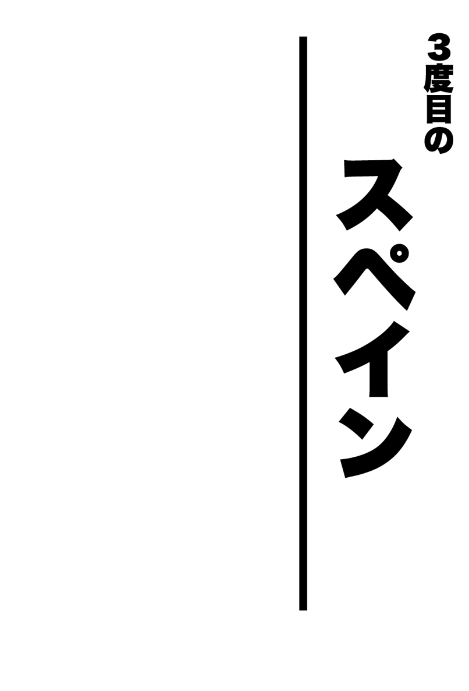
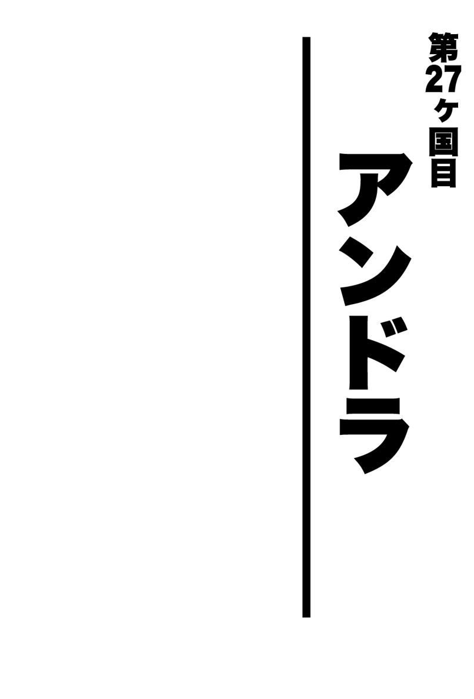
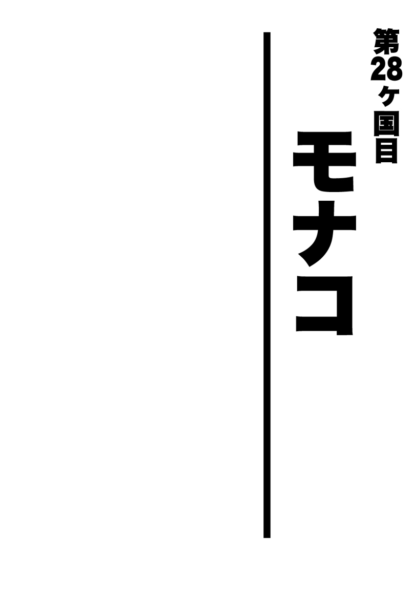
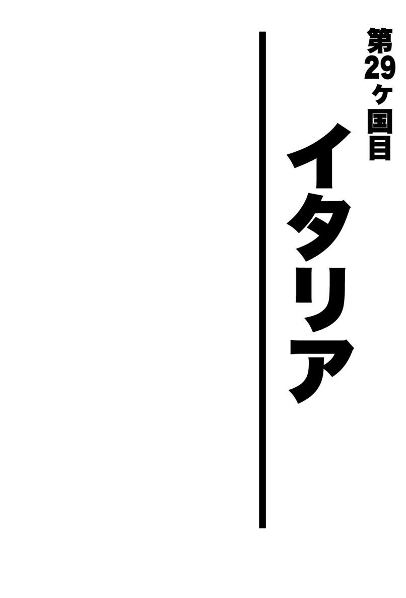
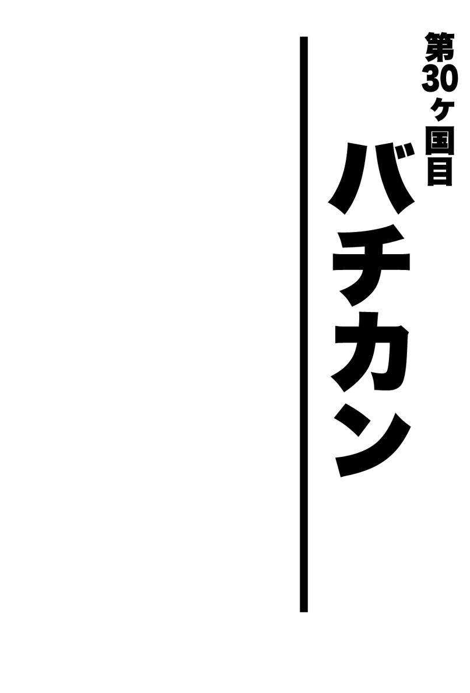
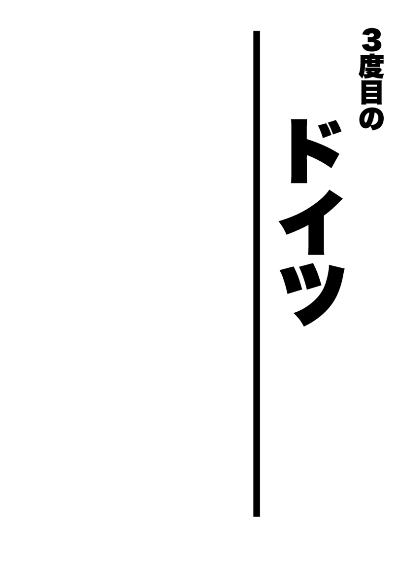
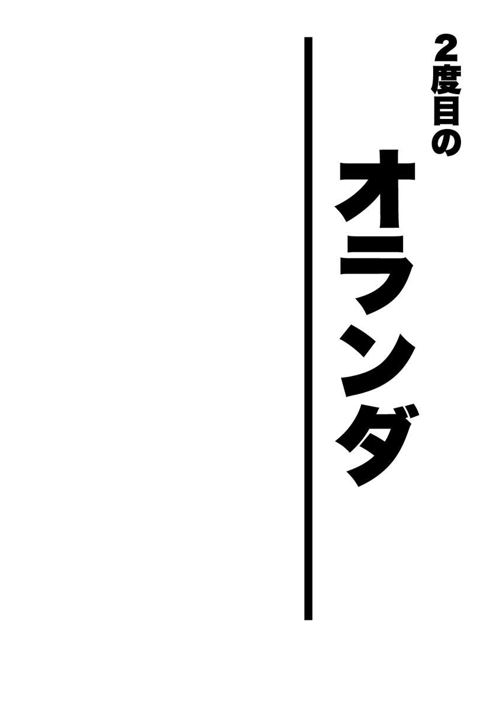
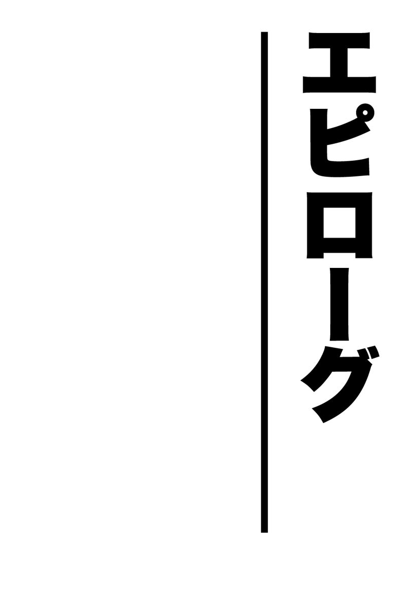

| 珍夜特急6―南欧・西欧― | |
| クロサワ コウタロウ | |
| Kurosawa Lettering (2013) | |

※本書に記載されている料金は１９９９年当時のものです。

グラナダ侵攻
およそ１ヶ月ぶりのスペインは、相も変わらず強烈な日差しに包まれていた。
まさに突き抜けるような雲ひとつない紺碧の空の下、その激しい照りつけによって必要以上にその陰影を露わにされた岩山をぬうように、私はコスタ・デル・ソル――いわゆる「太陽の海岸線」と呼ばれる地帯を海に沿って北上した。右手の眼下に見えるのがどうやら情熱の街マラガらしい。
私はマラガには下りず、この日はそのままもっと北に位置するグラナダという町に向かうことにしていた。
グラナダは、その成り立ちを紀元前までさかのぼれるヨーロッパでも屈指の古都である。
もっともアンダルシアに限らずとも、地中海沿岸部にある町はヨーロッパ側、アフリカ側問わず紀元前からの歴史を誇る。
地中海こそが言わばこの辺りの文明の源なのである。
かつての15世紀まで、アンダルシアと呼ばれるこのスペイン南部を支配していたのは、カトリックではなくイスラム勢力だった。
８世紀から、およそ７００年間にわたって断続的に繰り返されたキリスト教徒のイベリア半島奪還作戦――いわゆるレコンキスタによって、徐々にヨーロッパ大陸から駆逐されていったイスラム勢力の最後の砦が、このグラナダだったのである。
１４９２年、遂に首都であるグラナダを攻略されたナスル朝は滅亡。
これによってキリスト勢力は、イベリア半島から完全にイスラム勢力を駆逐することに成功したのだった。
このような歴史もあって、かの地グラナダはセビリア同様に今も色濃くイスラム色を残しており、中でもアルハンブラ宮殿は、イベリアに残されたイスラム建築の中でも最高峰の完成度を誇るという。
イスラム様式好きな私にとって、このアルハンブラ宮殿はこの際是非とも観ておきたい。
それに敵勢力圏内で最後まで抵抗し続けた異教徒の都という響きは、何とも叙情的で興味をそそるではないか。
＊
グラナダは私が想像していた通り、少し寂れたセビリアよりもずっと小さい町だった。
しばらくユースを探しながら町をうろついていた私は、セントラル付近に小高い丘を埋め尽くすような古い住居の密集地を見つけた。
――これは......まるでメディナではないか。
そしてその中にひと際大きな建造物が見え隠れする。どうやらあれがこの町におけるお目当てのアルハンブラ宮殿らしい。
町のセントラルから少し離れた場所に、ガイドブックの情報通りユースを見つけた私は、すぐにそこをしばらくの根城とするべくベッドを取った。
このユースは町外れにあるためか敷地内に駐車場も有している。これならばパリダカの安全についても問題ない。
部屋は２段ベッドが３つほど並べられたヨーロッパの一般的なユースの間取りだった。既に２人の白人の先客がいる。
私はこの２人の旅行者に挨拶した際、すぐに彼らがドイツ人だと気づいた。
この聞き慣れた訛りのある英語は間違えようはずもない。彼らはドイツ――しかも南部バイエルン辺りの出身に違いない。
予想は違うことなく、その実彼らはミュンヘンから来た観光客だった。
ちょうど荷物を整理し終えた私を、彼らは夕食へと誘った。もちろん私に断る理由もない。
こうして私たち３人は、連れ立って暗くなったグラナダのセントラルに向かった。
適当に見つけたバルでセルベッサを飲みながら、私は久しぶりに英語での会話を楽しんだ。
２人のドイツ人は――その見た目からは全く想像できなかったのだが――ミュンヘンの大学生とのこと。特に大柄な髭面の方は私より10歳は年上に見える。
彼らがこの町に来た理由もやはりアルハンブラを観るためだったようで、明日内部を観光するのに先んじて、今夜は外からその外観を撮影するつもりなのだという。
どうやらアルハンブラは暗くなるとライトアップされるらしく、彼らはその絶好の撮影スポットも既に調べていた。
数杯のセルベッサでほどよく酔ったあと、アルハンブラの撮影に付き合うために私も彼らに続いてそのバルを出た。
メディナのような丘に密集した古い住宅地の入り組んだ隘路を登り、彼らのあとに続いて私がたどり着いたのは、ちょうど間にひとつ谷を挟んでアルハンブラ宮殿の対面に位置した丘の上の公園だった。
なるほど。崖の上に造られたこの公園からは、青白くライトアップされたアルハンブラ宮殿が真正面に望める。
私はそのあまりの美しさに、しばらくの間言葉を失って立ち尽くしていた。
そんな私とは対照的に、連れのドイツ人２人組は首からさげたカメラをアルハンブラに向けて、忙しなくシャッターを切っている。
「シューン！（美しい）」
「ガイル！（すげえ）」
私はこれまで様々な観光地で現地の人間によく、
「日本人はいつだってカメラで写真を撮ってばかりいるよな。実物を観るよりできあがった写真を眺める方が重要みたいにさ」
などと嫌味を言われていた。
少なくとも私自身はこの旅にカメラを持ってきていないのであまり気にせずにいたのだが、この状況を見る限り、それは何も日本人だけという訳ではなかろう。
ここは現地でも有名なデートスポットのようで、スペイン人のカップルたちがこれ見よがしに、熱い抱擁や接吻を人目もはばからずに繰り返している。
そんな中、私はひとりベンチに座ったまま、この美しい夜景を男ひとり――否、むさ苦しい男３人で観に来てしまったことを後悔していた。
もし叶うならこの夜景は女性と観たい――こんな風に思うのは、健全な男子であれば至極当然なことではなかろうか。
ドイツ人２人は、いつまでも騒ぎながらシャッターを切り続けていた。
翌日、私は再びこのむさ苦しい３人のパーティーで、アルハンブラ宮殿の内部を見学した。
確かにその広大な敷地や細部まで施されたイスラム模様、趣向の凝らされた庭園などは素晴らしかったが、私にとっては昨夜観た外からの景観の方がずっと印象的だった。
２人のドイツ人たちはアルハンブラ宮殿の拝観が終わると、これでこの地での任務は全て完了したとでも言わんばかりにさっさと荷物をまとめ、ユースを出ていった。
彼らも学生である以上、私のように所持金すなわち滞在可能時間という訳ではないのだろう。
何はともあれ、私は意図せずして本来であれば６人部屋のドミトリーを独り占めできることになった。
私が現地の人間よろしくシエスタから目覚めたのは、ちょうど日も暮れたあとだった。
空腹感を覚えた私はひとりでの夕食を覚悟し、そのまま１階のロビーへと下りていく。そろそろレストランテも開き始める頃だろう。
――何処かのバルでセルベッサでも飲みながら、タパスでこの空腹を満たすとするか。
そんなことを考えていた私の目に、ふとロビーの片隅に佇むひとりの東洋人女性が映った。
小柄なその彼女はあまり垢抜けない黒縁の眼鏡をかけていて、何やら一生懸命ガイドブックとにらめっこしている。そのガイドブックはまごうかたなき「地球の歩き方」だった。
――間違いない。彼女は日本人だ。
私は即座に彼女を夕食に誘うことに決めた。
以前にも述べたが、海外ではたとえそれが異性だとしても、同郷の人間であるというだけで夕食ぐらいなら極自然に誘うことができる。
否、むしろお互いがひとりであるなら誘わない方が失礼に値するのである。よほど礼を失したり、酷い恰好でもない限り断られることはまずない。
ということで、この時の私がモロッコで買ったばかりの革のスーツを着込んでいたのは、よく考えてみれば幸運だった。
いつものボロではまさにこの「酷い恰好」に当てはまってしまうところだった。
「あの、日本人の方ですよね？」
「......え？ あ......はい」
「実は俺、これから食事に行くところだったんですが......もしよかったら一緒に行きませんか？ 先日まで同室だった連中が出ていってしまって、ひとりで夕食ってのも味気ないなと思っていたところなんです。あ、もう夕食は食べましたか？」
「え？ あ......ええ。ま、まだ食べてません。ええ。行きます......あの、ちょっと待っていてくれますか？」
彼女は相当びっくりした様子で、そのまま急ぎ足で部屋へと戻っていった。
よく考えてみれば、いくらなんでもこの誘い方はちょっと唐突すぎる。もうちょっと気の利いた言い方があったはずだった。
これまでのように外国人たちを誘うには、確かにこれでそこそこおかしくはないはずだったが、相手が同郷の人間であれば、もう少し回りくどい言い方をした方がよかったかもしれない。
私がそんな自己批判を行っていると、彼女が２階から急ぎ足で下りてきた。
彼女は外出用の衣服に着替えていて、少し野暮ったい眼鏡もコンタクトレンズにかわっていた。
この時の彼女が、先ほどに比べてずっと綺麗になっていたことに私は少なからず驚いた。
こうなると俄然自身の風体が気になってくる。服はこの際置いておいたとしても、髪は伸び放題だし髭もまた同じだ。
――これなら私も、もう少しちゃんとして来るべきだったか。
「待たせてご免なさい。行きます？」
「あ、ええ。行きましょう」
「ところでここは長いんですか？」
「いえ、そんなことはないです。俺も先日ここに着いたばかりで......。ただ昨夜同室の人間と町を歩き回ったので、悪くないバルを知ってるんですよ。そこに行こうと思ってるんですが、酒は飲めますか？」
「大丈夫です」
「じゃあ行きましょうか」
こうして私と彼女は、完全に暗くなっていたグラナダの夜の町へと繰り出した。
魅惑的な夜に
こうしていきなり私に誘われてしまった彼女は、いく子さんといって埼玉出身の独身女性だった。
小柄でどちらかと言うと童顔の彼女を、私はおそらく自身よりもいくつか年下だと思い込み、幾分先輩ぶった態度で接していたのだが、その実彼女は私よりも大分年上の大人の女性だった。
逆に彼女は私のことを自分よりも年上だと考えていたようだが、これは単に私の老け顔のなせる業だろう。
いく子さんは仕事を一旦辞めて、半年間の語学留学のためにヨーロッパにやってきていた。
彼女が学ぶ予定の語学はイタリア語で、留学先もイタリアのフィレンツェだったが、彼女自身ほかの国々を見てみたかったこともあり、授業が始まる前にヨーロッパ一周の旅をしているのだという。
たとえヨーロッパとは言え、女性がひとりでうろつくにはそれなりに勇気がいる。
いく子さんはその見かけとは裏腹に、男っぽい一面をも持ち合わせた思い切りのいい女性だった。
「へえ。そんなに遠くからバイクでここまでやってきたんだ、コータロー君は」
「ええ、まあ」
昨夜ドイツ人の２人組と飲んだバルで、私たちはセルベッサを堪能していた。
飲む相手が違うだけで、同じ店なのに雰囲気は大分変わる。昨日にも増して店内が明るく感じるのは私だけだろうか。
私たちは改めてお互いの自己紹介をすることで、一先ずあまりにも唐突すぎた出会いを補足した。
「コータロー君さ。私、ちょっとお願いがあるんだけど......」
「何ですか？」
「私、この町でフラメンコを観たかったんだけど、フラメンコって結構夜遅くでなければ始まらないんでしょう？ さすがに女ひとりでそんな夜遅くに出歩くのはちょっと怖くてね......よかったら一緒に行ってくれないかな？ フラメンコ。コータロー君はもうフラメンコを観ちゃってるって言うから、君の分は私が出すからさ」
「そんなのはお安い御用ですよ。行きますよ。一緒に」
確かにポルトガルのファドやフラメンコといったラテン系の催し物は、夜の９時から始まるところが多い。
どんな女性でもひとりで観に行くには、全く危険が伴わないとも言い切れない時間帯である。
もちろん私が一緒に行くことによって、その起こるかもしれない危機を回避できるかと問われれば甚だ疑問だが、セビリアのユースでの例もあるし、場合によっては東洋人の武術というはったりで乗り切れるかもしれない。
第一私ひとりの時だって、そこまでヤバい場面に出くわしたことなどないではないか。
私たちは結構な量のセルベッサを飲んだあと、バルを出て夜の町を散策することにした。
いく子さんが希望しているフラメンコの開演までにはまだ時間があったし、少々酔いの入った私としてはこの機会を利用して、是非とも彼女を連れていきたい場所があったのである。
それはもちろん昨晩むさ苦しい男どもと観た――あのアルハンブラの夜景だった。
野郎ばかりで観てしまったためにその美しさも半減してしまったあの異国の宮殿を、奇しくも同郷の女性ともう一度観に行ける機会を得たのである。多少気障ったらしくなりはするが、それも外国では許されるに違いない。
それにいく子さんにとっても、旧市街を通り抜けなくてはならないあの場所は、こんな機会でもなければ行くこともないだろう。
私としてはあの景観の方が、フラメンコよりもずっと彼女の心に深く刻まれるだろうという確信があった。
私たちは道中で見つけた酒屋で１本のワインを購入すると、ひたすら私の憶えている坂道を上り続け、ようやく例の公園にたどり着く。
「わあ、綺麗ね――」
「そうなんですよ。今日、俺は内部も見学してきたんですけど......やっぱりここから観る方が綺麗ですよね、このアルハンブラは」
月とライトに照らし出されたアルハンブラ宮殿を眺めながら、私たちは先ほど酒屋で買ったワインの栓を抜いた。
不覚にもコップの類いを買い忘れていた私たちはワインをラッパ飲みで回すしかなく、こうして最後の最後で詰めを欠いたせいで、もともと考えていたロマンティックな雰囲気からは大分かけ離れ、体育会系学生の二次会のようになってしまった。
それにしても私はかなり酔っ払ってきたというのに、このいく子さんにはそんな様子がまるでない。ザルなのだろうか。
こうして適当に時間を潰した私たちは、そのままいく子さんの目当てだったフラメンコレストランに向かう。
この夜私たちの向かったレストランは、以前私がエルビスと共にフラメンコを観たレストランよりも遥かに大きく、どちらかと言うと小さな体育館のような場所だった。
行われた演舞自体は以前私が観たものとさして変わらない内容だったが、男性の演技に関してはこちらの方が素晴らしかったような気もする。
何はともあれいく子さんは喜んでいたようだったので、私としてはこれでこの場はよしとした。
その後ユースに戻ると、私たちはひとり部屋になった私の部屋でもう少し飲んだ。
このユースも基本的には男女を別の棟にしており、通常であれば異性が越境してほかの部屋に入ることは許されなかったのだが、ひとり部屋であればチクる人間もいない。
ここでも私が酒のせいで徐々に我を失っていくのに対して、いく子さんは全くと言っていいほど崩れることがなかった。
実のところ私は、酒量に関しては若干自信があった。
学生時代、諸先輩方からはある程度過酷な指導を受けていたし、実際にそれは今旅においても様々なところで役に立った。酔えば酔うほど胸襟が開くというのは世界共通の理らしい。
私にとって瓶ビール４本にワインを１本、そのあとにコニャックを１本空けるくらいなら、ひと晩で耐えられる範疇だった。世間が一気飲みを禁止する風潮になるちょっと前の時代の話である。
いわんやそんな私が女性とサシで飲んで、先に酔い潰れるなどという醜態をさらしたことはこれまでに一度としてなかったのである。
しかしこの時ばかりは相手が悪かった。
酒の酔いと共に多少芽生え始めた下心や、部屋に２人きりという絶好の状況すら、一向に酔いを見せない彼女相手には何らつけ入る隙を見出せず、私はそのままひとり現実世界から離れていった。
私はこの後、数日間にわたっていく子さんとこのグラナダを鑑賞した。
よく考えてみれば、この旅においてひとりの女性と２人きりで数日間を過ごすという状況は初めてであり、感動を共有できる異性の相棒がいるということが無感動の一途をたどっていた私にとっては新鮮で、それでいて何とも心浮く時間だった。
しかし私には時間が差し迫っていた。
私には本格的な冬が到来する前にイタリアまで進み、まだ雪の降り積もらないうちにアルプスを越えなければならない可能性が残されていたのである。
このグラナダを出れば、寄ることのできる大きな港は大分絞られてくる。ここスペインのバルセロナ、フランスのマルセイユ、イタリアのジェノア――そんなところだ。
もしその何処からもパリダカを日本に送れなければ、既に発送できることが判明しているオランダのロッテルダムまで戻らなくてはならない。
それはつまり冬のアルプス越えを意味していた。
その場合、かの山が完全に雪で覆われてしまう前に越える必要がある。否、さもなくば大幅な遠回りを強いられることになり、予算に翳りが見えつつある現状でそれだけは避けたい。
こうした理由から、私は後ろ髪引かれる思いでいく子さんより一足先にグラナダを出発することにした。
いく子さんは出発の朝、ロビーまで見送りに来てくれた。
「コータロー君、気をつけてね」
「ええ。楽しかったです。また何処かで会えるといいですね」
「コータロー君はこれから何処に向かうの？」
「このまま北上してバルセロナを通って、ピレネーを越えたあとはコートダジュールに沿ってイタリアへ向かいます」
「イタリアはいつ頃になりそうなの？」
「うーん、ちょっと正確には言えませんが、１ヶ月もしないうちにはイタリア国内に入れるかと思いますけど......」
「そう。それだったら、もしかしたら私がちょうどフィレンツェに戻る頃かもしれないわね。私、向こうではアパートを借りてひとり暮らしをすることになってるの。よかったら遊びに来る？ 泊めてあげるわよ」
「いいんですか！」
「別にいいわよ。それくらい。何か書くものある？ それに住所と電話番号を書いておくから、近くまで来たら連絡してよね」
「あ、ありがとうございます......」
いく子さんにフィレンツェの連絡先を書いてもらった日記帳を、私はことさら大事に荷物の奥深くにしまった。もうギリシャの二の舞には決してなるまい。
たったこれだけのことで、今後の旅に何と張りが出ることか。
私は暖機を終えた愛機にまたがると、できるだけ颯爽とユースから飛び出した。
もしかしたら本当にこの旅でもう一度、いく子さんと会えるかもしれない。
いく子さんには失礼かもしれないが、たとえそれが男であろうとも、これから向かう未知の土地に知った顔があるということは、それだけで孤独な旅人に力を与えてくれる。もちろんそれが女性であればなおさらだ。
イタリアのフィレンツェで晴れて楽しく過ごすためには、その前にまずこのパリダカの発送元を決定しておかなくてはならない。それでこそ後顧の憂いも絶てるというものだ。
これから向かうバルセロナは、オリンピックも開かれたほどの大都市である。
――もしかしたら案外、バルセロナ辺りから安く愛機を発送できるかもしれない。
私はそんな淡い期待を胸にグラナダを出ると、再び乾いた荒野へとパリダカを走らせた。
アメリカから来た教授
エルビスやいく子さんといったこのところの度重なる同胞との出会いは、これまでの長い道程で私が無意識のうちに押さえつけていたほのかな望郷の念を、次第に強く意識させる要因となっていた。
それはいつ、何処から日本に帰るのかすらもいまだに決められない私にとって、いささか厄介な荷物となりつつあった。
リスボアという旅のゴールを既に通過してしまい、もはやこの愛機パリダカを日本に向けて発送するためのみに大地を移動し続けているという現状が、急に不毛に思えてきたのである。
カルカッタをスタートした時の希望や、リスボアにたどり着いた時に感じた達成感はもはや完全に過去のものとなっていた。
日本の友人たちは、今頃一体何をしているのだろうか。
世界を支配する森羅万象の理の中でも、唯一時間だけがそこに生ける生物に平等な枷である以上、私がこうして無感動な日々をただ漫然と過ごしている間にも、彼らは彼らでかつて共に過ごした時間軸とは別の時間を過ごしているに違いなく、それはこの時何故か無性に私を焦らせていた。
パリダカはそんなうだつの上がらない主人を無事バルセロナまで運んでくれた。
しばらくこの大都市を走り回ったあと、私は街のセントラルから大分離れた郊外にユースを見つける。
スペイン屈指の大都市バルセロナは、私にはむしろマドリッドよりも近代的に映った。
訪れる観光客の数もそれ相応のようで、何とかベッドを取れた部屋はこの東洋からのライダーを最後に満室となってしまった。
バルセロナには、まだ造りかけの大聖堂サグラダ・ファミリアや、その他ガウディの代表的な建築物がいくつか残されている。
もちろんほかにももっと見所はあるのだろうが、この時の私は前述した気分だったこともあり、いつにも増して精力的に観光を行う気にはなれなかった。
むしろ私がやらなければならないのは、この街の港にあるかもしれない輸送会社を探すことだった。
「おい。その地図、私にも見せてくれないかね？」
翌日。早速港で海運会社を探そうと、先ほどインフォメーションで手に入れた市内地図を眺めていた私に、上のベッドに荷物を置きに来た白人が突然声をかけてきた。
「あ、ああ。いいよ。欲しければ受付でもらえるぜ」
私はこの少々不遜な態度の大柄な白人中年に、ちょっとむっとしながらもそこは寛大に地図を渡した。
英語の発音具合からすると、おそらく英語を母国語とする国の出身だろう。
少しの間地図を眺めていたこの白人は、やや投げやりにそれを返すと簡単に自己紹介した。
「ありがとう。私はリチャードだ。あんたは日本人か？」
「ああ。俺はコータローだ。よろしく」
「ところで、ええと......コータロー。あんた、明日は何処に行くつもりなんだ？」
「明日はとりあえず簡単に観光しながら、ちょっと探し物をする予定だな」
「そうか。いきなりで悪いんだが、もしよかったら明日、私の探し物も手伝ってくれないか？」
「？」
このリチャードというアメリカ人は、何でもこの街でとある大学を探しているとのこと。
彼は大学の教授か助教授で、今年からこのバルセロナで教鞭を執ることになっているらしい。しかしその大学への行き方がわからずに困っているというのだ。
「ああ、それだったら多分地下鉄に乗ればこの駅まで行けるだろう。ほら、この駅のすぐ近くに大学って書いてあるし」
「おお、確かに。よく見つけたな。しかしまあこれも何かの縁だし、せっかくだから明日一緒に行かないか？」
「あ、ああ。別に俺は構わないけど......」
こうして私は、何故かこのいい年をこいた大男のおもりをする羽目になってしまった。
その翌日、私とリチャードは地図を片手に列車に乗り込んだ。私の距離感覚からいけば１時間もかからずに目的地には着くだろう。
このリチャードという全く旅慣れていない男は、私が乗り換えなどで仕損じないように注意深く駅を確認している間も、横で何かのビジネスについて喋り続けていた。
何でも彼は、故郷のアメリカで経営学を修めた証――ＭＢＡというものを持っているらしい。
それ以外に関しては、彼が全く私の英語力を考慮しないで話し続けたせいもあってほとんど理解できなかった。
「それにしてもスペインの大学で教鞭を執るなんて、あんた、スペイン語は得意なのかい？」
「ああ、もちろんだ。まあ授業は英語で行うがな。何といっても英語が世界のスタンダードだからな」
「へえ」
私は――だったら人に訊きながら十分ひとりで目的地にたどり着けるじゃないか――などと思いつつも、彼の目的としている場所まで付き添っていった。
駅を出ると少々の雨が降っていたが、大学が駅からさほど離れていなかったお陰もあって、それほど濡れずに構内に入ることができた。
私にしてみても外国の大学を見学する機会など滅多にないので、これはこれで興味深い。
構内は私と同年代の学生たちでごった返していた。
私はふと自身が通っていた郷里の大学を思い出す。このような大陸の反対側とは言え、大学の内部は何処もそれほど変わらないらしい。
何処へ向かえばいいのかわからずうろたえているリチャードのために、私は受付と思しきところで彼の事情を説明し、職員のいる場所までの行き方を英語で訊いた。
それにしてもこのリチャードという男の不甲斐なさは一体何だ。
英語だったらあんたの方が、私よりもよっぽど得意なはずではないか。
受付の職員は、リチャードを事務室までわざわざ連れていってくれると言ったが、リチャードはこの職員のスペイン訛りの英語を全く理解できない。
お陰で私が、英語を英語に翻訳しなければならないという体たらくだった。
しかも彼のスペイン語は私よりも大分低いレベルで、これでよくスペイン語を話せるなどと吹けたものだと呆れてしまった。
怪訝な顔をしつつ、それでも職員はリチャードを何処かへと連れていく。とりあえず肩の荷が下りた私は、彼が戻ってくるまで煙草を吸いながら待つことにした。
何はともあれ事務員と話がつけば、それで万事上手くいくだろう。
その後はきっと彼の住居探しなどが待っているのだろうが、そこからは私の知ったことではない。
それにしてもこんなに怪しい男を、大学側もよく雇う気になったものだ。
私がちょうど煙草を１本吸い終わった頃、リチャードが戻ってきた。
やけに早い。しかも彼はどういう訳か妙に不機嫌だった。
「どうだった？」
「――どうもこうもない。彼らは私を雇わないそうだ」
「はあ？」
「とにかく飛び込みでの教員採用は受けつけていないということだ」
「......そりゃあそうだろ。飛び込みって......あんた、ここで働くことが内定していた訳じゃないのか？」
「私はＭＢＡを持っている。しかも第二外国語はスペイン語だ。だから間違いなくここで雇ってもらえるはずだったんだ」
私はあまりにも予想外な顛末に、しばらくの間呆気にとられていた。
とどのつまり、私はただ単にリチャードの無謀な就職活動に付き合わされただけだったのだ。
よくよく聞いてみると、彼はアメリカですら教壇に立った経験はなく、ＭＢＡを持っているというその一点のみで、自分が教育者になれると信じきっていたのである。
しかもその地にこのスペインを選んだのは、自分が第二外国語でスペイン語を取っていたために多少なりとも縁があると思ったからだそうな。
そのあと私たちは再び列車に乗ってユースに戻ったのだが、彼はまるで何事もなかったかのように往路と同じテンションでずっと喋り続けていた。
「なあ、コータロー。実を言うと私はこの国に知り合いがいるんだ。今考えていたんだが、そいつと私とお前でビジネスを始めないか？ もちろんこのスペインでだ。なに、私たちならきっと上手くいくさ」
こんな話ばかりされていては、それは私とて無口にもなろう。
アメリカには「アメリカンドリーム」という言葉がある。
もしかしたらこのリチャードの無謀としか思えない行動こそが、そのドリームを実現するための要素なのかもしれない。
私にはただの世間知らずなおっさんにしか見えなかったが、もしかしたらアメリカの人間は、皆大なり小なりこういった――ある意味チャレンジ精神を持ち合わせているのではなかろうか。
私はこの時初めて、これまで一度も意識したことのなかったアメリカという国に興味を覚えた。
現在世界でもっとも強大な国――アメリカ合衆国。
私自身のこれまでの道程を振り返ってみても、幸か不幸かほとんどかの国の人間と触れ合う機会はなかった。
誰かが言っていたが、アメリカ人の個人旅行者はほかの国の旅行者に比べて極端に数が少ないという。
その理由としては、アメリカという国が世界各国で行っている所業のせいで、同国の人間は安心して外国を回れないという説や、どの国よりも自国が世界で一番素晴らしいと考えているから、わざわざ外国にまで出かけていったりはしないのだ――といった説を聞いたが、そもそもこれを教えてくれた人物がアメリカ嫌いだったので、あまり信憑性があるとも思えない。
私たち日本人にとっては、いい意味でも悪い意味でももっとも関係の深い国アメリカ。果たしてその実態とは、一体どんなものなのだろうか。
上のベッドで眠るリチャードの豪快ないびきを聞きながら、私はひとりまだ見ぬ新大陸に思いを馳せた。

寝袋の消失
バルセロナを出発した私はそのまま海岸線に沿って北上し、ピレネー山脈の手前にあるフィゲラスという町に向かっていた。
結局バルセロナでは、愛機を日本に発送できる会社を見つけられなかった。
そこで悩んだ挙げ句バルセロナでの探索は諦め、次なる候補地――フランスのマルセイユに賭けることにしたのである。フィゲラスを越えればその先はピレネーとなり、改めて言うまでもなくその向こう側はもうフランスだ。
このフィゲラスという町は、知る人ぞ知る――とまでは言わないが、それほど有名な観光地ではない。
私がこの町を次なるターゲットにした理由はただひとつ。
この町にあるダリ美術館に足を運ぶためだった。
日本人でダリを知らない人はいないだろう。
ひしゃげた時計や脚のやたらと長い象など、彼の作品はそのキテレツさのみならず、卓越した技術にも定評がある。
これまで何度も述べてきた通り、私は根っからの西洋美術ファンという訳ではなかったが、この国を出る前にせめてもうひとつくらい美術館にマーキングしておきたかったのである。
ピカソのキュビズムよりは、ダリのキテレツ絵画の方が素人にはまだ理解できる可能性がありそうだった。
フィゲラスは予想に違わず、何処にでも見かけるようなありふれた田舎町に過ぎなかった。バルセロナの忙しない喧騒に食傷気味だった私にとって、これはちょっとありがたい。
探し回る必要もなくユースの看板を見つけた私は、そのまま小さな駐車場に愛機を乗り入れた。
時期がよかったのか悪かったのか、このユースにはほとんど客がいなかったため、労せずしてベッドを確保できた。とは言え、私とてダリ美術館さえ観てしまえばそれ以上ここに用はない。さっさと先を急ぐのみである。
部屋に荷物を放り込むと、私は早速「お弁当」を持ってダリ美術館へと向かった。
ユースから少し歩くと、そこにはもう誰が見てもそれがそうだとわかる奇妙な形をした建物が見えてくる。
建物の上に備えつけられている金の巻き糞のようなものは、一体何なのだろうか。似たようなものを確か浅草の方で見た覚えがある。
結論から言ってしまうと、ちょうどこの時期何処かほかの国でダリ展が行われていたらしく、残念ながらこの本拠地には有名な作品のほとんどが欠けていた。
私は美術館を出たあとも、決して嫌いではないこの小さな田舎町を散策する。
途中公園で足を止め、ベンチで日記を手に佇んでいると、突然ヒッピー然としたひとりの白人が声をかけてきた。
「あの......ちょっと......いいですか？」
今回のこれは私の意訳ではない。
この白人はたどたどしくはあるものの、日本語で話しかけてきたのである。
「はい？」
「ああ、やはり......日本人ですね......」
どうやら久しぶりの日本語を使って暇つぶしがしたいらしい。
年齢は40代の中頃だろうか。ブロンドの髪と髭は長いこと放っておかれたようで、何処かインドのサドゥーを彷彿させた。
服はそれ以上にボロボロだったし、背中に背負っている怪しい布でできたバックパックは、何が入っているのかはちきれんばかりに膨らんでいた。
私が聞いているか否かにかかわらず、彼はそれからしばらく私の横で宇宙と神の原理について話し続けていた。
それがあまりにも電波な内容だったため、私は相槌を打つタイミングもわからず、しばらく彼の好きにさせておいた。
それにしても、彼はこんな小難しい日本語を一体何処で学んだのだろうか。
そんな疑問からちょっと彼に質問をしてしまったが最後、あっという間に私の日記帳は彼によって描かれた奇妙な図版で埋め尽くされてしまった。
陰陽道の図のようなものや、「かべのひかり」「風」などの意味不明な日本語もある。
そう言えば彼のはちきれんばかりのバックパックにも、フェルトの切れ端で作った「くじら」という平仮名が縫いつけてあった。
彼の記した真理の中に「でいたせたがやく」という単語を発見した私は、その意味について問うたところ、どうやら昔付き合っていた日本人の彼女が住んでいた場所らしい。
なるほど。これで彼が日本語を知っている点については合点がいった。
私はこれ以上日記帳を無駄にするのも嫌だったので、彼には適当に別れを告げてその場を去った。
果たしてこの奇妙な男は、一体誰にこのような教えを授かったのだろうか。
その教え主を探るヒントこそが「でいたせたがやく」なのだろうか。
モロッコよりこのイベリア半島に帰還してから、どうもこのような奇妙な人間に出会うことが多い。
しかしこの男に関してだけは、この町がフィゲラスだったこともあり、まだ少しだけ納得できるような気がした。
それにしても惜しむらくは、この町が私にとってスペイン最後の町となってしまったことである。
＊
フィゲラスに到着した時点で、既に暦は10月の下旬に入ってしまっていた。
日本ではもうそろそろ厳しい寒さが到来している頃合いだ。それでもまだこうして特に防寒対策の必要もなく走れているのは、この地がまだ地中海に面した温暖な気候地帯だったからにほかならない。
しかしこの温暖な気候ともこの日を境にしばらくお別れとなる。
これから再びピレネーを越えて、フランスに入らなくてはならないからである。
以前私がこのピレネーを越えた時には、その北端を通過し、バスクに抜ける道を選んだ。
今回はその進路上、南端にあたる部分を抜けるつもりだったが、これまでしばらく退屈なライドを続けてきたせいもあって、私は急遽予定を変更し、少し北上してピレネー山中にある小国アンドラを経由することにしたのである。
せっかくの山道だ。できるだけ長く走りたい。
高度が上がる以上、当然それに伴って気温は下がる。
この時私はアンドラについて、英国王室専用のスキー場があることくらいしか知らなかったが、どうせヨーロッパを巡るのならできるだけ多くの国を見ておくに越したことはあるまいと、安易に変更した進路だった。
ピレネーは以前通った時以上の素晴らしいワインディングロードで、私とパリダカを歓迎してくれた。
スペインからの餞別なのか、太陽がまだ燦々と照りつけてくれているお陰で、そこまで寒さは感じない。
これまで風の強い平地ばかりを走ってきたせいもあってか、その久しぶりの緊張感や疾走感は、改めてライダーであることの素晴らしさを思い知らせてくれる。
それに久しぶりの野営も、この山中であれば心ゆくまで楽しめそうだ。
夢中でどれくらい走っただろうか。気づいた時には既に国道上にアンドラへの標識が現れるようになっていた。
残すところ数十キロで越境してしまうことになる。
――さて。今晩は国境の手前で早めの野営と決め込むべきか否か。
おもむろにエンジンを切り、煙草をくわえたところで、私はパリダカの積載に違和感を覚えた。
――ない！
一番上に積んであったはずの寝袋がなくなっているのである。
さかのぼること５ヶ月前、トルコのドグバヤジットで手に入れてから、どんな女よりも寝起きを共にしてきた迷彩模様のちょっと窮屈な寝袋である。
慌てて煙草を吐き出した私はすぐにエンジンに火を入れ直し、来た道をひたすら低速で戻る。
ピレネーに入ったところで一服した時点では、まだ彼女は荷物の一番上に鎮座していたはずだ。そう遠いところに置き去りにしてきた訳ではあるまい。
それから私は、何と数十キロにわたって失った寝袋を捜索したのだが、どういう訳か彼女を見つけ出すことはできなかった。
この時私は改めて寝袋の迷彩模様を呪ったのだが、全てはあとの祭りだった。
それにしてもピレネーは何と呪われた山なのだろうか。
もうひとつの欠かせない相棒だったＭＳＲのバーナーも、往路のピレネー山中で炎上させてしまっている。
とは言え、いつまでも失った寝袋にかまけている訳にはいかない。
予想外のタイムロスのせいで、余裕があったはずの時間はたちどころに失われていた。このままでは寝袋なしに極寒での野営とならざるを得ない。
少々思案したあと、私はこのまま先を急ぎ、アンドラで寝袋を購入するというアイデアを思いついた。
スキー場がある場所なら、夏は登山と相場が決まっている。
それならば、案外いい寝袋を手に入れることができるかもしれないではないか。しかもアンドラは誰もが知る免税国家だ。逆に掘り出し物を入手できる可能性だってある。
方針を決定した私は、遅れを取り戻すためにも急いでパリダカを再スタートさせた。
＊
アンドラは、フランスの大統領とスペインの司教を国家元首とする珍しい公国である。
金沢市とほぼ同じ面積だというこの国は、ほとんど観光によってのみ成り立っていると言っても過言ではない。
その観光資産とはもちろん山国ならではの自然である。
となればアウトドアグッズの品揃えも、あるいはマドリッドやバルセロナよりも充実している可能性が高い。
今回に限ってはこの予想も的中し、私は訪れた町アンドラ・ラ・ベリャのショップで本格的な寝袋を入手することに成功したのである。しかも値段は３５００円ほどだった。安い。
一方で観光立国である以上、安い宿泊は望むべくもなかったため、目的を果たした私はすぐにこの国を出国し、フランスへと入国する。その後いくらか高度を下げたピレネー山中にてテントを張った。
実際このような経緯で購入した寝袋は、これまでの私の野営における睡眠環境を一変させてしまうほどに優れた逸品だった。
一応スリーシーズン（冬以外）対応となっていたが、夜になって急激に気温の下がった10月のピレネー山中でさえも十分に温まれる。
中面がポリエステルではなく綿となっているために肌触りがいいのも、その要因のひとつだろう。
あるいは私がこれまで連れ添ってきたトルコ製の寝袋が、実は相当に酷い品質だったのかもしれない。そう言えばあれは少し丈も足りていなかった。
災い転じて何とやらとはよく聞く言葉だが、これまで転じないままのことの方が多かった私にとって、この寝袋の交代劇は久しぶりの福だったと言える。
トルコ製の彼女の方は、今でもピレネーの何処かでひっそりと私に発見されるのを待ち続けているのだろうか。

パリダカ、モナコグランプリを走る
ピレネー山脈を無事に下りきると、そこには再び温暖な気候に包まれた南仏が姿を現した。私はステアリングを東に向けると、フランスの南岸コート・ダ・ジュールを目指す。
私にとっては２度目となるフランス入国だったが、既にこの国にはほとんど何の興味も持てなくなっていた。
南仏は確かに気候も温暖だったし、通り過ぎる小さな村々は私好みの寂れてのどかなものが多かった。
特に海岸線は、今がもう10月だということを疑ってしまうくらいの暖かさで、海辺にはまだ海水浴をしている人々すら見受けられた。
ヨーロッパではリゾート地として名高いニースもこの海岸線上にある。
にもかかわらず、この時の私にとってそれらが魅力的に映らなかった理由は、大きく分けて２つあった。
そのひとつが、いまだに決められないバイクの発送元――つまり港問題である。
オランダのロッテルダムでポートを訪ねて以降、私は２つの大きな港町に立ち寄っていた。
リスボアとバルセロナである。
しかし私は、そのどちらにも適切な輸送会社を見つけられなかった。
つまりこの時点で確実にバイクを日本に発送できるとわかっている港は、このロッテルダムひとつに限られていたのである。
ここから先、日本にバイクを発送できると思しき港は２つあった。
ここ南仏のマルセイユと、北イタリアのジェノアである。
以上の理由から、私のこの南仏での興味事は一にも二にも、マルセイユにおける発送元探ししかなかったのである。
そしてもうひとつの懸念事項が、迫りつつある旅の締め切りだった。
私が日本より携行しているカルネという愛機のパスポートが、延長の手続きをしない限り１年間という期限付きであることはこの話の冒頭で述べた。
私が日本を発ったのがこの年の１月15日である点に鑑みると、バイク発送の手続きまでは、もうある程度予定に組み込んでおかなければならない時期に来ていたのである。
万が一マルセイユやジェノアで、ロッテルダム以上の条件の輸送会社を発見できなかった場合、私は再びロッテルダムまで戻らなくてはならなくなる。
イタリアからロッテルダムまでの距離を敢えて無視したとしても、その中間地点にアルプスという如何ともし難い難関がそびえ立っているのが何よりも問題だった。
繰り返すが、季節は既に11月になろうとしている。
私がそれを実感せずに済んでいるのは、ただ単にこの南仏の温暖な気候のお陰に過ぎない。
今この瞬間のアルプスはおそらく、極寒なのはもちろんのこと、もしかしたら積雪しているかもしれなかった。
パリダカの発送元に関する問題と、それに伴うアルプス越えの問題。この２つは密接に関係していて、どちらか片方だけを解決するという訳にはいかなかったのだ。
私に与えられた選択肢は多くない。
まずマルセイユとジェノアに向かい、早急に輸送会社を探す。
その両者の条件とロッテルダムでメモしてきた条件を比べ、前者の方が好条件の場合は、イタリアを周遊してから該当の港に戻り、速やかに愛機発送の手続きを行う。
万が一この２つの都市で輸送会社を見つけられない――あるいはロッテルダムよりも条件が悪かった場合には、できるだけ早くイタリアの旅に幕を引き、真冬のアルプス越えを敢行して再びロッテルダムに向かう。
この場合アルプスを越えるのではなく、再び南仏まで戻り、そこから気候の温暖な地域を選んでロッテルダムまで北上するという方法も残されていたが、来た道を戻ることはライダーにとってもっとも忌むべき行為である。
したがってこの方法は真っ先に選択肢から外した。
こういった難題が、フランスに舞い戻ってきてからずっと私の中で解決されないまま残されていたのだった。
そして悪いことに、まず第一の候補地だったマルセイユについては、あまりよくない状況である事実が現地調査によって明らかになったのである。
理由はこのマルセイユの港が、ヨーロッパでも有名な札つきの港だという点にあった。
私は立ち寄る村や町で、マルセイユからバイクを発送できる可能性について現地人に聞き込みを行った。
しかしほとんどのフランス人が異口同音に、
「あんた、そのバイクはもういらないってことだっぺ？」
とのたまうのである。
現地人の情報が必ずしもあてにはならないというのは、私がこの旅で学んだ教訓のひとつである。
それにしても、これだけ色々な人に繰り返し悪評を聞かされるとさすがに無視できない。
それに私が常時監視していられるならまだしも、バイクの発送に関しては手続きを終えて納車してしまうと、その後の安否を確認することは不可能となる。
愛機を日本で受け取ったあと、その証明をカルネの発行元であるＪＡＦに提出する義務を負う私にとって、それができない場合は違約金を支払わなければならなくなる可能性もあった。
こうして私は数日間、バイクを駆りながら思案を重ね、結局マルセイユには寄らないことに決めた。
こうなるとバイクの発送に関しての期待は、イタリアのジェノアのみに向けられる。
もしかしたらそれ以外のイタリアの港からも発送は可能かもしれなかったが、その調査に費やす時間が惜しかった。
バイクの発送に関して多くを投入するというのは、すなわちこの旅の終焉に費やせる全ての余力を失うことと同義だった。
このような思案の中、私は観光地として名高いニースを抜け、そのままモナコに入国したのだった。
＊
モナコと言えば、誰もがモナコグランプリを想像するのではなかろうか。
ごく稀に食べ物を想像する人もいるかもしれないが、あれはモナカでありこの国とは何ら関係ない。
正式名称モナコ公国は、世界でもバチカンに続いて２番目に小さい国である。
この国に比べれば、先に通過したアンドラなどよほど国家然としている。
とは言え、この国は世界中の金持ちの溜まり場となっているため、その景観はあたかも国そのものが、ひとつの洒落たアウトレットモールのような様相を呈していた。
切り立った崖にこびり付くように建てられた高級なマンション群。そのどの部屋からも地中海の絶景を望むことができる。
ヨーロッパでリゾート地と言えば、近隣のニースと並んでこの国を挙げない人はいまい。
国土自体はひとつの市に過ぎないので、ライダーにとっては入国するというより、大きめな国境ゲートを通過していると言う方がしっくりくる。
私はこの玩具のような町を一通り周回してから、次の国イタリアに入国することに決めた。
ご存知の通りここでは、世界のモータースポーツ愛好家にとって一大イベントとなるモナコグランプリが開催される。
モナコグランプリの醍醐味は何と言っても市街地コースで、その狭い一般道をＦ１のモンスターマシンが疾走する姿に、ちょっとだけ日本の峠族を思い出してしまうのは私だけだろうか。
私は市街地コースに組み込まれているグランドホテルヘアピンを、セナやシューマッハをイメージしながら滑走する。
――パリダカよ。残念ながらパリ・ダカールラリーのコースは走れなかったが、このモナコの方で勘弁してくれ。
しかしそれにしても狭い。
モナコはポール・トゥ・ウィン（ポールポジションのマシンが、そのままトップでゴールすること）の多いコースだと聞いてはいたが、これだけ狭いコースであれば、パスするポイントなど皆無と言っても過言ではない。
またそのブラインドコーナーの程度は、ほとんど嫌がらせに近い。
いろは坂のようなダウンヒルを駆け抜けるライダーの視界には、地中海と高級マンション以外の景観は全く入らないのである。
つまり対向車が来ないことを祈って走るしかない。まあレースでは当然対向車もないので、その心配はないのだろうが。
アップダウンの激しいコースをとりあえず一周し、私とパリダカのモナコグランプリは１時間もかからずに終わった。
その後、全く時を置かずして私はイタリアに入国した。
ヨーロッパに入ってからは両替の心配がなくなったため、私はそれがたとえ夕方であってもそのまま国境を越えるようになっていた。
カードを使うことにも慣れてきている。
イタリアに入ってからもしばらくは、モナコと変わらない切り立った崖に沿って東にパリダカを走らせる。
私はイタリア入国の感慨もさしてないまま、適当なところで国道を下り、人気のない川原を今宵の野営地に決めた。

ジェノア
翌日、私はまだ日の高いうちに、パリダカ発送の最後の候補地となっていたジェノアに入る。
ジェノアはイタリア語の場合だとジェノヴァと発音され、古くから海洋都市として栄えた港である。
マルセイユを訪れなかった私にとって、このジェノアは久しぶりの歴史観漂う荘厳な街として映った。
またかの古都はこの時、ローマやヴェネチア、ミラノと並び日本人にとっては馴染みのある街だった。何故ならばさかのぼること少し前、日本人初のセリエＡプレイヤーとなったキングカズこと三浦知良氏が移籍したチームのホームこそが、ここジェノアだったからである。
私は日本人には加護のある街だと信じ、休むのは後回しにしてとにかく港へと向かった。
埋め立て地のような地域にコンテナを改造しただけの事務所が乱立していたロッテルダムのポートとはうってかわって、ここジェノアの港は古い石造りの高い建物が並ぶ洒落た一画となっていた。
観光地からは離れているらしく、人や車の往来がほとんどなかったことは、探し物をするにあたっては好都合だった。
私は適当なところに愛機を停め、手当たり次第に道ゆく人を呼び止めては、この近くに愛機を日本まで輸送してくれそうな会社がないかどうかを、得意のゼスチャーを駆使して尋ねた。
何度かたらい回しにされたあと、ほどなくして私は１軒の海運会社を紹介してもらえた。
――今日はついている。まさかこんなに簡単にお目当てにたどり着けるとは。
久しぶりの公式な業務に、少々緊張しながら古い雑居ビルの階段を上がった私は、「EUROSPED」と書かれた扉を控えめにノックした。
中に入ると、日産のコマーシャルに登場するような天井の高いオフィスには大袈裟なデスクが置かれていて、そこではひとりのダンディーな中年イタリア人が何やら書きものをしていた。顔を上げて私の姿を確認した彼は、少々怪訝な表情のまま立ち上がった。
この会社のマネージャーであるらしいこの男はブルーノと名乗った。
ブルーノは日常会話程度であれば英語を話せたため、私はこれまでの経緯をできる限りわかりやすく説明した。
しばらく黙って話を聞いていたブルーノは、二、三質問をしたあと、手元にあったメモを使いながら、私が愛機をこのジェノアから発送できる可能性について説明し始めた。
結論から言ってしまうと、ここジェノアからの発送は可能だった。そしてそのためにかかる費用はおおよそ６５０ドルだという。
これはどうやらバイクを格納する木箱製作も含めた値段だったので、価格で言えばロッテルダムよりも少し安い。ロッテルダムのウィルソンでは、木箱の製作も含めると約７００ドルと言われていた。
これまで何度も繰り返してきたシミュレーションに従えば、この返答をいただいた時点で私の今後の予定は決定したことになる。
イタリアを周遊したあとここジェノアに戻り、このEUROSPEDにバイクの発送をお願いする――という至極シンプルな流れだ。
極寒のアルプスを越える必要もないし、わざわざもう一度オランダに行くこともないのだ。
しかしこの時、私はこの場で発送予約を入れるのに何故かためらった。
明確に認識できた理由としては、EUROSPEDの場合、ウィルソンに比べて出航する船の本数が極端に少ないということが挙げられるが、そのほかにも釈然としない何かが私の中に芽生えており、それが決断の邪魔をしていた。
この感覚は文章で説明するのがなかなか難しい。
断っておくが、ブルーノ氏を信用できなかったという訳ではない。
一先ず私はブルーノにお礼を言うと、パリダカのもとに戻り、ローマに向けて走り始めることにした。
いずれにしてもバイクは11月中に発送しなくてはならなかったが、まだ旅は完全に終焉を迎えた訳ではない。
必要な情報は入手できたので、とにかく今は自身の中に芽生えたこの訳のわからない逡巡を、もう少し考えてみることにしたのである。
今思えばあれは単に、旅の幕引きを決することに対して無意識のうちに湧き起こった「恐れ」ではなかったか。
理性の中では確実に下していた決断を、もうひとりのロマンチストな私が、頑なにそれを受け入れないための言い訳を探していたのではなかったか。
ジェノアを出る前に、愛機の発送条件を改めて日記帳にメモしていた私は、ふと少しさかのぼった記事に目をとめた。
――そうだった！
ここイタリアには、グラナダで会ったいく子さんがいるはずだった。
いく子さんはヨーロッパを旅したあと、フィレンツェで語学学校に通う予定だった。そして彼女はかの街で、アパートを借りてひとり暮らしをすることになっていたのである。
グラナダの日記には、別れ際にいく子さんが書き記してくれたフィレンツェの住所と電話番号が確かにある。
時間の経過具合からいっても、今頃は確実にフィレンツェをその居としているはずだった。その時ふと私の脳裏を、自身の不注意から訪ねる機会を失ったテッサロニキの女子大生たちがまたしても過ぎる。
この時の私は男女の問題以前に、全てを忘れて思い切り楽しめる相手を必要としていた。それが祖国を同じくする人間であれば、もはや言うことはない。
それにイタリア語を学んでいるいく子さんなら、バイクの発送でジェノアを使う場合には色々と相談に乗ってくれるのではなかろうか。
自身の逡巡のせいで重く沈んでいた私の気持ちは、この一瞬であっという間に晴れ渡った。
――よし、今日はフィレンツェに行こう。
となればまず、いく子さんに電話をしなければならない。突然の訪問が相手にとって甚だ迷惑だということは、ノッチの家で学んでいる。相手が女性であれば、なおさらその点に配慮しなくてはならない。
日記帳には確かに「泊まりに来ていい」と書いてあるのである。何をためらうことがあろうか。そう。これは正しいことなのである。
私はすぐに公衆電話を見つけ出し、日記帳を見ながら慣れない手つきでボタンをプッシュする。
しばらく呼び出し音が鳴ったあと、やおら向こうの受話器が上がった。私の胸は高鳴る。
しかし予想に反して電話口に出たのは見知らぬイタリア人の男だった。はて番号を打ち間違えたのだろうか。
それでも一応、いく子さんの在宅を確かめるべく丁寧に英語で用件を伝える。
すると意外にも男は少し待てと言い、電話口から離れたのである。
――これは一体どういうことだろうか。
いく子さんには既に、イタリア人の男ができてしまったのだろうか――。
いや待て、そう決めつけるのは早計だ。向こうのアパートでは管理人が電話の番をしているのかもしれない。日本の古い下宿などはそうではないか――。
そんな愚にもつかない思案を巡らせていると、電話口にいく子さんが出た。
『えー？ 本当にコータロー君なの？ 久しぶり！ 今何処？』
「本当に久しぶりです。いく子さん。今俺はジェノアまで来てるんですよ」
『おお。もうイタリアに入ったのね。どう？ 元気にやってる？』
「え、ええまあ。それでいく子さん、ちょっとお願いがあるんだけど......」
『なあに？』
「これからフィレンツェに行こうと思ってるんですけど、今晩泊めてもらえないですか？ あ、別に変な意味じゃないですよ！ ちょうどフィレンツェを通るから一緒に飯でもどうかな――と思いまして......」
『――ああ、コータロー君......本当、ご免ねえ』
「あ......やっぱり彼氏とか、そういう問題ですか......」
『え？ もしかしてさっき出た人？ 違う違う。実はね、私、アパートでひとり暮らしだと思ってたんだけど、来てみたらホームステイだったのよ』
「ホ......ホームステイ？」
いく子さんの説明するところによると、事実彼女はフィレンツェに着くまで、本当にアパートでひとり暮らしをするつもりだったらしい。
しかし留学に際して日本側の窓口となる会社が手配した先はホームステイだったようで、今はある家族の家にひと部屋を借りて、そこで生活しているのだという。
――何たることか。
私は自分の中で、何かが一気にしぼんでいく音を聞いた。
「それじゃあ......さすがにちょっと無理ですね......」
諦めて電話を切ろうとした私をいく子さんは制止して、少し電話口から離れた。
『コータロー君！ 朗報よ！ 今ここの家族の人たちに訊いてみたら、今日一日だったら泊めてあげてもいいって！ 今ジェノアなんでしょ？ 早くおいでよ！』
この言葉で少しだけ盛り返した私は、自分が歓迎されていると思い込むことによって、何とかパリダカにまたがれた。
とにかくフィレンツェに向かおう。どの道かの地は私の予定にも入っていたのだ。
それにいく子さんもわざわざホストファミリーにお願いしてまで、私を招待してくれているではないか――。
ここで行かねば男ではない。
夜間強行軍
様々なことがあったジェノアの空は、夕暮れに赤く染まりつつあった。
私は改めてフィレンツェまでの道のりをミシュランで確認して、ちょっとした衝撃を受ける。
何とその距離は、どう見積もっても３００キロはあったのである。この時間帯からの出発では確実に夜間走行になる。というより３００キロなど、普段の私の１日の走行距離ではないか。何故電話をする前に確認しなかったのか。
しかしいく子さんは、もうホストファミリーに私の来訪を話してしまっている。今さらやっぱり明日にしてくれなんて言えば、もしかしたら許可を取り消されてしまうかもしれない。大体ゲストでもない見知らぬ人間の来訪なんて、ホストファミリーにとって迷惑以外の何ものでもない。
そう。もう賽は投げられたのだ。
私は覚悟を決めて、ジェノアからフィレンツェへと向かう高速道路に突入した。
かつての長野県知事だった田中康夫氏が、長野の山間部のことを「まるでイタリアだ」と比喩したことがあったが、少なくても私がこの時疾走したフィレンツェまでの道のりは、前知事のおっしゃる通りだった。
平坦な道はほとんどなく、高速道路は山をくり抜いて造られたトンネルをいくつも越える。
その地理的高低差のせいか、この道路は基本的にほとんどの箇所がトンネルか高い橋となっていて、広くても片側２車線の道路は暗闇と相まって私の恐怖心を煽り続ける。
私はガードレールの外に広がる底なしの闇に心を奪われないよう、一心に前だけを見据えていた。
ほとんど休憩を設けずに、どれくらい走り続けただろうか。
気づけばようやく前方に、街の明かりと思しき光が見え隠れするようになっていた。
これだけ暗ければ「花の都」とも呼ばれるフィレンツェの美しい姿も、拝むことはできそうにない。
私は高速道路を下りると標識だけを頼りに、街のセントラルに向かって走り始めた。時刻は既に20時を過ぎている。少なくても女性の家を訪ねる時間帯ではない。
さらに街明かりが増え、そこがセントラルだと判断した私は一度愛機のエンジンを切り、ひとつ前のパーキングで手に入れたフィレンツェの市内地図を取り出した。
このくらいの距離が、ミシュランも「地球の歩き方」も利用できないもっとも中途半端な距離なのである。
私は唯一の頼りとなる日記帳を広げ、かつていく子さんに記してもらった住所を確認すると、その市内地図と照らし合わせた。
これはフィレンツェに限った話ではないが、ヨーロッパでは日本に比べて住所を探し出すのが難しくない。
その理由はどの町でも道には全て名前がついており、そのストリート名と番号で住所を検索できる仕組みになっているからである。日本のように区画で分けていないので、13番地の次が65番地になっているなどということもない。
私はいく子さんが記してくれた住所のストリート名を地図の中に見つけると、近くまで走り、愛機を停めた上で今度は番号を照らし合わせる作業に移る。
しかしどういう訳かお目当ての住所は見つからない。
私は少々焦りを感じながらひたすら辺りを歩き回った。
――そんな馬鹿な。何故見つからないのだ！
憤った私は、まだ開いていた商店に転がり込み、そこの女将に地図を見せながら訳を問うた。
「あんた。これ、反対側の道の方さね。川を越えた向こう側に同じ名前の道があるでよ」
何たることか。
私は急いで愛機にまたがると、すぐに女将の指差す方角に向けて走り出した。
＊
こうして何とかお目当てだったマンション――いく子さんのホームステイ先を発見できた私は、近くの公衆電話から、まるで初めて恋人に電話する中学生よろしく緊張しながらダイヤルを回す。
メールではなく電話を使った連絡は、時として素晴らしいロマンティックを演出してくれるが、夜間の――それも家族のいる家に対してそれは全く当てはまらない。
電話に出たいく子さんは私のたどり着いた場所を確認すると、わざわざ迎えに出てきてくれた。
パリダカを停める場所は残念ながら見当たらなかったため、本日一夜限りということで路肩にチェーンで括る。
「大変だったわねえ」
アパートの階段を上りながら、いく子さんは笑顔で私を労ってくれた。
ステイ先の家族にできるだけ近づかないように挨拶を済ませた私は、一先ずいく子さんの部屋に荷物を置かせてもらい、シャワーを借りる。
その後いく子さんは、自身はおそらく既に済ませてしまっているにもかかわらず、夕食を共にするために市内に私を連れ出してくれた。
そのレストランは、いく子さんの住むマンションから通りをひとつ隔てただけの場所に佇む――ちょっとエジプト風の奇妙な店だった。
中に入った私はこの時初めて、今日の食事が起きがけに野営地でかじったパンだけだったことに気づいた。
客もまばらなこのレストランでワインを飲みながら、私たちはこれまでのお互いの軌跡を報告し合った。
いく子さんはもう既に学生生活をスタートさせており、毎日学校に通っているという。もっとも授業は午前中だけなので、今のところ午後は観光にあてているという話だった。なるほど。語学学校の時間割とはそのようになっているのか。
私の腹が膨れたあと、２人してステイ先に戻る。
――遂にきてしまった。
実はここに着いてからずっと気になっていたのが、果たして今晩、私は一体何処で寝るのかという点だった。と言うより、ほぼそのことしか考えていなかったと言っても過言ではない。
ステイ先のマンションは玄関と廊下、そしていく子さんの部屋しか見ていないが、飛び入りの客に貸し与えるような部屋があるとも思えなかった。ホストの誰かの部屋に寝るにしても、今のところまともな会話は全くしていないので、それはそれで緊張する。こんなことなら、もう少しきちんと挨拶しておくべきだったか。
――まあ順当に考えれば居間か......あるいは玄関とか。
さすがにそれはないか。
「同室になっちゃうけど、今日はこの部屋で寝てね。寝袋はもってるよね？」
ワインのボトルを持っていく子さんの部屋に入った私は、彼女のその言葉に驚き、あわやワインを落とすところだった。
これは今日一日、私の頑張りを見ていてくれた神様の粋な計らいなのだろうか。
簡素ではありながらもお洒落なこの部屋を、私は改めて――しかし控えめに見回した。
ふとエルビスの言葉が頭を過ぎる。
（――女はさ、黒ちゃん。外国にいる時は夢を見てるようなもんなのさ――）
はやる気持ちを抑えながら、私はいく子さんとレストランでの話の続きに花を咲かせる。
かつてトルコをひとりでさすらっていた時ほど、他人とのコミュニケーションに飢えていた訳ではなかったが、やはりこうして共に酒を飲める相手がいるというのは幸せである。
その幸せに背中を押されて、私といく子さんはどんどん杯を重ねていく。
私は疲労もあったせいかみるみるうちに酔いが回り始め、気づいた時には完全に意識を失う手前だった。
もちろんいく子さんに乱れた様子は微塵もない。
私は薄れゆく意識の中で、忘れていたいく子さんの一面を思い出していた。
――そうだ......彼女は......酒が......強い――。
こうしてフィレンツェの初夜は、誰にとっても無難に終わった。
花の都フローレンス
翌日、私はいく子さんのホームステイ先の家族にお礼を言ったあと、すぐ近くのユースに居を移した。
いく子さんはそのまま語学学校の授業に出なければならなかったので、昼過ぎに私が学校まで迎えに行く約束をした。フィレンツェの案内をしてもらうためである。
私が移ったユースは値段こそ安くはなかったものの、何よりもパリダカを建物の中に停めることができたので、数日間は安心してこの街の探索に出かけられる。
昼を過ぎた頃、私はフィレンツェの街をひとりで歩きながらいく子さんを学校まで迎えに行った。
学校の前で煙草を吸いながら待っていると、石造りの建物の中から10人ほどの日本人と思しき若い男女が大挙して出てくる。
「さーて、今日は何処に飲みに行くかあ」
「ねえねえ。私この間さあ......」
見たところ、年頃も私とほとんど変わらないようだ。
彼らは私に一瞥をくれただけで、そのまま街中へと消えていった。
私の方としても、旅人ではないこういった日本人にはどうも話しかけづらい。それは私の着ているこのイスラム衣装のせいだろうか。
日本人の団体が下校してから少しして、いく子さんが出てきた。
「ごめーん。コータロー君、待った？」
「いや、そんなに待ってないですよ。それにしてもたくさんいるんですね。日本人」
「うん。何だかね。それより今日は何処から観光しよっか」
こうして私といく子さんはそれから数日間にわたって、英語ではフローレンスと呼ばれるこの花の都を観光した。
私たちは特に、いく子さんがまだ観ていない場所を中心に回ることにした。
もちろん私もガイドブックは持ち合わせていたが、彼女はここに数ヶ月間滞在することを前提にやってきているのだ。そんなガイドブックよりも、よほどコアな情報を持っていたのは言うまでもない。
ドゥオモやベッキオ橋、アカデミア美術館のダビデ像などを観て回りながら、私たちは適当なトラットリアやピッツェリアに入り、ビールやワインをいただく。
夜は夜で、初日に彼女に案内してもらったリストランテや、その他新規開拓した店で心ゆくまでディナーを楽しむ日々を送った。
そんな毎日は、周囲のメルヘンチックな情景と相まって、男である私にすらあたかも夢を見ているような錯覚を与えた。もっとも私の場合、その錯覚が必ずしも情景のせいだけでなかったのは改めて説明する必要もないだろう。
また私はここで、いく子さんにあるワインの銘柄を教えてもらった。
「コータロー君、この地方のワインって知ってる？」
「いえ。俺はそこまでワイン好きって訳でもないもんで」
「それならまだ飲んだことはないよね。ちょっと頼んでみようか」
こうして彼女が頼んだワインは、キャンティというトスカナ産のワインだった。
正直アルコールが入っていれば何でも飲んでしまう私にとって、その味の違いはいまいちよくわからなかったが、いく子さんがこの銘柄を好きだというなら私も好きになることにした。
この地球上に存在するあらゆる生物にとって唯一平等に与えられている時間は、楽しければ早く、辛ければ長く感じるという性質を持つ。
そんな訳で、私がもともと予定していたフィレンツェの滞在期間は、気づけばあっという間に過ぎてしまっていた。
現在私が対峙しているのは、まさにこの時間によって支配される冬という如何ともし難い存在だったため、私はこれまでのように気軽に滞在を延長することができず、断腸の思いで決断を下さなければならなかった。
「いく子さん。俺は明日、この街を出ようと思うんだ」
「あら、もう出るの？」
「これからローマに行こうと思っています。もう俺にはあまり時間がないからね」
「そっか......」
「だから......最後の晩餐って訳じゃないけど、今日の夜は一緒に飯を食べに行きませんか？」
ほぼ１００パーセント断られることはなかろうと侮っていた私は、その後の彼女の返答に少なからず動揺した。
「ああ......コータロー君、本当にご免！ 今日は私のステイ先のバースデーなのよ。こればっかりは欠席する訳にはいかなくて......」
「そ......そうですか。は、ははは。ステイ先のバースデーなら仕方ないですね。......わかりました。それじゃまたメールで連絡しますね」
「ホントご免ね。連絡、必ずしてね。日本に帰ったらご飯奢ってあげるからさ」
「いやあ。楽しみにしてますね」
出発の日の前日の誘いは、このような形で叶わずに終わった。
それにしてもついていない。どうしていつもこうなのだろうか。
まあ、それでもここまで毎日付き合ってもらったのだから、これ以上彼女に何かを求めるのは贅沢というものだろう。
しかしそれでも腹は減る。
私はこの街に来て初めて、単独で夜の街に繰り出すことにした。
しかしこれまで常に２人用の店を探していたためか、どういう訳か私はひとりで気兼ねなく入れる店を見つけ出せなかった。
結局私は、この街に来た初日にいく子さんと夕食を共にして以来、何度か２人で訪れていた例のエジプト風のレストランに向かうしかなかった。
店のウェイターは、私が初めてひとりで訪れたことに少々驚いていたようだった。
いつも通りほとんど客のいない店内で、いつも通りデカンタのキャンティを飲みながら、私はひとり溜まった日記を書き綴る。
フィレンツェでの楽しかった日々。
そしてこれから向かうローマこそが、私の予定していたこの旅における最後のチェックポイントであるということ。
さらには相変わらず決められないでいる今後の進路についてなど――。
私がこのフィレンツェに来る前から頭を悩ませていた問題は、結局何ひとつ解決することなく私の眼前に立ちはだかったままだった。
しかしいく子さんのお陰で、少しは旅行者の気分に立ち返ることができたではないか。
だからこそ、このまま彼女に何のお礼もできずにこの街を去るのは、どうにも心残りだった。
――何か最後に彼女にしてあげられることはないものか。
その刹那、私の中にひとつのアイデアが浮かび上がった。もちろんいく子さんへのお礼についてである。
私は日記帳を１枚破り取ると、キャンティの力を借りて１通の手紙をしたためた。
そしてウェイターを呼ぶと、今飲んでいるキャンティ・クラシコのボトルを注文した。
「ボトルだね？ まだ飲むつもりかい？ あんた」
「いや、ボトルは開けないでほしいんだ」
「？」
「ウェイターさん。あんた、俺とよく一緒に来てた東洋人の女の子のこと、覚えてるだろ？」
「ああ、そりゃあ覚えているさ」
「そこでひとつ頼みがあるんだが、もしあの子が次にこの店に来た時、そのキャンティのボトルとこの手紙を渡してほしいんだ」
私は先ほど書き上げた手紙をウェイターに渡した。
「......なるほどねえ。了解。わかったよ」
「それでもし、１ヶ月経っても彼女がこの店に来なかったら、そのボトルは君たちで飲んでくれて構わない」
「ミスター、そんなことにならないよう私たちも祈ってるよ」
「ありがとう。今まで世話になったね」
「あんたこそ、通ってくれてありがとうな。またフィレンツェに来た時はいつでも寄ってくれよ」
「ああ。是非そうさせてもらうよ」
こうして私は、このいく子さんとの思い出の店を出た。
我ながら何と気障なことをしたものかと、そのあと少々恥ずかしくもなったが、これも全部花の都が醸し出すロマンティックな毒気にあてられたせい――と思うことにした。
さてはて。果たしていく子さんは、あれからあの店に顔を出しただろうか。

最後の国
出発の朝、見送りに来てくれたいく子さんに別れを告げた私は、華やかなフィレンツェをあとにした。
空には暗雲が立ち込め、随分肌寒くなっている。
これから私が目指すべき街はこの国の首都ローマである。
昨夜、気障な手紙をレストランのウェイターに渡すことで何かしらの満足を得た私は、その高揚を利用して夜のうちに今後のルートを決定していた。
それはバイクの発送元をジェノアのEUROSPEDではなく、この地域よりも大分北に位置するロッテルダムのウィルソンにする――というものだった。
発送にかかる費用、時間、気候――その他全ての条件を比べてみても、ウィルソンがEUROSPEDに勝てる要素はない。
つまり論理的に費用対効果のみで考えれば、私はこの先イタリアを一周することで多少の時間を潰し、その後ジェノアに戻ってそこからバイクを発送するべきだった。
それにもかかわらず、私が何故ロッテルダムまで戻ることを選択したのかについては、残念ながら明確な理由を申し得ない。敢えて言えばアルプスを越えたその先に、この旅を終わらせる前に行っておかなければならない場所があるような気がしたのだと思う。
いずれにしても、終着点をロッテルダムにしたことによって、私は冬季のアルプス越えを敢行しなくてはならなくなった。
繰り返すがこの時点で11月である。少なくても主要道路くらいは除雪されていることを祈らずにはいられない。
もしかしたら、この旅を終える前にいま一度こうした危機を感じたかったというのも、このルートを選択した理由のひとつだったかもしれない。つくづくマゾな性分である。
とにかくこのルートを選択したことで私はローマ以南を徘徊する時間的余裕を失い、それはそのままこの旅における最終到達地点がローマになることを意味していた。
おそらく私が北ヨーロッパに戻ることにした理由は、この旅で知り合った仲間に再び会えるかもしれないという可能性を、多少なりとも残しておきたかったからではなかろうか。
ロッテルダムまでの途上にはドイツがある。
私はこの時点で、例えばノイブルクに立ち寄り、ノッチやシルビアに別れを告げるというミッションを、自らに明確に課していた訳ではない。
しかし逆に言ってしまうと、ジェノアをこの旅の終点にしてしまうのは、すなわち彼らにかかわらずこの旅で知り合ったほかのいかなる仲間とも、もはや再会しないことを確実にする。
私はナポリなどのイタリア南部に存在する街や旅自体の費用対効果よりも、こうしたモラトリアムを優先したかったのではなかろうか。
＊
トスカナの緑豊かな丘陵地帯は私に旅を急がせない。
キャンティ・クラシコを産出するこの土地は、私のこの決定に不平を言うかのごとくしとしとと冷たい雨を降らせた。
私は街道沿いの空き地で、愛機の最後のオイル交換を行った。
その日を含め２回の野営を経て、私は無事ローマにたどり着く。もちろんこれまで何度となく繰り返してきた大都市への進入である。既に郊外にあるという駐車場を有したユースの場所は確認済みだった。
このサッカースタジアムに近接するユースに首尾よく到着した私は、相変わらずの灰色の空の下、愛機を建物の前に止めた。
それにしても、大都市でこんなに早く宿を決められたことがこれまであっただろうか。
受付で２日分の宿代を支払った私は、指定された２階のドミを確認しに向かう。
２段ベッドが部屋の両側に２つ置かれただけの簡素な部屋には、まだ日も高かったせいかほかの客はひとりも見当たらない。
否、人の気配はある。
その瞬間、窓際に置かれた小さなテーブルの下から呻くような声を聞いた気がして、私は反射的にそちらに目を向けた。
何とテーブルの下には、隠れるようにして震えているひとりの痩せ細った白人がいるではないか。
「......うう......おしっこ......おしっこ......」
「......ど、どうしたんだ？」
私の問いかけはこの男に届かなかったらしく、彼は視線の先を私ではなく虚空に向けたまま、何やらブツブツと呟いている。
「あの......体調でも悪いんですか？ もしそうなら受付で......」
「......うう......おしっこが......おしっこがしたい......」
男はただひたすら小刻みに震えつつ、自らの尿意を誰かに訴えている。
どう考えてもまともな状態ではなさそうだ。
どうすべきか迷った私が、ふと彼の潜り込んでいるテーブルの上に目を向けると、そこには何かの薬を飲んだあとのゴミが散乱していた。
間違いない。ケミカルドラッグの夢の跡である。
「ああ！ こいつ、やっぱりやりやがったな！」
突如として轟いた英語に、驚いた私は振り向いた。そこにはどうやらこの部屋のルームメイトらしい２人組の白人が、迷惑そうな顔で立っていた。
改めて私がテーブルの下の白人に目を向けると、彼は既に失禁していた。
「君もこの部屋の宿泊者かい？」
「え、あ、ええ。さっきここに着いたばかりなんですが......彼は一体......」
「見ての通りジャンキーさ。確かアムスから来たとか言っていたか......。毎晩この調子でね。でも失禁までされちゃあもう我慢はできない。一緒に受付に行って部屋をかえてもらおう」
２人組の白人は、かねてからこの同室のジャンキーに耐えかねていたようで、憤りを露わにすると受付に部屋の変更を求めに行った。
こうして私は、荷物を全て部屋に持ち込む前に、この２人の白人と共に別室に移動することとなった。
その後到着した救急車によって、ジャンキーは何処ぞの病院へと運ばれていった。
こうして私のローマは暗雲垂れ込める空模様と同様に、灰色にスタートしたのだった。
＊
ローマでの日々に私は何ひとつ心躍らなかった。
前述したように、滞在するユースがセントラルから大分離れていたせいもあって、私は市内の観光を行うにあたり地下鉄の利用を余儀なくされた。
ローマの地下鉄は、かつてのニューヨークのそれと並んで治安の悪さには定評があった。幸いにも、私が利用していた時に何らかの事件に巻き込まれることはなかったが、確かにその薄暗いホームは書き散らしてある落書きと相まって、ことさら私に陰鬱な印象を与えた。
私はコロッセオをはじめとして、トレビの泉や真実の口など、一通り名所に足を運んだ。
とは言え、何度も繰り返しているように、今年はヨーロッパにとって千年に一度のミレニアムを控えた大掃除の年である。
私が訪れたほとんど全ての名所は修復中であり、ただでさえ名所に慣れきった私を感動させるには甚だ不十分な内容だった。
唯一まともに観光できた場所こそが、ローマ市内に存在する別国――バチカンのサン・ピエトロ大聖堂である。
ご存知の通り、キリスト教の聖地であるバチカンは世界最小の国家である。以前に通過したモナコと比べてもいかにも小さい。
その東京ディズニーランドよりも小さい国土の大部分は、寺院や博物館、宮殿などで占められ、人間が日常生活を営むためのレストランやホテル、商店等の施設は一切見当たらない。
国としての歳入の大部分は観光に関連するものか、あるいは世界中からの寄付だというから、そもそも普通の国家と同列視することが間違いなのだろう。
もちろん国境などというものもない。
このような小国家であるバチカンだったが、何を隠そう私の旅にとっては記念すべき30ヶ国目であり、また最後に訪れた国になる予定である。
リスボアほどではないにしても、私に幾ばくかの感慨を与えてくれて然るべきだった。
しかし残念ながら、そのあまりにも多い観光客のために、私がこの小さな国で静かに物思いに耽ることは困難だった。
特にシスティーナ礼拝堂では、あたかも終電間際のホームのような人ごみに巻き込まれ、「最後の審判」などは視界を横切った程度にしか拝めなかった。
よくよく考えてみればこの時期、この聖地への巡礼を必要としていたのは私ではなく、クリスチャンである彼らの方だったのだから、それについての不平は一先ず置いておこう。
このような事情もあって、私にとってのローマやバチカンの印象は薄い。
ときめいたことと言えば、ユースの受付の女性がとりわけ美人だったという点くらいだろうか。
私は予定していた２日間という滞在日数を、これまでにないほど長く感じながら終了した。
こうしてこの旅最後の国を出国した私は、そのままイタリア半島の東海岸へとパリダカを走らせる。そう。かつて対岸のペロポネソス半島から眺めた、あのアドリア海に再会するためである。
気温は下がる一方で、日々の運転はもちろんのこと、野営においてさえ私はその寒さに悩まされ続けた。
加えてこの時、ある重大な問題が発生した。
マドリッドで手に入れた新型ガスバーナーが、ガス切れを起こしてしまったのである。
かつてピレネー越えの際に焼失したガソリンバーナーにかわって、私の装備に新たに加わったこのガスバーナーは、その燃料をカセットボンベに依存する。
このボンベに関しては、マドリッドでバーナー本体と一緒に予備を３つほど購入しただけで、その後一度も補充を行っていなかった。
否、正確には補充できる店を見つけられなかった――というのが正しい。日本ではアウトドアショップはおろか、百貨店ですら容易に手に入るこのガスボンベだが、どういう訳か私の回った街では見つからなかったのである。
以上の理由から、いずれこのような状況になることはローマに入る前から予想できていたものの、ローマ滞在中においてもボンベを補充できるショップを見つけ出せなかった私は、そのあとの道中でブツを入手できる可能性に賭けて旅を続けていたのだった。
しかしその賭けは完全に外れてしまった。
大都市ローマでさえ見つけることができなかったものを、ただ目が届きやすいという理由だけで、それよりも小さな町で見つけられるほど世の中は都合よくできていない。
燃料を失ったバーナーでは、もはや野営地で暖を取ることはおろか、調理さえも行えない。
季節と地理的状況を考えれば、これから気温は下がることはあっても上がることは考えられなかった。加えて上がるのは緯度や高度だけではない。物価も上がるのである。
同じ国であるイタリアに限っても、北部と南部では物価がかなり違っていた。
それはそのまま財布の軽くなった私にとって、宿泊施設での滞在を困難たらしめる原因となっていたのである。
私はローマを出てからの数日間を、走行中も野営中も、凍えるような寒さに耐えながら過ごさなければならなかった。
私の持っている防寒具と言えば、日本で友人に無期限で借りてきたライダースジャケットと、トルコで作らせた革パンのみである。否、これは防寒具というよりただのライダースーツだ。つまり私は防寒具を一切所持していなかったことになる。
その上に重ね着しているドイツで購入した雨具は、もはや慰め程度にしかならない。
当然この地でも時が経つほど日は短く、夜が長くなってくる。
私は自らの下した様々な決断に多少の後悔を感じつつも、その先に必ずあるべき出口に向かって日々パリダカを走らせるしかなかった。
この苦難を選んだのは誰でもない。私自身なのである。
これが旅、否、人生というものに違いない。
自分で決断した以上は、その成果のみならず失敗についても責任を取らなくてはならないのだ。
かつてのアンダルシアやコート・ダ・ジュールの日々とは真逆の――ただただ耐え忍ぶだけの旅を続けながら、私は自分自身に対して、こんな今さら何の役にも立たない理を言い聞かせていた。
そして遂に私の眼前に、おそらくこの旅最後の難関となるであろう悪魔が無表情で現れる。
そう。これがヨーロッパの屋根アルプスである。

魔王アルプス
私の行く手を阻むこの巨大な山脈は、やはり既に完全なる冬を迎えていた。
我が愛機と共に旅できる期間も残り１ヶ月を切った今、このアルプス越えが最後の地理的難関になるのは間違いなかった。
まともな防寒具も持たず、暖を取るための唯一の手段だったバーナーすらも失った私は、ローマを出てからというもの、その度重なる寒空の強行軍のせいで心身共に疲労しきっていた。
それでもこれ以上イタリアの北部にとどまることは、論理的に考えれば許されない。
時を待つことでこの状況を好転させるには、少なくてもあと４ヶ月はこの地にとどまらなくてはならず、それはすなわちパリダカのカルネが切れるのを意味していた。
もともとこのルートを選択した訳が、論理的根拠に基づくものではなかったため、このような事態に陥るのも当然と言えば当然である。
私は少々のためらいのあと、果てしなく続いて見える上り坂に向けて、愛機パリダカの疲れきった車体に鞭を入れた。
地図ではそのままザルツブルクへと続くことになっているこの国道は、上り始めてしばらくの間はただ冷たい風を吹きつけるのみだった。
場合によっては降雪や路面の凍結をも覚悟していた私は、少し拍子抜けした気持ちで、永遠に続く緑の山脈の一本道をひたすら上り続ける。
しかしオーストリアとの国境を越えてから、状況は一変した。
ゲートを越えた私は、その先に広がる一面の雪景色に唖然とし、一先ず愛機を側道に止めた。
――な、何だ......この銀世界は。
それだけではない。煙草に火を点けるための右手の震えが止まらない。
気温も相当下がっているようだ。
その寒さのため、私は一箇所にとどまって喫煙することすらできず、阿呆のように愛機の周りを駆け回りながら一服しなくてはならなかった。
通過する車輌を眺めていてもバイクはもはや１台もない。
それによく見てみれば積雪は路面すら例外でなく、それも昨日、今日積もった雪でないのは凍結具合からも明らかである。
つまり私が走行を許されるのは、凍結した路面に作られた轍のみということになる。
路面に顔を出すせいぜい30センチ幅程度しかないアスファルトを、これから１００キロ以上にわたってトレースし続けなくてはならないのは、既に心身共に疲弊しきっていた私にとってあまりにも過酷な作業だった。
この旅において、雪の中を走るのはこれが初めてではない。
かつてイランの山脈を越えた時も、降りしきる雪の中の走行を余儀なくされた。
しかしあの時は少なくても路面は凍結していなかったし、降雪も一時的なものだった。何よりも下山さえできれば、その先には暖かい土地が約束されていたのだ。
今回ばかりはそれも望めまい。
私は一瞬、再びゲートを潜ってもと来た道を戻ろうかとも考えたが、即座にその弱気を心の中に押し込めると、意を決してパリダカにまたがった。
後戻りをしてみてもいたずらに時間を無駄にするばかりか、自身に対しての言い訳をただ増やすだけだと気づいたからである。
どれだけ後続車からパッシングを受けても、クラクションを鳴らされても、私は頑なに速度を保ち、全神経を集中して轍をトレースし続けた。
スロットルグリップを握る右手はおろか、クラッチを担当する左指の感覚すら既になく、ともすれば速度さえ抑えられなくなる状況の中、私はただただ轍だけを凝視し続けた。
それにしても視界が曇る。何度グローブで拭っても解消されないのは一体どういう訳か。
その時私は、この曇りがゴーグルの内側のものではなく、表面の凝結であることを知った。何たることか。
まさに魔の山脈である。
意を決してから、一体いくつの上りと下りを繰り返しただろうか。
私の体力は限界に達しつつあった。
そう言えば今日は一体何処まで走るつもりだったのだろうか。もはやこの状況では野営することすら沙汰の外である。
その刹那、白く霞んだ私の視界に道路標識が入ってきた。
↑ザルツブルク ↓ミュンヘン
――下りられる！
私は最後の力を振り絞って進路を北西に変更し、いまだ訪れないダウンヒルに向けてパリダカを慎重に走らせた。
こうして私は何とか夕暮れ前にオーストリアの国境を抜け、ドイツに再び入国することができた。
とは言え、路面状況や気温は多少マシになったものの、降雪は一向にやむ気配がなく、根本的な問題は何ひとつ解決していなかった。
――さて、これからどうするか。
ミュンヘンでホテルを見つけるべきか。さすがにこの天気での野営は避けたい。
その瞬間、私の中にあるひとつのアイデアが浮かんだ。
――ノッチの家に行く。
そうだ。ここはドイツなのだ。
気温以上に寒く成り果てた私の財布を考えると、かつての愛すべき相棒であり、そしてまた旅の師でもあるノッチやその仲間たち以外に、この現状を打破してくれるあらゆる要素を私は思いつけなかった。
＊
太陽は完全に姿を消し、辺りは漆黒に闇に閉ざされたものの、唯一ミュンヘンに近づくにつれて街灯の数が増えていくという状況のみが、あたかも一本の髪の毛のごとく細くなっていた私の心を繋ぎとめていた。
もはやミュンヘンまで来れば、そこは私にとって勝手知ったる庭のようなものだった。
２度にわたるノイブルクでの滞在中、ミュンヘンへはパーツの買い出しなどで何度か行き来している。何よりも距離が測れるというのは、目的地のある人間にとってこの上なく心強い。
ミュンヘンを通過してもなお、気温にそれほど変化は見られなかったが、降雪は完全に弱まっており、お陰で私はアウトバーンを心おきなく速度を出して走行できた。
ヒトラーがオリンピックを口実に造ったこの戦時用道路は、時代を経てもなお闘う漢を戦地へと運び続ける。
私は大分改善した走行環境の中で、これからの詳細な行動予定について早くも考えを巡らせていた。
私が目指せる目的地はこの時点で２つあった。
ひとつはかつてノッチと共同生活を送っていた彼の地元、ノイブルクである。
しかし先日確認したノッチからのメールによると、既に彼は職を得て実家を出ており、インゴルシュタットでシルビアと暮らしているという。
つまりこれからノイブルクまで行ったとしても、彼の両親しか待っていないのである。
確かにご両親に頼み込めば一夜くらいは泊めてくれるかもしれないが、日本男児たるもの、さすがにそこまでの図々しさは持ち合わせていない。
ということで、もうひとつの可能性は当然ノッチとシルビアの住むインゴルシュタットの新居ということになるが、残念ながらこちらの方は詳細な住所を手に入れていなかった。
連絡して訊こうにもその手段はメールに限られているし、メールも日本の携帯メールとは訳が違う。
まず私がネットカフェを見つけなくてはならないし、よしんば見つかったとしても、ノッチがたまたま家のＰＣでそれを受信し、即座に返信してくれるという――そんな超宇宙的奇跡の発動が必要だった。言うまでもなく私はそこまで楽観主義者ではない。
こうなった以上、私の取れる道はひとつしかないように思われた。
つまり一旦インゴルシュタットより１００キロほど先にあるノイブルクに向かい、勝手知ったるノッチの実家を訪ね、そこでご両親からノッチとシルビアの新居の住所を聞き出すのである。
その後再びインゴルシュタットに戻ってノッチの家に向かう――という作戦だ。
しかしいくらこの国での１００キロが、その交通事情から日本における50キロ程度の時間的換算になるとは言え、それでも現在の時間帯や極寒での走行状況を考えると、あまり元気の出るプランとは言い難かった。
一度も行ったことのない住所を探すのは、ヨーロッパでは日本よりも簡単だと以前に述べたが、それはあくまで徒歩圏内の話である。
この作戦においても、多かれ少なかれ難航するのは目に見えていた。
――ちょっと待て！ 「一度も行ったことのない住所」だと？
それはつまり「一度でも行ったことのある住所」だったら、そうではないということではないか。
私のその刹那、この危機を打開できる妙案を思いついた。
私の特技は、一度行ったことのある場所なら、地図なしでも確実に再訪できるという記憶力である。
日本ではこの特技のお陰で、それを知っている女子には、どんなに夜遅くなろうとも自宅まで護衛させてもらえなかったという――忌むべき能力である。
そう。この時私の頭に浮かんだ「一度行ったことのある住所」とは、シルビアの実家だった。
シルビアの実家はインゴルシュタットにあり、私は以前ノイブルクに滞在していた時、ノッチとシルビアに連れていってもらったことがあったのである。もちろんその際、ご両親にも挨拶を済ませている。
ノッチとシルビアの新居がインゴルシュタットにある以上、同市にあるシルビアの実家で住所を訊いた方が、ノイブルクまでの往復２００キロにわたる強行軍を行うよりもずっと良策だった。
私は一気に晴れた心と新しく芽生えた希望をもってして、できる限りパリダカの速度を上げた。
気づけば既に、インゴルシュタットまではもうあと１時間程度の距離になっていた。
シルビアの実家
私が何とか無事インゴルシュタットにたどり着いた時には、既に夜の９時を回っていた。
降雪も再び強くなり始めている。
私はおよそ４ヶ月前の記憶をたどり、市の中心部には目もくれずに一直線にシルビアの実家に向かった。
もちろん夜分の捜索だったために幾ばくかの時間はかかったが、あくまでそれは想定の範疇に収まった。
シルビアの実家は、インゴルシュタットのセントラルから外れた閑静な高級住宅街の一画に存在する、まだ新しい大きな庭付きの一戸建てである。
シルビアの一家がポーランドからの移民だというのは前述したが、彼女の父親はここインゴルシュタットでジムを経営しており、現在では結構な成功を収めている――というような話を、ノッチかシルビアから聞いた覚えがある。
シルビアの家族構成は両親と姉の４人家族で、私がかつての訪問の際、その全員に挨拶を済ませていたのは今思えば幸運だった。
つまりチャイムを押して誰が出てきても、不審者扱いされる可能性は非常に低いのである。
ここまで１週間以上も野宿を続けてきた自身の風体を顧みて、私は再度自己紹介が必要になる可能性も一応織り込んでおく。
私は雪の降り積もる音が聞こえるほどに静まり返ったこの区画を、少しでも騒がせないよう大分離れたところでパリダカのエンジンを切ると、勇気をもってコハルスキー家のチャイムを鳴らした。
............
どうしたことだ。誰も出ない。
この時間帯なら、家族全員とはいかないまでも誰かしらがいて然るべきのはずだ。叩く門を間違えたか？ 否、そんなはずはない。
それに万が一訪ねた家が間違っていた場合、こんな風体ではそのまま警察に通報をされてしまう可能性もなくはない。つまり大事だ。
――まあそれはそれで一夜の凌ぎにはなるか......。
待て待て！ 駄目だろ、そんなのは。
幸いにもパトカーがやってくることはなかったが、それでも門を叩いた家はひっそりと口をつぐんだままだったため、私は途方に暮れながら一先ず煙草を巻いて一服することにした。
――果たしてこれからどうするか。
ノイブルクまでの１００キロを走る体力も気力も、とうに失われている。
それにさすがにこの時間ともなると、いくらノッチの実家とは言え、訪ねるのは非常識にもほどがあろう。
降りしきる雪は、それを避ける手段を持たない東洋人のライダーから容赦なく体力を奪う。
しかしその時だった。
「......コー......タロー？」
不意に後ろからかけられた声に、私は驚いて振り向いた。
そこにいたのは傘のついたベビーカーを押す若い夫婦だった。シルビアやノッチではない。
しかしその女性のブロンドの髪と美しい顔立ちは、何処かで見たような気がする。
私はすぐに頭の中をフル回転させ、それがシルビアの姉夫婦だったことを思い出した。
「ああ......そ、そうです......日本人のコータローです。シ、シルビアは......いますか？」
私がこの時久しぶりに発した言葉は、その寒さと感激のために震えていた。
私は急いで今自分がどうしてここにいるのかという理由を、できる限りわかりやすい英語で姉夫婦に伝えた。
姉夫婦はノッチやシルビアほど英語を解さない。
姉の話によれば今日は何かのパーティーがあったらしく、コハルスキー一家は総出で家を留守にしていたという。
子供のいる姉夫婦が一足先に帰ってきてくれたお陰で、こうして私に遭遇できたという訳だ。
「――という訳で、ノッチたちには何の連絡もせずにここまで来てしまったんです。ノッチとシルビアの住む家の住所を教えてくれませんか？」
「そうだったのね。この天気の中、イタリアからここまで１日で来るのは大変だったでしょう。わかったわ。でもね、今あっちの家には誰もいないのよ」
「誰もいないんですか？」
「そう。ノッチは今日夜番だからまだ帰ってくる時間ではないし、シルビアは私たちの祖母の介護に行っているのよ」
「......そ、そうなんですか......」
こういったことは本来、想定して然るべきだった。
既に一般的な社会生活に戻っている彼らには当然新しい生活がある訳で、ある種そういった理から外れて久しい私は、そんな事情を慮ることすらもできなくなっていたようだ。何と嘆かわしいことか。
「そうね。それじゃ、祖母のところに連れていってあげましょうか？ シルビアもそろそろ家に戻る時間だと思うし。そのかわりバイクはこの家に置いていきなさいね。車で連れていってあげるから」
「本当ですか！ 済みません。助かります」
こうして私は、一先ず愛機をコハルスキー家の前に停めさせてもらうと、貴重品だけを胸に抱き、シルビア姉の運転する日本車に乗り込んだ。
夫は舅のジムで働いていることがひと目で知れる丸太ん棒のような腕を、私たちが見えなくなるまで振り続けていた。
＊
姉の車は住宅地を20分ほど走ると、１軒の瀟洒な平屋の前で止まった。
「ちょっとここで待っててね。中に入ってシルビアにこのことを伝えてくるから」
「あ、すいません。よろしく願いします」
姉が出ていくと、私はおそらく相当な臭気であろう自らの体臭を少しでも車内から排出すべく、窓を開けた。
閑静な住宅街には、相変わらずしんしんと雪が降り続いている。
途端に身を刺すような冷気が辺りを包み、もしかしたらさらに数時間かけてこの寒空の下を徘徊する羽目になっていたかもしれないと思うと、私はぞっとした。
「コータロー！」
辺りの静寂は聞き覚えのある声によって、一瞬にしてかき消された。
平屋から飛び出したシルビアが、私の鎮座する車にまっしぐらに走ってくる。
私は車から出て、とにかくこうなった経緯を言い訳がましく説明しようとする。
「何で事前に連絡くれないのよ！ 馬鹿じゃないの！」
「い、いやあ......本当に済まん。初めてこの国に来た時と同じで、急に思いついてしまったんだ。というかこれは主に雪のせいであってだな――」
「相変わらずおっちょこちょいなのね。いいわ。とにかくその車から荷物を取ってきて。私の車で家まで行くから。まずその汚いなりを何とかするわ。どれだけお風呂に入ってない訳？」
私は久しぶりのシルビア節を聞いて、一気に身体が温まったような気がした。
こうしてシルビアの駆るフィアットで到着した２人の新居は、日本のものよりも少し大きめなアパートの１室だった。
建物の裏には居住者専用のガレージもある。
私はシルビアに急き立てられて２階の彼らの部屋へと向かった。
「とにかくまずその臭い服を脱ぎなさいよね。ほら、洗ってあげるから」
「わ、わかったよ。ちょ、ちょっと待ってよ。自分でできるって」
私はシルビアに服を剥ぎ取られたあと、数日ぶりのシャワーでこれまで溜めに溜めてきた垢を落とした。
大分体重を落とした私が、さっぱりとして浴室を出たタイミングで玄関のドアが開き、ノッチが入ってきた。
髪を整え、カジュアルな服に身を包んだその姿からは、もう既に共に旅をしていた頃のハードな印象は微塵も感じ取れない。
「おお！ コータロー！ また突然来たってシルビアから会社に電話があってな。だから急いで帰ってきたぞ」
「ノッチ、申し訳ない。また急に来てしまったよ。悪いが......２、３日、厄介になっていいか？」
「もちろんだ。どうだい？ 俺とシルビアの新しい家は」
私は既に臭気の消えていた身体で、気兼ねなくノッチと抱擁を交わした。
こうして私の３度目のドイツは、久しぶりのピルスナーを飲みながら、これまでの道程をノッチとシルビアに話して聞かせることから始まった。
正体不明の皮膚病
ノッチとシルビアの新居は、同じインゴルシュタットでもシルビアの実家からは少し離れた場所にあった。
総計８戸の２ＤＫの集合住宅で、敷地内には各戸用の個室ガレージが別棟として付属している。
そう言えばノッチの実家の団地にも、地下に住民用のガレージスペースがあったことを思い出す。
この国にとって住居とガレージというのは、切り離して考えることのできない存在なのだろう。東京でこれと同等のガレージを維持するには、どれくらいの収入が必要になるのか見当もつかない。
この家にたどり着くためにシルビアの実家に置き去りにされていた愛機パリダカは、既に翌日取りに行き、今はこのガレージでノッチのＤＲの横に鎮座している。
ノッチは私がちょうど前回この国を出る時に決まりかけていた仕事が正式採用となり、今は電気技師としてインゴルシュタットの会社で働いている。基本は日勤だが、場合によっては夜のシフトもあるようだ。もちろんどんなに寒くても通勤には愛機ＤＲを使っている。
一方シルビアの方はと言えば、やはり前職の看護師に戻り、インゴルシュタットの病院で働いていた。
彼女は通勤用に小型のフィアットを購入していたのだが、彼女の身長だと相当シートを前に移動させないとアクセルに足が届かず、実際彼女に同行して買い物に行った際には、その運転に若干肝を冷やしたものだった。
それにしてもシルビアの看護師姿を一度は見てみたい気もする。
いずれにしても彼らは今や完全に普通の日常に戻り、ドイツ人としてその生活基盤を再構築しつつあった。
２人は職に就けばすぐに結婚するものと私は考えていたのだが、どういう訳か彼らはまだ籍を入れていなかった。しかし私がそれについて詳しく問うことは何故かためらわれた。
私はノッチとシルビアの家にたどり着いた夜から、ノイブルクで前回世話になった友人ステファン、エヴォイルト、ヨギ、ゲハートなどと連日飲み続けた。
その中には、ドイツ人ライダーのインド旅行講演会で同席した例の挙動不審な中年男――ラルフ・ロウもいた。彼は特別に私の冒険譚には興味津々だった。
「――そうか。タンジェってのはそんなに危ない町だったんだな......」
この夜は、インゴルシュタット市内のパブでノッチとシルビア、そしてエヴォイルトと飲んだあと、そのままノッチの家に場所を移してささやかな二次会となっていた。
エヴォイルトはこれまでに見たことのない泥酔状態で、話を聞いていたのか否か、そう呟くとさっさと寝てしまった。
エヴォイルトはノッチにとって一番古い友人だった。
ドイツではまだ兵役があり、エヴォイルトからは特にその当時の話をよく聞いた。
ちなみにノッチがイタリア国籍であり続けた理由のひとつとして、このドイツ国民の義務たる兵役を免れるためもあったと聞いたことがある。
「最近、キャスティンと上手くいっていないらしいのよね......」
あまり酔っていないシルビアはそう呟くと、エヴォイルトにかける毛布を取りに部屋を出ていった。
キャスティンというのはやはりノッチのノイブルク仲間のひとりで、仲間内でころころ男をかえる女として有名だった。これはノッチやエヴォイルトではなく、別の誰かに聞いた気がする。
特に男に依存する女を嫌うシルビアにとって、彼女は好感のもてる存在ではなかったようだ。
どういう経緯でエヴォイルトとキャスティンが付き合うようになったのかを詳しく教えてもらうことはなかったが、そんな女に惚れてしまった男の苦労は容易に想像できる。
「ところでコータロー、その首どうしたのよ？」
戻ってきたシルビアに言われて、私はここ最近悩まされていた自身の健康状態について思い出した。
そう。この時私の首や関節周りには、至るところに湿疹ができていたのだ。
私は幼少の頃から、アトピー性皮膚炎によく似た症状を発症させることがあった。
この「よく似た症状」という微妙な表現だが、その理由は一度医者に診てもらった時に「これは太陽性うんたらかんたらだ」と訳のわからない病名を告げられたことに起因する。
どう見てもほかのアトピー患者と同じ症状だったため、私自身はアトピー性皮膚炎だと認識することにしていたのだが。
この私の持病も旅に出てからはしばらくなりを潜めていたのだが、ここ最近、特にローマを出た辺りから急に目立つようになっていた。
首周りや肘、膝の内側といった関節部、額のような乾燥しやすい部位は、軒並み水分を失い痒みを発生させていて、それを無意識にかき毟ることで皮膚は損傷した。
一度破れた皮膚は若干の出血によってさらに痒みを助長させ、稼働させることにすら痛みを感じるようになる。
さらに急激な気温の変化と乾燥、野営の連続という不衛生な環境、偏った食生活などが絶妙にマッチして、症状は悪化すれど一向によくなる兆しは見えなかった。
「ふーん、確かにこれは痛そうね。一応乾燥を抑える塗り薬くらいだったらあるから、今はとにかくそれを塗っておいて、あとで病院に行った方がいいわよ」
一応看護師であるシルビアなら、この症状を劇的に治癒するための秘策を何かしら知っているかもしれないと期待したのだが、まあ世の中そんなに上手く事は運ばない。
せめてノッチの家にいる間はゆっくりと風呂に浸かって清潔にし、栄養のあるものを食べるとしよう。
そんな理由もあって私は翌日、冬ならではの日本食を作ることにした。もっともそんなことがなかったとしても、世話になっている以上はノッチたちに何らかのお礼をしておきたい。
エヴォイルトにも是非私の手料理を食べてもらって、少しでも元気を取り戻してもらいたかったが、彼は私が起きるよりも早く既に帰宅してしまっていた。そして残念ながらこのあと、私がこの旅でエヴォイルトに再会することはなかったのである。
好きになる女のタイプが何となく似通っているように思える彼には、私としても何とか幸せになってもらいたかった。それが余計なお世話だというのは重々わかっているのだけれど。
シルビアが休日だったこともあって、私は彼女の運転するフィアットで郊外のスーパーに買い物に行く。
前回ドイツを旅立った最後の日――マヌーイランの新居でステファンの誕生日を祝った時には夜９時まで残っていた太陽も、今や夕方には没してしまうようになった。
あの毎日抜けるような青色に支配されていた空も、連日どんよりとした厚い雲に覆われるようになっている。これがヨーロッパの冬のようだ。
「何を作るつもりなの？ コータロー？」
スーパーで物色していた私は、ちょうど荷物の中に、以前デュッセルドルフの日本人商店で手に入れたチューブ型の味噌があったのを思い出した。イタリアでバーナーの燃料が切れてからすっかり使わなくなってしまい、残っていたのだ。
味噌があり、かつ冬と言えば鍋以外に選択肢はあるまい。
「そうだな。日本の冬には欠かせないトラディショナルな奴を作るよ。そういえばキッチンに鍋、あったっけ？」
「パスタを茹でる用の奴ならあるけど。それでもいい？」
「ああ、まあもうちょっと底が浅い方がよかったけど、とりあえずそれでいいか」
ちなみに、この会話で私たちが「鍋」を表すために使った単語は「ヴォグ」である。
もちろんこれは間違いで、普通浅い鍋であれば「pan」、深いものであれば「pot」を使う。
あとから知ったのだが、この「ヴォグ」という言葉は英語ですらないらしい。おそらくドイツ語かフランス語の類いだと思われる。
実は私たち３人の英会話では、このように出鱈目な単語が日常的に使われていた。
例えば「茄子」だ。
これも大分あとに知ったのだが、一般的な英語では「Eggplant（エッグプラント）」を使うのに対し、私たち３人の間では「オーバージーン」が常用されていた。辞書を開いてみると一応こちらの方は英語らしいが、道中私たち以外からこの言葉を聞いたことはない。
それぞれが常用していない言語で日常生活をすると、自然とこのような独自のルールができあがってしまうらしい。これはこれで興味深い。
そんな訳もあって私は帰国後、
「じゃあ英語はかなり話せるようになったんだ？」
と訊かれた時、なかなか即答できないのだった。
郊外のスーパーの品揃えは、ほとんど日本のそれと変わらなかった。
しかしいくら探してもどうしても見つからない野菜があった。しらたきや巾着、練り物などは望むべくもなかったが、せめてこの野菜くらいなくては鍋と言うにはおこがましすぎる。
果たしてその野菜とは大根だった。もちろんドイツ語はおろか英語での名称も知らない。必死にその形状をシルビアに説明する。
「なに？ 白くてでかい野菜？ そんなの見たことないわよ。日本にしかないのと違う？」
「そうかなあ。だって豆腐はあったんだぜ？」
「もしかしてラディッシュのこと？ でもあんたが言うようなでかいラディッシュは見たことないわ」
結局大根は見つからずじまいだったが、私たちは諦めてアパートに引き返した。
果たしてその大根なし、その他具だくさんの寄せ鍋は、思いのほか２人には不評だった。
味噌味という点については特に問題なかったのだが、違う種類の野菜がやたらとごろごろ入っているのが問題だったようだ。
「コータロー。こんなに野菜を食ったら屁が止まらなくなるぞ」
どうやらドイツでは、多種類の野菜を一度に食べると屁が出るらしい。イモを主食にしている彼らとは思えない言動だ。
それでもそのあとにワインを飲みつつ、血色がよくなってまた痒みのぶり返した額を擦りながら２人と遅くまで過ごしたこの夜は、私にとって忘れられない思い出となった。
恋されて
そんなある日、私とノッチはシルビアの実家に招待された。
今回この街に着いた時、最初に私が立ち寄った例の豪邸にである。どうやらシルビアの従姉妹が遊びに来ているらしく、私も含めてパーティーに誘われたのだった。
「従姉妹は私よりも年下なんだけど、前に電話した時にあなたのことを話したら、凄く興味を持っちゃって、連れてきてって言うのよ」
「へえ。そりゃまた奇特な」
「だからあんた、今日はちょっとはちゃんとした服着てきなさいよ。ビリビリに破れたいつもの服装はなしだからね」
「そ、そんなこと言われても困るよ。俺、旅人なんだぜ？ 一張羅なんて持っている訳ないだろ？」
「いいのよ何でも。綺麗な恰好であれば」
前回のドイツ訪問時、私はシルビアの母親の誕生日パーティーに呼ばれたことがあった。あの時はまだ夏だったため、庭に出したビニールプールで姉夫婦の子供のみならず、何とシルビアの母親までビキニを引っ張り出してきてはしゃいでいた。
バケツにワインやら果物の缶詰やらをぶち込んだ液体を「サングリア」と呼び、参加者全員で長いストローを突っ込んで、ベロベロになるまで飲んだ記憶が鮮やかに蘇る。
持ちネタであるシューマッハの顔真似をしきりにやっていたシルビアの母親が、何となく思い出された。
あの時のような紺碧ではなくどんよりと曇った空の下、私たちはノッチのメルセデスバスでコハルスキー家に向かった。
結局私はモロッコで買った例の刺繍入りシャツに、同じくモロッコで買った革のジャケットという出で立ちで推参することとなった。
その恰好がどうのというより、それ以外に選択肢がなかったというのが正直なところだ。シルビアも「まあこれなら」という程度の感想だった。
実家ではシルビアの両親や先日世話になった姉夫婦、そして知らない顔も含めて10人ほどが既に飲んでいた。今回はこのような空模様だったため、リビングや庭ではなく、地下の娯楽室が会場となっていた。
私は取り急ぎシルビアの姉夫婦に挨拶すると共に、先日のお礼を述べた。シルビアの両親も私のことは覚えていてくれたようで、ほかのメンバーと何ら変わらずに歓迎してもらう。
カラオケボックスのような部屋で、ドイツ語のわからない私がひとりぽつねんとビールを飲んでいると、恰幅のいい女が私の横に座った。
「ハイ」
「あ、どうも」
どうやらこれがシルビアの従姉妹らしい。
髪はシルビアよりもずっと白に近いブロンドで肌も白い。ただし目方に関してはおそらく私の1.5倍くらいはあるように見える。何処となくコハルスキー家の顔立ちと似てなくもないが、頬には若さの象徴であるそばかすが見える。
「あなたがコータローね」
「ああ、そうだけど」
「シルビアから色々と話を聞いたわ。あなた、バイクで旅してるんだってね。いつ頃日本に帰る予定なの？」
「もうちょっとだよ。来月か、遅くても再来月には日本に帰ることになると思う」
「日本って素敵なんでしょ？ 原宿とか。テレビで観たことあるわ。――あら、このシャツ素敵ね？ これも日本の柄？」
そう言って従姉妹は私のシャツを撫で回す。かなりくすぐったい。
「い、いや違うよ。これはモロッコで買ったイスラムシャツなんだ」
「そうなの......でも素敵よ。それにあなた、その髭もなかなかクールだわ」
「あ、ありがとう......」
「私、日本人と結婚するのが夢なの。あなた、結構いい線いってるわ」
何やらやたらとボディタッチの多い彼女との会話に、私は正直困ってしまった。
彼女がとにかく積極的なのはよくわかるのだが、如何せん私の感情は非常に消極的だった。何処かでこれと似たような状況に陥ったことがあるような気がする。
あれは確かエストニアのロシアンバーだったか――。
何とかこの場から抜け出したい私は、ふと空いたシルビアを見つけてダンスを申し込んだ。従姉妹は「ちっ」というような表情を見せていたが、ここは妥協するべきポイントではない。
いつものように出鱈目なダンスを踊りながら、私はシルビアにクレームを述べた。
「おい、彼女に何を言ったんだよ。凄く積極的に迫られて困ってるんだけど」
「あら、いいじゃない。どうせあんた彼女いないんでしょ？ この機会に付き合っちゃえば？ あの子、日本人は金持ちだから結婚したいってずっと言ってるのよ」
「冗談じゃないぜ。俺が金持ちに見えるか？ それに俺にだって好みってのがあるし......」
「まあ、彼女はあんたを気に入ったみたいだし、自分で何とかすることね」
うーむ。今回に限ってはシルビアは何の役にも立ちそうにない。
私は次にノッチを捜したが、彼はシルビアの父親と何やら楽しげにビールを飲んでいた。
ノッチの立場を考えれば、まあこれはかなり重要な時間に違いない。さすがに邪魔するのは気が引けた。
結局私はパーティーが終了するまで、この従姉妹に付きまとわれては逃げるといった行動を繰り返し、それでも個人情報だけは何とか守り通すことができた。とは言え、酒の酔いよりも気苦労のせいで疲労困憊していたようで、帰りの車中ではいつの間にか眠りこけてしまっていたのだが。
お世辞にもよくない器量のせいか、特にヨーロッパに入ってからは現地の女性に全く気にもとめられなかった私だったので、これはこれでいい経験だったような気がしないでもないが、この従姉妹が日本人を好きな理由を思い返してみて、やはり多少がっかりしたのだった。
＊
既に11月も中旬に差し掛かり、ちらほら雪が降る日も増えてきていた。
防寒具と言っても革ジャンとレインジャケットしか持っていない私を気遣って、ノッチは休みの日を利用して私をノイブルクの軍用ショップに連れていってくれた。
この軍用ショップでは軍の払い下げの備品を低価格で販売していて、私はそこでバックパックや防寒コートを購入した。これでロッテルダムまで少しはマシな状態で運転できるだろう。
一方で私の皮膚の調子はあまり芳しくなく、何らかの処置が必要なのは誰の目にも明らかだった。しかしながら私は病院に行くことはどうしても避けたかった。
その理由としてはそもそも病院嫌いだった点が挙げられるが、それにも増して一度も使っていない保険で治療を受けることに、不安と面倒臭さを感じていたのが大きい。
それにこの疾患が病院に行ったところですぐに完治するものではないことは、私が一番よく知っている。
そんな私がこの皮膚の改善策として一番期待していたのが、実は温泉だった。
温泉なら特に苦痛を伴うこともなく、あるいは手続きをする必要もなく、のんびりと治療ができるのではないかと思ったのだ。
そして幸いにしてこのドイツには有名な温泉地があった。このバイエルン地方よりも西部にあるバーデンバーデンだ。
ここは近隣の国々からも多くの観光客が訪れる温泉地として名高い。
私はこの時このバーデンバーデンにて、皮膚の治療を行うことを密かに目論んでいたのである。
そして。
そのためにはノッチとシルビアに、本当に最後の別れを告げなくてはならない。
ここを出れば今度こそ選択の余地はなく、バイクの発送地であるロッテルダムに向けて、ただひたすら走り続けることになる。インゴルシュタットからロッテルダムまでなど、急げば１日でたどり着ける距離なのだ。
バイクの発送は、日本で宅配便を使うように毎日いつでも発送できるというものではない。荷積みの予定や船の運行状況によって、発送できるタイミングは限られている。
一方で私の持っているバイクのパスポート――カルネは、１年間という期限付きだ。旅を始めるにあたり、私に先んじてパリダカが横浜港を出港したのは、ちょうど昨年の12月である。つまり私はこの12月にはバイクをロッテルダムから出港させなくてはならなかった。
ここから逆算すると、少なくても11月中にはバイクの発送手続きを済ませてしまいたい。
そうすると皮膚の治療云々についてすらも、実は全く余裕がある訳ではなかったのである。
そして何よりも通常の社会生活に復帰しているノッチとシルビアに、もうこれ以上世話になる訳にはいかなかった。
私はこの考えをノッチとシルビアに告げた。
本当のさよなら
「本当にこの時間から出るのか？」
ノッチの不安そうな言葉に横で見守るシルビアも同調している。
時刻は既に午後の３時を回っていた。
ノッチのアパートのガレージを覆う空も既に暗くなり始めている。確かにこの時間からの出発だといくらアウトバーンを走ると言っても、今日中にバーデンバーデンまではたどり着けそうもない。少なくても今晩は何処かで野営しなくてはならないだろう。
「ああ。決意が鈍らないうちに出発しようと思ってね。それにこれからはもうほとんど野営する機会もないだろ？ その前に１回くらい、何処かでテントを張っておきたいし」
「そんなに急がなくたって......」
「いや、決めたんだ」
「そうか......。バーデンバーデンに寄ってからロッテルダムだったな。なに、大した距離じゃないさ」
「ああ。何回目かわからなくなってしまったけど、今回もまた世話になったな。本当にありがとう」
「そんなことないさ。もし俺たちが日本に行ったら、それこそ倍にして返してもらうさ」
「それもそうだな。そうだよ。――これでもう二度と会わないって訳でもないさ」
「そうよね。私たち、離れていても仲間よ」
「ありがとう。シルビアも元気でな」
本当のところ、私は彼らに対する「さよなら」がこれで５回目だということを知っていた。
初めてインドのデリーで出会って彼らが先に出発した時。
クエッタで再会してからトルコのコンヤまで一緒に走り、そこで別れた時。
初めてドイツに来てから、メルセデスバスの中で共同生活をしたあとに出発した時。
眼鏡を受け取りに再度ノイブルクに戻ってから、翌日プラハに出発した時。
そして――今回だ。
ここまで何度も「さよなら」をしたせいもあって、中でもこの最後の別れは一番簡素だったような気がする。お互いそこまで大仰にすることではないような――そんな気がしていたのではなかったか。
事実ノッチとはこの数年後、またしばらく一緒に旅をすることになる。
しかしシルビアとはそうではない。これが彼女との本当に最後の別れになるとは、私もこの時は予想だにしていなかった。
これは私が帰国してから数ヶ月後に知らされる話だが、このあと２人は別れることとなる。
大体の理由はノッチからメールで知らされたが、何か決定的なことがあったというよりは、何となく長く付き合いすぎた２人がすれ違い始めて、自然消滅的に関係が終わった――というようなものだったと思う。
シルビアがその後、別のドイツ人男性と付き合うようになって、ほどなくして子供も生まれたという話を、私はノッチではなく別の仲間からのメールで知った。
それまで２人とのやり取りにはノッチのメールアドレスが使われていたこともあって、ノッチとシルビアの関係が完全に絶たれてしまった以上、私はもはや彼女と連絡を取る手段を持っていなかった。
ノイブルクの友人を通じて何度かシルビアの近況を知ろうと試みたこともあったが、そもそもノイブルクの仲間たちはノッチの友人であり、シルビアはあくまでノッチの彼女として彼らと付き合っていたという側面があったため、彼らがノッチと別れたあとのシルビアの状況を詳しく知ろうはずもなかった。
あの小さくて我がままな――それでいてどうにも憎めない人形のような姫は、ちゃんと母親をやれているのだろうか。
話を別れの時点に戻す。
「そうだわ。コータロー。あんた、アンネケとルーカスのところには寄らないの？」
荷積みが完了し、暖機を始めた私にシルビアが話しかけた。
「そうだなあ。彼らはオランダだから、ロッテルダムの前に寄っていくことはできるよな」
「あんた、ちゃんと連絡は取ってる？」
私もアンネケとルーカスのことは考えなくもなかった。
インドで知り合い、パキスタンの国境越えまで一緒にやったあの若いチャリダーのカップルだ。ノッチとシルビアのカップルと合わせて、私の旅に彩りを添えてくれた忘れ難い仲間だった。
実際アンネケとはたまにメールのやり取りをしていたし、今回も余裕があれば寄っていこうと考えてはいた。
しかしメールのやり取りが頻繁でなかった上に、この時私は彼らの住所を知らなかった。これから彼らにメールをしたとしても、果たして私がオランダに入るまでに返信をもらえるかはわからない。そのため今回のルートに入れるべきかどうか決めかねていたのである。
「私、結構彼らと頻繁に連絡を取ってるから、これからメールしておいてあげるわよ。近々コータローが行くかもしれないから住所をメールしてあげてって」
「そうしてもらえると助かる。そしたら俺も、できるだけ小まめにネットカフェでメールをチェックするよ」
「絶対そうしなさいよ。いつでも来れるって言ったって、１回帰ってしまったらそう簡単に来れるもんでもないんだから。本当にコータローはおっちょこちょいなんだから、心配だわ」
「いやあ、よろしく頼むよ」
「コータロー。もし２人に会ったら俺たちも元気にしてるって直接伝えてくれよな。俺たちも機会があったら遊びに行くって」
「ああ。もちろんだよ。――それじゃあ......メールでの連絡、待ってるから」
「ああ、気をつけてな」
「うん、本当にこの旅では......ありがとう」
「元気でね。コータロー」
「シルビアも......ありがとう」
私は久しぶりに温まったパリダカにまたがると、革ジャンの上にさらに着込んだ軍用コートの座りを直し、ゆっくりとノッチのアパートを出た。
バックミラーを見ると、いつまでも手を振っているノッチとシルビアがいた。
しかしほどなくして私は、別れを惜しむよりも、既に暗くなり始めていた寒中走行に集中しなくてはならなくなった。
＊
あっという間に辺りは漆黒の闇に閉ざされた。
アウトバーンを規則的に流れるライトをゴーグル越しに眺めつつ、私は様々なことを考えながらステアリングにしがみついていた。
果たして気温はどれくらいまで下がったのだろう。
新しく装備に加わった軍用のコートは、まるで氷のように身体にまとわりつく。
操作性を犠牲にしてまでグローブの上からかぶせたノルウェー製の厚手の手袋でさえ、指先の感覚を保持することはできないようだ。
目指す町はバーデンバーデンとは言え、今日中の到着は既に諦めている以上、このライド自体は単純に距離を稼ぐためのものでしかない。
しかしこのあまりの寒さのために、私はクラッチワークはおろか、タンクをニーグリップすることもできなくなっていた。膝がガタガタと震えて止められない。
私は早々にアウトバーンを下りることにした。
確かにアウトバーンは目的地に早く着けるというメリットがあるが、パーキングエリアのように冷えた身体を温められる場所がほとんどない。
国道を走り始めた私はガソリンスタンドを見つけては熱いコーヒーで指先を温め、少々の休憩のあとにまたすぐ走り出すといった行為を繰り返すことで、ようやく距離を伸ばせた。
いくら旅の終焉が迫ってきたとは言え、これほどまでに無理して夜間走行をする必要はない。そんな現実的な理由よりもむしろ、自身にもわからない――何かこう、一刻も早くこの土地を抜け出さなければならないという衝動だけが、ただ私を駆り立てていた。
しかし、それもそろそろ――。
「限界だ......さ、寒すぎる......」
私は無意識のうちに出た自身の声で我に返ると、コーヒーをそのままぐいと飲み干し、ガソリンスタンドに併設されているコンビニで一番安いボトルワインを買った。酔っ払うためではない。野営でちゃんと眠るための寝酒だ。
私は再びパリダカにまたがると、見渡す限りの漆黒の闇の中でただひたすら人家のない地域を探して彷徨った。
若干の起伏はあるにしろ、どうせこの辺りで心安らぐような野営ポイントは見つかるはずもない。そんなことは昼間何度もこの辺りを走った私がよく知っていた。贅沢は言わない。今日はとにかくテントを張れればそれでいい。
私が野営地を探し始めた地域が町と町の間だったことも幸いして、すぐに畑への入り口のような空き地を見つけた。震えながらテントの設営に取り掛かる。
既に暗闇に包まれてしまっていたため、細かな作業はもうできない。どの道唯一私の身体を温めることのできるバーナーはガス欠だった。
テントに入り込むと、私はすぐにボックスに入っていた全ての衣類を引っ張り出して着込んだ。足先などは靴下を４枚重ねても全く感覚が戻らない。やけに外が静かだと思っていたが、どうやら雪が降り始めたようだ。
どうして雪が降り始める時には、必ず静寂が訪れるのだろう。
着膨れしたせいでまともに寝返りもうてない状態の中、私は何とか先ほどガソリンスタンドで買い込んだワインのコルクを抜き、一気に腹の中に流し込んだ。
「さよならっ！」
私は無意識のうちに何故かそう叫ぶと、寝袋の奥の方へとにかく潜り込んだ。
これまで様々な場所で野営を重ねてきたが、おそらくこの日ほど極寒の日はなかったと思う。気温計がないのが何とも恨めしい限りだが、間違いなく零度は下回っていたはずだ。
そしてその予想が必ずしも間違っていなかったことが翌朝証明された。
幸い雪は朝にはやんでいたが、パリダカとテントに積もった量を見る限り、それなりの降雪量だったことが窺える。それでも日が昇れば気温は上がる。私は冷えきった身体に鞭打つようにして撤収作業を始めた。
最後にいつものようにコンタクトレンズを入れようとしたのだが、何故かレンズを掴めない。よく目を近づけて見てみると、何とコンタクトの保存液は完全に凍ってしまっていた。
幻の温泉地
朝にさえなってくれれば、バーデンバーデンまでの距離など問題にならないほど短いことに気づく。空は依然どんよりとした雲に覆われているものの、昨晩に比べれば寒さは耐えられないほどではない。
まだうっすらと雪の残るアスファルトを警戒した私は、それでも慎重にパリダカを運転して夕方にはバーデンバーデンに入った。
ここでの目的は、この惨憺たる状態と化した皮膚を完全に――とまではいかないまでも、ある程度治癒することにある。
もう旅も終盤戦とは言え、まだ帰国までは１ヶ月以上ある。
私の第一の目的は、この11月中に愛機パリダカの発送手配を済ませることだったが、バイクが日本に着くまでには１ヶ月ほどかかる。一方で私自身の方はと言えば、飛行機に乗ってしまえば翌日には母国の地を踏めるのだ。
つまりパリダカを送り出してからすぐに帰国しても、愛機が日本に着くまではしばらく待たされることになるのである。
パリダカと一緒に送る予定の大抵の荷物がなくては、日本に何も残してきていない私は生活が成り立たない。それならばいっそのことパリダカを送り出したあともしばらくこの辺りに滞在して、愛機が日本に到着する頃合いを見て帰国する方が、よほど有意義でかつ無駄な生活費も節約できる。
こうした考えから、私は残された時間を少しでも快適に過ごすためにも、皮膚の改善を欲していたのだった。
これを見てもわかる通り、この時の私は帰国後の生活について微塵も決められていなかった。ましてや自分が、依然としてパリダカを生活手段の中心に据えていることに気づいてすらいない。
バイクがあったところで、住む場所がなければどうするというのか。日本でもテントを張って生活するつもりだったのだろうか。
否、自分自身の思考についてここで考察するのは一先ずやめよう。
バーデンバーデンは私が勝手に思い描いていたひなびた山間の村などではなく、立派なリゾート地だった。町を闊歩する人々はほとんどが年輩で品のいい白人観光客だったし、私に羽を休めることが許されるような薄汚い宿など、どれだけ走り回っても見つからなかった。
つまり思いのほか高級リゾート地だったのである。
当然日本の温泉街にあるような――一見の客が手拭いひとつでふらっと寄れるような入浴施設もない。あるのは大仰な門構えの、言わば由緒あるスポーツクラブのような施設だけだった。
私はこの地での湯治を早々に諦めると、せめて今晩の宿だけでもと探索の目的を変更した。残念ながらここでは皮膚が治癒するまで財布の方が持ちそうにない。
その上昨晩のような極寒の中で野宿すれば、むしろ治癒とは正反対の結果を助長することにもなりかねない。
何とかユース（それでもほかの町のものよりは値が張った）を見つけた私は一先ず荷物を部屋に入れ、せめて夜のバーデンバーデンを散歩することにした。
この地がそれなりの観光地だったことも幸いして、私はすぐにあるものを見つけた。
そう。インターネットカフェである。
私は昨日、シルビアと約束したことを思い出した。
（――オランダのアンネケに、あんたが近々行くから住所を教えてあげてってメールをしておくから、マメにチェックするのよ――）
そうだった。
バーデンバーデンに滞在する必要がなければ、日程にも若干余裕が出る。ロッテルダムに行く前にそれを利用して、私のもうひと組の旅仲間であるアンネケとルーカスに会いに行こう。
久方ぶりの仲間との再会の方が、私の皮膚にとってもよほどいい治療になるに違いない。
メールをチェックしてみると、シルビアはちゃんと約束を果たしてくれたようで、本当にオランダのアンネケからメールが来ていた。
（コータロー、久しぶり！ 元気ですか？ シルビアから聞いたけど近々オランダを通るそうね。是非遊びに来て頂戴。ルーカスもあなたに会えるのを楽しみにしてるわ）
短い文章の最後には彼女の住所が記してあった。
何とついているのだろうか。
予定変更を思い立った途端、こんなにも思い通りに物事が運んだことなど、果たしてこれまであっただろうか。
不意に訪れた僥倖のお陰で心を温めることのできた私は、足取りも軽くユースの個室に戻ったのだが、シャワーを浴びてベッドに横になった刹那、今度は突如として嫌な予感に襲われた。
あまりにも思い通りに事が運んでいるために、急に不安になったのだ。
人生そんなに上手いことばかりのはずがない。
いいことがあれば必ず悪いことが起こる訳で、とりわけ私の場合、その振幅が短いスパンで繰り返される。
そしてやはりその予感は少なからず当たっていた。
＊
結局私は３日も、このバーデンバーデンのユースで時間を無駄に費やしてしまった。
微弱に降り続ける雨と雪が、私の出発に対する気分の盛り上がりを著しく妨げたことが主な原因である。
一向に好転しない天気に業を煮やした私は、多少の寒さと不快感は覚悟して、アンネケとルーカスの待つオランダに向け、出発を決意する。予定によるとあと１週間後には、パリダカをロッテルダムから発送することになっている。いつまでものんびりしている訳にはいかない。
時折雪に変わる小雨の中、私と愛機パリダカはバーデンバーデンからそのまま北上し、一先ずは勝手知ったるデュッセルドルフに向かう。
デュッセルドルフには滞在する邦人も多く、そのため日本商品を扱うスーパーなどがあり、お陰でこの旅でも近くを通る度に寄って食材の補充を行っていた。
ひと晩かの地で宿泊すれば、翌日にはメールでアンネケが教えてくれた住所に余裕を持ってたどり着けるだろう。
しかし私のこの目論見は見事に粉砕された。
デュッセルドルフで目星をつけておいたユースは、不幸にも何処かの国の修学旅行生たちによって占拠されていて、私のためのベッドはひとつたりとも残っていなかった。こうした大都市でユース以外に宿を取ろうと思ったら、それなりの出費を覚悟しなくてはならないことは、私のこれまでの経験が教えてくれている。そして残念ながら私はそんな金銭的余裕を持ち合わせていなかった。
となれば野営しかない。
私は冷えきった身体に鞭打ってデュッセルドルフを通過し、さらにできるだけ人家の少ない土地を探すため、あてのない旅に出た。
デュッセルドルフを含むライン川沿いの地域は、ドイツでももっとも人口の密集した地域である。当然安らげる野営地など望める訳もない。
私は野営の基本を無視し、小さな町の外れに見つけた駐車場のようなところで愛機のエンジンを切った。本降りとなった雪は私を一層うんざりさせ、テントを張るための動きもどうしても精彩を欠いてしまう。
事前にスーパーで買っておいたパンとカンヅメで腹を満たすと、明日はせめてこの雪だけでもやんでくれるように祈りながら無理矢理床に就いた。
翌日。降雪の重みによってテントが軋む音で目を覚ました私は、自身の体調が甚だよろしくないことに気づいた。どうも熱っぽく、身体もだるい。
ここのところずっと雨で身体を濡らし、雪で冷やしながら走っていたのだから、それも当然と言えば当然の結果だった。
私は少々悩んだあと、この酷く居心地の悪い野営地でもう１泊することを決断した。
とは言え食料は既に底をついていたので、一度は買い出しに行かなくてはならない。
格別食欲がある訳でもなかったが、まともな薬を持っていない私にとって、食事のみが体調を改善できる唯一の手段だったのだから仕方がない。
ライダーである私が傘など持っているはずもなく、ノイブルクで買った軍用のコートを着込むと、重い身体を引きずりながらスーパーに向かう。ワインとパン、そして身体によさそうな缶詰、生のニンニクを入手する。
旅の道中で出会った白人たちは、ニンニクを好む者が少なくなかった。しかも生で食べるのだ。微塵切りにしたニンニクをヨーグルトに混ぜて食べたりする。彼ら曰く、こちらの方が身体にいいと言うのだ。
私もこの時、彼らにならってニンニクで体調を復活させようと試みた。
テントの中で、早速皮をむいたニンニクの一片にかじりつく。
からい。生のニンニクとはこんなに辛いものなのか。それでも確かに胃の辺りから熱くなってくる。何となく身体を修復している感じだ。
私はこうした妄想に支えられ、テントの中でただひたすら生のニンニクをかじり続けたのだった。
帰国後、私がホテルの厨房で働いていた時、風邪の治し方としてこの時の体験をシェフに話したことがあるが、
「馬鹿だなあ。ニンニクなんて生で食ったら胃がやられるぞ」
と一蹴されてしまった。
あの時の胃の熱さは、どうやら身体によくない熱さだったようだ。

読めない町
市街地での――しかも２泊の野営にもかかわらず、私の体調が完全回復することはなかった。
それでも何とかバイクを運転できる程度まで復調したと判断した私は、再びオランダに向けてパリダカを走らせた。
ここのところ連日のように降り続く雪はこの日も同様だったが、上から降り注ぐこの物体に対しては私も少しずつ慣れてきていた。
怖いのはむしろ路面の凍結である。
幸いにして雪は降ったりやんだりだったし、合間に雨が降り注ぐお陰で何とか凍結は免れていたようだった。もしかしたら道路に特殊な加工がされていたのかもしれない。
自分の体調が完全ではなかったことに加えて、こうした慎重な運転を心がけた結果、オランダの国境にたどり着く前に日暮れとなってしまった。
これから他人の家に厄介になりに行く以上、変な病原菌を持ち込むことはさすがにためらわれたため、今晩だけは宿を取るという判断をせざるを得なかった。
こうして私はグロウナウという町で、初めてガストホフという種類の宿に荷を下ろした。
ガストホフというのは、イギリスで言うＢ＆Ｂ（ベッド アンド ブレックファースト）のドイツ版といったところで、朝食込みの民宿という比較的安価な宿泊施設である。
それでも値段、施設のクオリティ共にユースよりも大分高級で、35ドル分のドイツマルクが私の財布から飛び立っていった。
久しぶりの暖かい部屋で十分な休息と栄養（付属の朝食）をとることのできた私は、翌朝まだ空が泣き出していないのを確認すると、すぐにオランダのフローニンゲンに向けて走り出した。
ちなみにこのフローニンゲンという町の名は、記述用として便宜的に使っているものである。
と言うのは、アンネケのメールによるとそのスペルはGroningenとなっており、私は当然グローニンゲンと発音していたのだが、道中この発音で人に訊いても全く通じなかった。
そこでミシュランの地図を見せて確認すると大抵の人は、
「ああ、○○ニンゲンのことだったのね」
と、ドイツ語やオランダ語特有のあの喉を鳴らす発音で答えるため、私には町の名前が言えなかったのである。
国境の手前で一度、本日の到着をアンネケに電話で連絡することにする。
これはもちろん、２度にわたるノッチの家へのアポなし訪問から学んだ行動である。
幸いアンネケは家にいて、フローニンゲンの駅に着いたら連絡するようにと言った。どうやらアンネケは実家でなく、ひとり暮らしのようだ。
フローニンゲンまでの道のりについて特筆すべき点はない。さらに今回の待ち合わせ場所が駅という――これまででもっともわかりやすい公共施設だったこともあって、ほぼ予定した通りの到着となった。
「コータロー！」
思った以上に小ぢんまりした駅のロータリーで、まだ煙草を１本も吸い終わらないうちに聞き覚えのある声が辺りに舞った。道路の向こうを走りながら手を振っている女の子が目に入った。
「アンネケ！」
「変わってないわね、あなた。よかったわ。ちゃんと会えて」
「アンネケこそ、全然変わってないな。元気そうだね。今までもっとややこしいところでの待ち合わせが多かったもんだから、駅でっていうのは助かったよ」
「とにかくこんな寒いところで話していてもしょうがないわ。私の家に行きましょう。そのバイク、ゆっくり運転できる？」
「ああ、大丈夫だよ。前に一時期バックパッカーと一緒に旅していたことがあったから」
「そう。じゃあ行きましょ。こっちよ」
こうして私は徒歩のアンネケに合わせて低速でパリダカを運転しながら、彼女のアパートに向かった。フローニンゲンが地図上の扱いとは異なり、それほど大きな町でなかったことも幸いした。
その道中で、今をさかのぼることおよそ７ヶ月前にパキスタンで別れてからの経緯を、お互いかいつまんで話をする。
アンネケとルーカスは、あのあとほぼ私と同じルートでヨーロッパまで戻ったらしいが、彼らはチャリダーだったために、その途中何度か飛行機やバスなどの交通機関を利用していた。そのため私やノッチたちよりもずっと早くもとの生活に戻っていたのである。
アンネケの恋人であるルーカスは、彼女と異なりアムステルダムの実家住まいで、近いうちにこちらに来てくれるらしい。
ルーカスの話をしながら、私は少しだけ気になっていることがあった。
それは――そんなつもりのあるなしに関係なく――ひとり暮らしであるアンネケのアパートに、男の私が泊まらせてもらう点についての言い様もない後ろめたさだった。
話を聞く限り、私が今日から数日間アンネケの部屋に泊めてもらうということは、既にルーカスにも伝えられているようだ。
「あら、そんな話？ 大丈夫よ。気にすることないわ」
「でも、何かなあ......」
「まあ、家に着いたらわかるわ。楽しみにしててよ。ほら、もうすぐそこだから」
アンネケは道路沿いに建ち並ぶ住宅の中の一軒の前で、「ここよ」と足を止めると、私にバイクを歩道のガードレールにチェーンで括りつけておくよう指示した。
北国ならではの玄関の前に階段を備えたその家は、外から見たところ、ひとり暮らしには大きすぎるように思えた。
中に足を踏み入れると、10畳以上はあるリビングがキッチンと合体しており、中央にある階段は２階へと続いていた。外観を思い出してみても、２階にいくつかの部屋があるのは間違いないだろう。そしてリビングのソファーには２人の男女が思い思いにくつろいでいた。
「みんな、連れてきたわ」
「へえ、思ったより若いのね」
「さあさあ。そんなところに突っ立っていないでこっちに入りなよ」
「......あ、ああ。ありがとう......」
「コータロー、紹介するわね。２人は私のルームメイトなの。男の方がフローレンス、彼女がアーチャよ」
「よろしくね。コータロー」
「よろしく」
ルームメイトか。なるほど。それならルーカスもそれほど気にしない訳だ。私はアンネケの先ほどの話に全て合点がいった。
仮装パーティーの夜
アンネケのルームメイトである２人は、私に対してまるで以前からの知り合いのように接してくれた。今回の私の訪問に際して、アンネケが私の情報を事前に伝えておいてくれたようだ。
フローレンスはインテリ風のブロンドで、北ヨーロッパの人々のご多分に漏れず背が高くガタイもいい。一方でアーチャの方は、この辺りでは珍しく栗色の髪に褐色の肌をしていた。
おそらく２人とも私よりひとつか２つは年下のはずだったが、特にアーチャには言い様のない色気があった。
ただでさえ東洋人に比べて大人びて見える上に、その気だるい話し方や所作が相まってそのような印象を受けたのだと思う。
「ねえ、コータロー。あなた、お腹減ってない？ オランダの地元料理を作ってあげるわ」
「ああ、アンネケ、ありがとう」
一方でアンネケは同じ女でもアーチャよりずっと子供っぽく見える。
アンネケは私の知るオランダ人の中でも、かなり美しい部類に入る。
ヨーロッパの――特にドイツやそれよりも北の国の人々は、それこそ白人という言葉以外に形容の方法がないほど肌や髪に色素がない。
髪の色もブロンドというよりは白に近い人が少なくない。そのため眉毛なども薄く見えてしまう上に体格もゴツイことが多く、少なくても私の美的センスはあまり刺激されなかった。
そんな中でもアンネケは、身長こそ高いもののその容姿と言動、仕草から、私には可愛らしい女として認識されていた。
背は低いものの、その容姿と言動、仕草からスレた女として私に認識されていたシルビアとは対照的である。
月のシルビアに対して、太陽のアンネケと言ったら色々な意味で褒めすぎだろうか。
アンネケは現在大学生で、シルビアよりもひとつ、私よりも２つ年下だった。
「はい。お待たせ。たっぷり食べてね」
何やらキッチンで一生懸命作っていたアンネケが、そのできあがった料理の皿をリビングのテーブルに持ってきた。見ると茹でたイモに緑色の野菜が混じったものが、本当にたっぷりと山盛りになっていた。
「アンネケ。これ、何ていう料理なんだ？」
「ああ、これね、ヴォーガクーよ」
「ヴォ、ヴォーガ......」
「違う違う。ヴォーガクー！」
横で雑誌を読んでいたアーチャが、私の発音を笑いながら訂正する。
また例によって喉から絞り出すような発音が必要らしい。いずれにしてもこの緑の野菜の名前が、この何たらということだった。アンネケ好みの塩と胡椒の分量で味付けされた非常にシンプルで温かいひと皿である。
ルームメイトたちとしばらく談笑したあと、私は休むために２階のアンネケの部屋に案内された。
私としてはてっきりこの共用部分で寝かせてもらえるものと思っていたが、これには少々驚いた。アンネケは全く警戒している様子もない。
２階は各自の個人部屋となっていて、私は６畳より少し小さいアンネケの部屋に案内された。ベッドのほかにはさして大きな家具は見当たらない。
「コータローは寝袋を持ってたわよね？」
「あ、ああ。もちろん。俺のことは気にしないでいいよ」
「じゃあ大丈夫ね」
そう言うとアンネケはいきなり服を脱ぎ出す。
何処かでこんなことがあったような気がする。あれは確かシルビアと一緒に泊まった時のことだったか――。
どうしてこちらの女たちは、こう簡単に人前で服を脱ぐのだろうか。それとも東洋人は男としてみなされていないのだろうか。
シャツにパンツという姿になったアンネケは、寝る前に枕元にあった薬を飲んだ。
「アンネケ、何処か調子でも悪いの？」
「え？ ああ、これね。これはピルよ。私、これがないと辛いのよ」
「へ、へえ......そんなもんなんだ」
男である私は、当然女の月経の辛さはわからない。
そしてピルというものが、日本でも同じように常用されているのかどうかもわからなかった。少なくても私の知り合いの女から、ピルを常用しているという話は聞いたことがない。こちらではこれが普通なのだろうか。
そんな本当に愚にもつかないことを考えながら、私はいつの間にか眠りに落ちていた。
＊
翌日から私のフローニンゲンでの日々が始まった。
アンネケはちょうど授業がなかったことも幸いして、毎日私に付き合ってくれた。
町外れのスケート場に連れていってくれた時などは、私の小さい足に合うサイズのスケート靴がなく、頼んで女性用を借りなければならなかったり、いくら道を知らないからとは言え、アンネケの運転する自転車の後ろに乗せられての移動など、何故か男の沽券に関わる事態が多かったような気がする。
少しは恰好いいところを見せようと、彼女の大学までパリダカで送ることをアンネケに申し出た時には彼女は大層喜び、アーチャから借りたヘルメットをアパートを出る前からずっとかぶりっ放しだった。
ルーカスもアパートを訪ねてきてくれ、７ヶ月ぶりの再会を果たした。毎日パワフルなアンネケと過ごしていたせいか、ルーカスが酷く大人しく見えたのを覚えている。
そんな日々を楽しみながらも、私はあるひとつの仕事をアンネケに頼んでいた。否、ここに来たのは、ただ単にアンネケたちと遊ぶことだけが目的ではなかったのである。
それこそがここを出たら向かわなくてはならない最終地点――つまりロッテルダムの輸送会社に電話をして、バイク発送のための算段を確認してもらうことだった。
「コータロー。ここに電話して、バイクを持ち込むべき日時と必要な書類を訊けばいいのね？」
「ああ、頼むよ。俺、英語での電話は苦手だし、そもそも面倒臭い話だから地元の言葉でアンネケに理解してもらって、あとから英語で説明してもらった方が間違いないと思うんだ」
「わかったわ。任せといて」
アンネケは元気にそう言うと、私が以前ロッテルダムのポートで見つけたウィルソンという会社の名刺を確認した。
アーチャやフローレンスも見守る中、アンネケは電話をかける。オランダ語で先方と話をしているアンネケを見ていると、ふと自分が全くの孤独に陥ったような錯覚にとらわれる。
ここではほかのルームメイトたちも含めて、私がいるお陰で普段でも英語で会話してくれているが、本来英語は彼らの日常を支える言葉ではない。
これはドイツでもそうだったが、それまで仲間だと思っていた人間が突然理解できない言語で話し出すと、自分が余所者だという現実に急に引き戻されてしまうのだ。
私が最後に母国語を話した相手は、イタリアのいく子さんだったか。
「コータロー、明日中にポートに来てくれれば直近の船便に間に合うそうよ。ちょっと急な話よね」
電話を切ったアンネケから報告を受けた私は、旅の終わりが思いのほか早いことに少なからずショックを受けた。
それはつまり、今晩がここの仲間たちと一緒にいられる最後の夜ということになるではないか。
そんな私の動揺を見抜いたのか、アンネケが間髪入れずにひとつの提案をする。
「それじゃあ今日のパーティーは、コータローのお別れ会も兼ねることになるわね」
「パーティー？」
「あら言ってなかったかしら。今日は私の大学のスケート部の仮装パーティーがあるのよ。もちろんルーカスも来るわ。残念ながらアーチャやフローレンスはスケート部じゃないから来れないんだけど、コータローは特別ゲストで参加してよね」
「そりゃあもちろんだけど、仮装パーティーなんだろう？ 俺、仮装なんて......」
「大丈夫よ。あなた、ほら、例のイスラムの衣装を持ってるじゃない。あれで行きましょう」
私がモロッコで購入したお気に入りのアラベスクシャツは、どうやら仮装の衣装という位置づけになってしまったらしい。
その夜、迎えに来たルーカスと３人で、夜のフローニンゲンに繰り出す。
「ちょっと待ってよ。ルーカスは仮装なんかしてないじゃないか」
「ああ、俺はいいんだよ。だってスケート部じゃないもん。あくまでアンネケの恋人としての参加だから」
「それはそうだとしても、アンネケだって普通の恰好じゃないか」
「だって私は女子だもん。言わなかったかしら。仮装はスケート部の男だけがするの」
「俺だってスケート部じゃないし......」
「まあまあ、文句は言わない。あなたは初めての参加だし、ちょっとは目立ってた方がいいのよ」
「そうだよ。コータロー。しかもそれ似合ってるぜ。まるで本物のパキスタン人だ」
どうも多くの人がパキスタン人に対して間違った認識をしているように思えてならなかったが、そんなことを話しているうちに、私たちは目当てのパーティー会場に到着した。どうやらパブのようだ。
日本のスナックを少し広くしたような内部では、既に様々な恰好をした15、16人の若者たちが盛り上がっていた。
肩を叩かれた私が驚いて振り向くと、そこにはスターウォーズのダース・モールがいた。骨格のせいかどう見ても仮装というレベルではない。
アンネケとルーカスは、部員ひとりひとりを回って私を紹介してくれる。とりあえずギネスビールを入手した私は大音量で流れるダンスミュージックに邪魔されながら、何度も自己紹介を繰り返した。
しばらくしてようやくカウンターで一息ついた私に、そっと隣の席に着いたルーカスが乾杯を誘う。
「聞いたよ、アンネケから。もう明日、出ていくそうだね」
「ああ。ポートの予定が思ったよりも早かったんだ」
「コータローも日本では大学に通っていたんだろ？ どうだい、あっちもこんな感じかな？」
「そうだな。もっとも俺のいた学校では、みんな構内で飲んだくれていたけどね」
「へえ。それはまた面白そうだね。俺もいつか行ってみたいな。日本に」
「来いよ。いつだって。待っているよ。そうだ。ノッチやシルビアも、また２人に会いたがっていたぜ」
「そうかあ。インゴルシュタットなら日本よりはずっと近いしな。２人も元気みたいだね」
「ああ。ルーカスたちも相変わらずだったんで安心したよ」
「そうだね。でも俺たちももうすぐ卒業だよ。いつまでも学生のままではいられない。俺も――」
ルーカスの最後の言葉はまたしても大音量の音楽にかき消されてしまい、よく聞き取れなかったが、その表情から彼が卒業後の進路に対して何らかの含むべきところがあるのは、何となく想像できた。
すっかり現実社会に戻っていたとばかり思っていたルーカスだったが、まだ心の何処かに旅の余韻を残していたのだろうか。それとも私との再会が、再び彼に旅人としてのモラトリアムを思い出させてしまったのだろうか――などと考えるのは、少し自惚れすぎだろう。
「踊らないか？ コータロー」
「え？ ああ、そうだな。踊ろう！」
私とルーカスは席を立つと、パブの奥のスペースで踊り始めた。
「コータロー！」
「ええ！」
「このまま......このまま、こんな時間がいつまでも続いたらいいのにな！」
「ああ！ そうだな！」
ルーカスも私と肩を並べるくらいに踊りが下手だったが、それでも２人して何かを振り払うかのように踊り続けた。
飲みすぎたビールが無茶苦茶な踊りで適度にシェイクされ、私とルーカスはそのままどんどんとハイになっていった。
ブラックライトが怪しく照りつける店内は、泥酔した連中の騒々しさと相まって、まるでミュージシャンのプロモーションビデオのようにぐるぐると回り続けていた。
最後の旅
思ったよりもほとんど二日酔いがないことに我ながら驚く。全てビールだったことが結果的に功を奏したようだ。
横のベッドが空になっているところを見ると、アンネケはもう既に起きて下のリビングに行っているらしい。
そうだ。今日は出発の日。
それもこれまで何百回と繰り返してきた単なる出発ではない。最後の旅への出発なのだ。
昨日アンネケに確認してもらって判明したパリダカの搬入日。それが何を隠そう今日なのだ。ここフローニンゲンからロッテルダムまでは３００キロもない。何もなければ普通に夕方前にはたどり着けるはずだった。
リビングに下りると、アンネケとルーカス、そしてアーチャにフローレンスが朝食の準備をしていた。ルーカスは昨晩アムステルダムの実家には帰らずに、このアパートに泊まっていた。ルーカスを差し置いてアンネケの横を文字通り横取りしたのは少々気が引けたが、そもそもそれを言い出したのはルーカスだったのだから仕方ない。
「コータロー、おはよう。大丈夫？ 二日酔いとかない？」
「おはようアンネケ。大丈夫みたいだ」
アンネケの出してくれたコーヒーをすすりながら、テーブルに無造作に出してあるパンに手を付ける。
「今日が旅の最後の日か......何かそれはそれで感慨深いタイミングに居合わせたみたいね」
アーチャは相変わらず気だるそうに話す。
「何かあったらここに電話してこいよな。今日は俺たち、誰かしらここにはいる予定だから」
「ありがとう。フローレンス。世話になったね」
「コータロー、次は日本でだね」
「そうだな。ルーカス。アンネケと遊びに来いよ。楽しみにしてるよ」
私は朝食をいただきながら、この旅の最後の出発に立ち会ってくれるオランダの仲間たちに、何度か繰り返し礼を言った。そして旅の最後にこの地を選んだ自分にも、心の底から感謝をしていた。
もしここフローニンゲンに寄らずにロッテルダムに向かっていたら、それこそ何と寂しい旅の終わりだったことだろう。
空はここに来た時と何ら変わらず厚い雲に覆われたままだったが、それでも私には何故か心地よく感じられた。寒さも心なしか和らいでいるようにさえ思える。
荷積みが終わり、暖機をしているとアンネケたちがアパートから出てきた。こうして見守られながらの出発準備はどうもやりにくい。
私は照れもあって早めに暖機を終了すると、愛機パリダカにまたがった。それぞれと別れの握手を交わすと、いつものようにホーンをひとつだけ鳴らし、後ろは振り向かないようにして走り出す。ヘルメットの中で鳴る音楽よりも大きな声で響いたアンネケの声が、いつまでも耳に残った。
フローニンゲンからロッテルダムまでのルートは、大きく分けて２つあった。
ひとつは内陸部を通ってほぼ真っ直ぐユトレヒト経由で向かう方法で、もうひとつは海岸沿いを走り、長い橋を渡ってアムス経由で向かうルートである。
私は前回オランダに来た時、既に前者は通ってしまっていたので、今回は後者――すなわち海岸沿いのルートを選ぶことにした。
しかしこの判断が、この日経験する失態の連続の第一歩になろうとは、さすがにこの時は予想だにしていなかった。
海岸沿いまでは順調に走行できたものの、海岸に出てからはこれまでとんとご無沙汰だった風害に悩まされるようになった。しかもこの風は北から吹きつけるため、体感温度は信じられないほどに下がる。おまけに雨も混じってくる。
全長30キロ以上はある橋に入ってしまったあとでは内陸部に戻ることもできず、私はただひたすら安全運転と、風に押し出されないよう心がけるしかなかった。晴れていれば海の上を流れるような――そんな絶好の気分で走れるはずだった橋は、私にとって無間地獄と化していた。
心と身体が折れる直前で何とか橋を渡り終えた私は、少しばかりの休憩をとるとすぐルートに復帰する。風と寒さのせいで思いのほか距離を稼げていない。
しかし無事に無間地獄から解放されてほっとしたのも束の間、今度は道に迷ってしまう。
そもそも私の選んだルートはアムステルダムを通過するものだったが、大都市の常である渋滞を避けるために、その手前で幹線道路から外れたのがいけなかった。
曇り空に加えて霧が発生してきたために、地形を覚える自慢の能力も全く役に立たず、同じところを何度も周回してしまう。
ようやくロッテルダムへの標識を見つけた時には、既に日は暮れかかっていた。
＊
私は正直かなり焦っていた。
本来であればこの時間には既にバイクの発送会社ウィルソンに到着していて、さらには手続きも完了していなければならない。この日を逃したら次はいつになるのか、確認すらしていなかった。
既に暦は11月の最終週に入ってしまっている。最悪年内にはもう便がないということも可能性としては考え得る。キリスト教圏の国では、クリスマスの前後も営業している会社は日本に比べてずっと少ないのだ。
そうなった場合、私のカルネは間違いなく期限切れになってしまい、それに対して罰金か、いずれにしても何らかのペナルティが科せられる可能性は高い。
帰国したあとのことを詳しく予定立てている訳ではなかったが、唯一発生するイベントがカルネ違反の処理という事態だけは何としてでも避けたかった。
そんなことを考えながら、私はできる限りの速度でアウトバーンを飛ばす。
とは言ってもアウトバーンを走る車はどれも１８０キロ以上出しているのが普通で、２５０ｃｃのパリダカはその積載量のせいもあって、フルスロットルですら１２０キロが限界だった。お陰で遅い車輌用の一番右の車線（日本の高速で言うところの左）を走ることすら許されず、路肩をコソコソと進まざるを得なかったのだが。
あと50キロでロッテルダム。ちょうどその青看板が見えた時だった。
ボスッ......ボスッ......
エキゾーストが妙な息継ぎをすると同時に、パリダカにかかる前方からの空気抵抗が急に小さくなる。スロットルグリップを回してみてもその状態は変わることなく、スピードはどんどんと落ちていく。これは――。
私はすぐに故障よりも別の原因に思い当たった。そう。ガス欠である。
仕方なく路肩にパリダカを止め、タンクを確認してみると、予想通り中には何の液体も見えなかった。
これにはもちろん訳があった。
日本からバイクを発送する時もそうだったが、車輌を船で運ぶ場合には、安全上の理由からタンクを空にすることが義務づけられていた。それは昨日、アンネケがウィルソンに電話をかけた時にも念押しされている。
そのため私は、昨日のうちにフローニンゲンからポートまでの距離を計算して、かの地にたどり着く時にはほとんどタンクにガソリンが残らないよう給油をしなかったのだ。
それが今日の強風や道に迷ったことなどで計算以上のガソリンを消費してしまい、この結果と相なった訳だ。
私は猛スピードで走り抜けていく車を横目に、アウトバーンの路肩で完全に立ち往生してしまった。時間帯はもはや完全に夜となっていた。
――どうする？ 走っている車を止めてガソリンを分けてもらうか？ いやいや、予備のガソリンを積んでいる車なんてそうある訳ない。それにこんなスピードで走る車を止めようなんて自殺行為だ。
――ＭＳＲのボトルだけ持ってガソリンスタンドまで歩くか――いやいや、少なくてもここから見通せる範囲にそれらしい看板は見当たらない。そこまで歩いてさらにここに戻ってくるまで、どれくらい時間がかかるかわからないぞ。パリダカと一緒であればまだ野営ができる――しかし――どうするか。
私はしばらく冷えきった頭をフル回転させてみたが、結局なんの解決策も思いつかなかった。
そうなるとできることはただひとつ、パリダカを押して次のアウトバーンの出口まで歩くしかない。――しかも少なくても見える範囲には確認できない出口を目指して。
「おりゃあああ！」
私は自身を鼓舞する意味も込めて大きく叫ぶと、総重量２００キロ近くあるパリダカを押して路肩を爆歩し始めた。
これまでの11ヶ月間、遥かインドから常に私を運び続けてくれたパリダカ。皮肉にも最後の最後には、逆に私が彼女を運ぶことになろうとは。
身体からはあっという間に汗が噴き出し始め、先ほどまで感じていた寒さはとっくに忘却の彼方に消えていった。
果たしてどれくらい進んだのだろうか。
車上で慣れた感覚からはあまりにもかけ離れた速度での移動だったために、逆に判断不能に陥っていた。思いつく限り日本語で吐き続けていた愚痴も既に出尽くし、体力の消耗と共に私はもはや完全に無言になっていた。
対向車のハイビームに腹を立てる元気すらない。
その時だった。
１台の車がゆっくり私を追い抜いたかと思うと、路肩に寄せて停車した。助けが来たかと安堵した瞬間、その車がパトカーであることに気づき、安堵は一気に緊張に変わった。
何も相手がパトカーだったからビビった訳ではない。
この瞬間私は、自身が無保険だったのを思い出したのである。
ヨーロッパでは車輌を運転する際に、日本の自賠責のように必ず入らなければならない保険というものが存在する。私の場合それはドイツに入国した際、ノッチに相談してヨーロッパ全土で通用するものに加入していた。
しかし当時予定していたよりもずっと長い期間旅を続けてしまったため、要はとっくに期限切れとなっていたのである。
聞いた話では無保険運転で捕まった場合、日本円で10万円ほどの罰金を科せられるという。冗談ではない。
「ハロー、どうした？ 事故か？」
２人組の警官がパトカーから降りて、私に近づきながら話しかけてきた。
「あ、ハロー......。すいません。ええと......その......ガス欠になってしまって......」
「こんなところを押して歩くなんて、何て危ないことをやってるんだ。どうして備えつけの電話で助けを呼ばなかった？」
電話？ そんなものがあったのか？ 否、いずれにしても呼んでくるのが警官なら、電話はしなくて正解だった。
「すいません。この国のことはまだよくわからなくて......」
「――まあいい。免許を見せて。それと保険は持っているな。それも見せて」
――来た！
「あ、はい。持ってます。でもこのボックスの一番奥にしまってあるんで......ここで全部荷物を広げることになるけど、いいですか？ それと保険の方はちょうど今日で切れてしまってるんです」
私は一先ず、彼らが私の書類を閲覧するには少々面倒であることを印象づけた上で、万が一強制検査となった場合でも、言い訳ができるよう布石を打ってみた。
ちなみにこの話の嘘は「保険が今日で切れている」という部分だ。実際にはもう随分前に切れていたのだから。
「保険が切れている？ 何でだ？」
「はい。本当は今日、ロッテルダムのポートから、このバイクを日本に発送する予定だったんです。それが道に迷ったり、こんな風にガス欠になってしまったりで間に合わず......」
これは全部本当だ。嘘には半分くらい本当を混ぜる方が効果的だ。
「うーむ。そうか......。まあいい。事情はわかった。それならすぐにでもそのバイクを発送する予定なんだな？」
「はい。今日中はちょっと無理かもしれませんが、明日には必ず」
「よし。それならもうちょっと行ったところに、アウトバーンを出られる場所がある。そこまで先導してやるからもう少しだけ頑張れ」
「あ、ありがとうございます」
私は２人の警官の気が変わらないうちにと、安堵する間も惜しんですぐにパリダカのスタンドを蹴り上げ、先ほどよりも苦しそうに押して歩き始めた。
パトカーは私の速度に合わせながら、アウトバーンを下りてガソリンスタンドまで付き合ってくれた。
「それじゃあ気をつけてな」
「はい。ありがとうございました」
「よい旅を」
ほんの数リットルのガソリンを入れた私は、彼らのパトカーが見えなくなるのを待って、ようやく煙草に火を点けた。
――ふう......何とか大事にならずに済んだな。
さて、これからどうするか。
降ったりやんだりを繰り返した雨のせいで、軍用コートはおろか中の革ジャンまでぐっしょりと濡れていたが、激しい運動のせいでそこに汗が加わり、それらはこの一服の間に急速に身体を冷やしつつあった。
このまま野営ではまた体調を崩しかねない。そもそもこの辺りには野営できそうな場所も見当たらない。
それに何よりも身体中の筋肉がぐったりと疲れていた。ガス欠でふて腐れたパリダカを少なくても数キロは押している。もともと運動不足の身体にはあまりにも酷な作業だった。
私は結局、少し走ったところで見つけたホテルに泊まることにした。
＊
貴重品だけを持って部屋に入ると、とにかくまず熱いシャワーを浴びた。
シャワーを浴びながら色々なことが頭を巡る。
――ウィルソンには何の連絡もせずにすっぽかしてしまったことになるが、明日行って大丈夫だろうか。それで無事バイクは発送できるのだろうか......それにここは一体どの辺りなんだろう。明日出発の前にフロントで地図を確認した方がいいな......ガソリンは大丈夫だろうか？ いや、むしろ結構余るかもしれない。そうしたら近くで捨てればいいのか――。
シャワールームから出ると、とにかくベッドに横になりたくて仕方がなかったが、その前にせめて今日の濡れ物だけでも乾かしておこうとコートのポケットに手を突っ込んだ瞬間、何か紙切れのようなものが触った。ここには普段自分でものを入れる習慣はない。
「？」
取り出してみると、四つ折りになったメモ用紙にマジックで書かれた文字が濡れてにじんでいた。
（コータロー。俺たち、いつまでもお互いのことを忘れずにいよう。よい旅を。 アンネケ＆ルーカス）
どうやら今日の出発に際して、アンネケとルーカスが私の気づかないうちにコートのポケットに入れていたようだ。
何故かこの時、私の双眸から涙が止めどなくこぼれ落ちた。
最後のライダー
翌朝、雨は何とかやんでいた。
早々に荷物の準備をすると、私は愛機へのパッキングを済ませ、フロントで現在地を確認する。思いのほかユーロポートの近くだったことに驚く。
依然今後の方針について完全に整理できていた訳ではなかったが、とにかく今日は愛機パリダカを輸送会社ウィルソンに持ち込むのが最大のミッションである以上、逆に余計なことを考える必要はなかった。
本日パリダカを手放してから、考える時間はいくらでもある。
霧が出ていなかったことも幸いして、走り出してすぐに、数ヶ月前に初めてここを訪れた時の記憶と脳内で照合できた私は、無心のままウィルソンへのルートに入る。果たして今日はどんな手続きが必要になるのだろうか。
ホテルを出たのはチェックアウトタイムぎりぎりだったが、数十キロのライドだったこともあり、午後２時過ぎにはウィルソンに無事到着した。
建ち並ぶ簡素なプレハブ事務所の中、目当てのひとつの前でパリダカのエンジンを切った私は、覚えのある２階の事務所に足を運んだ。
「こんにちは。先日知り合いに頼んで電話をしてもらった日本人ですが......」
事務所内では、数人のラフな恰好をした大男たちがそれぞれ仕事をしていた。
「ああ、バイクを東京まで送りたいって奴だな。中に入りなよ」
奥にいた大男は立ち上がると、私を打ち合わせスペースに案内する。確か彼が、以前私の質問に答えてくれたマネージャーのジャンだったはずだ。
ジャンの出してくれたカップコーヒーを飲みながら、私は今後の手続きに関しての説明を受けた。
結果的に今日の到着は、パリダカの年内の発送に何ら影響がなかった。ジャンが早めの日程を伝えた理由は、梱包すべきバイクのサイズがわからず、測量用に猶予期間を設けていたためらしい。
本日いくつかの書類にサインをして、パリダカと一緒に日本に送り返す荷物をここに置いていけば、それで私にできる手続きは終了する。その後、パリダカを梱包するための木箱をウィルソンで製作し、実際に東京行きの船に積載されるのは12月の入ってからということになる。
発送にかかる諸々の手続きも含めた輸送費用はおよそ７００ドル。以前に聞いた値段と変わらない。支払いはパリダカが日本に着いてからになるらしい。
日本の何処かに隠し財産がある訳でもなかったので、支払いのタイミング云々によって私の今後の生活が劇的に変化することはなさそうだった。
説明後の一服を終えた私は、一先ず下に下りてパッキングを解くと、パリダカに積んで一緒に日本に送るものとそうでないものを選別した。
本日を境に帰国までの少しの間、私はバックパッカーにならなくてはならない。持ち歩く荷物は最低限に抑え、できる限りのものはパリダカと一緒に日本に送ることにした。
このライダースーツも、もはや私には必要ない。
こうして着替えと荷物の仕分けを済ませると、私にはノイブルクで購入した軍用のバッグひとつが残った。中には最低限の着替えといくつかの書類の類しか入っていない。せいぜいちょっと温泉に１泊旅行する程度の荷物だ。
私はパスポートやカルネ、そして現金以外については、大抵のものが何処でも入手できるのを知っていたし、またその方が日本で購入するより安く済むことも知っていた。
パリダカと一緒に発送するものはヘルメットに工具類、使わなかったスペアパーツ、テントやバーナー、コッフェルなどの料理道具一式。
そしてライダースーツや必要のない衣類は、スチールのボックスや旅の始まりに日本から持ってきたバイク用のボストンバッグに詰め込まれた。
これからの寝床の状況を考えて、一応寝袋だけは持っていくことにした。
それから私の立ち会いのもと、ジャンがパリダカのサイズを測った。これによって梱包するための木箱の大きさが決まり、同時に輸送にかかる費用が確定するという仕組みだ。
それが終わるといくつかの書類にサインをして、手続きは終了した。
手元にはＢＬ（Bill of Landing 船荷証券と呼ばれ、荷物の引き取りの際に必要な書類）だけが残る。カルネは通関の際に必要になるため、一先ずウィルソンに預けることとなる。通関が終わったあと、エアメールで東京まで送ってくれるという。
こうして驚くほどあっけなく発送の手配は完了した。
「それじゃあ愛車をよろしく頼みます」
「ああ、安心しな。無事に東京に送ってやるよ」
「それで......あの、ちょっと訊きたいんですが、ここからロッテルダムの市内に行くには、どうしたらいいんですか？」
「ああ、そうか。あんた、バイク以外での移動の方法を知らないんだな。よし。車で駅まで送ってやるよ。そこから電車に乗れば30分もかからずに市内に着くはずだ」
「ありがとうございます。よろしくお願いします」
「それじゃあちょっとウチのもんに断ってくるから、あんたはバイクに最後の別れをしておくんだな」
ジャンが２階の事務所に戻ると、私はウィルソンの敷地の端に置かれた愛機パリダカのタンクにそっと触れてみた。いつもはさして気にもとめなかった小さなヘコミが目につく。オドメーターは既に５万キロを大きく超え、エンジンからは少しだけオイルがにじみ出ていた。タイヤの溝はもうほとんどない。
――今日までありがとう。よく走ったな。
こうして文章にしてしまうといかにも気障な物言いになってしまうが、この時私は本当に心の底からパリダカに感謝していた。
道中出会った様々なライダーが愛機の故障に関する愚痴を洩らしていたが、このパリダカに限っては大きなトラブルもなくここまで走り続けてきた。
それがメイドインジャパンのクオリティなのか、それともこのパリダカに限ったことだったのかは正直わからない。
フィクションなどで語られるように、機械にも心があって愛情を注いだ分だけ応えてくれるのだとすれば、少なくてもその程度には、私も彼女を大切に扱えたということになるのだろうか。
「待たせたな、それじゃあ行こうか」
「あ、はい......」
私はジャンの回してきた車に乗り込む前に、最後にもう一度だけパリダカを振り返った。
――なに１ヶ月後にはまた会えるさ。それまではゆっくり休んでいてくれ。お疲れさま。
私の乗車を確認したジャンが車を発進させると、ウィルソンのあるユーロポートは、夕闇の中に染み込むようにゆっくりと遠ざかっていった。
２月２日にカルカッタでパリダカを受け取ってから、この日でちょうど３００日目の１９９９年11月26日、私のライダーとしての旅はこうして終わりを告げた。
これは後日談になるが、日本に戻ったパリダカは、今度は私の出稼ぎの旅に付き合って信州を回ることになる。
その後私が新しい相棒ＸＬ６００Ｒファラオを入手したのをきっかけに、へたったエンジンと疲労したパーツを交換されて、私の父に通勤用として譲り渡された。
それから数年後の降雪の日に父は事故を起こすことになるのだが、激しい事故だったにもかかわらず父の身体には傷ひとつなく済み、かわりにパリダカは修理不能なまでに大破してしまった。まるで父の身代わりにでもなったかのように――。
父もちゃんとパリダカに愛情を注いでくれたのだろうか。
今となってはこのパリダカの姿も、数枚の写真の中に残るのみである。

１
「さあ着いたぜ。ここが駅だ。電車に乗れば市内まですぐだからな。それじゃあ達者でな」
ジャンはそう言うと、バックパックひとつとなった私を車から降ろし、そのままもと来た道を戻っていった。
ここはロッテルダムでも、輸送会社が主に集まる地区ユーロポートにもっとも近い駅だ。何という駅なのか私には名前すらわからない。
私はすぐには駅の構内に入らず、胸のポケットをまさぐり煙草をくわえると、しばらくただぼうっと立ち尽くしていた。夕日はジャンの戻っていった方角にじくじくと沈みつつある。
さかのぼることたった１時間ほど前まで、私はライダーだった。
ライダースーツに身を包み、生活に必要な荷物は全て相棒の単車ＸＬ２５０Ｒパリダカに乗せ、いつでも何処へでも自由に移動することができた。そして実際にそうやって、この大陸のおよそ反対側にあるインドからこの地にたどり着いたのだ。
――しかし......これは一体何だ？
少ないとは言え、荷物のパンパンに詰まった小さな軍用のバッグを背中に背負い、誰かが運転してくれる乗り物に乗らない限り数十キロと離れていない市内にすら行くことはできない。
これまではヘルメットのゴーグルを流れるだけでしかなかった通行人たちが、私に向かって迫ってくる。しかも皆白人だ。私とは違った人種がここには大勢いる。否、私だけが違った人種なのだ。
思いも寄らなかったことだが、愛機を失って初めて、私は自身が異国の地に存在している事実に不安――否、恐怖を感じていた。
バイクを発送しただけで、人間の心の持ちようはここまで変わるものなのか。
もともとの予定ではバイクの発送後、そのままロッテルダムの市内に行き、そこでユーロバスというヨーロッパ中に路線を持つ長距離バスに乗り込むことになっていた。そして勝手知ったる街――ハンガリーのブダペストに移動して、そこで年を越すつもりだったのである。日本へは年が明けてから帰るイメージだった。
そのための第一歩が、このユーロポートから電車に乗って市内に向かうことだった。
とにかくロッテルダムの市内に行かなくてはならない。
私は気持ちの整理もつかぬまま、券売機で乗車券を購入しようと試みる。しかしそれも全く要領を得なかった。
と言うのも、乗車券の買い方がわからないのである。
一応路線図のようなものはあったが、全てがオランダ語で何が書いてあるのかはわからなかったし、日本の電車の券売機とは若干勝手も異なっていた。それ以前に日本の電車のようなやり方で乗車できるのだろうか。
結局ちょうど乗車券を購入する人を捕まえて、市内までの券を一緒に買ってもらうという体たらくだった。
それでも何とか無事市内にたどり着けた私は、一先ず駅周辺を歩き回り、目当てのユーロバスの乗車券が買える場所を探す。これも結局は人に訊きながらようやく見つけられた。
しかしブダペスト行きのバスは毎日出ている訳ではなく、さらに運の悪いことに、１週間先まではどのバスも満席だったのである。師走の――しかもミレニアムのヨーロッパであれば、仕方のないことだったのかもしれない。
いきなり予定を狂わされた私はまたもや途方に暮れそうになったが、かろうじて正気を繋ぎとめると、とりあえず今晩のねぐらを探すことにした。こうなると捨てずに持ってきた「地球の歩き方」があるのは心強い。やはり本書はバックパッカーのためのものなのだ。
幸い「歩き方」にはロッテルダムについての記載があり、それほど苦もなくユースを見つけ出せた。
本来であれば１泊すらするつもりもなかったロッテルダムだが、ユーロバスの都合上、向こう１週間にわたってベッドを予約する羽目になった。シーズンオフだったのか、４泊以上すると宿代が割引になるというキャンペーンが決め手になったのも否めない。
翌日から私は特に何をするでもなく、ただうろうろとロッテルダムの街を徘徊した。
私が宿を取った地区が悪かったのか、繁華街からはかなり離れていたせいもあり、夜遊びはおろかせいぜい近所のバーでビールをすすることくらいしかできなかった。
もっともこの時点での手持ちの資金は、ユーロバスの運賃を引けば既に15万円を切るほどになっており、ブダペスト到着後、さらに帰りの航空チケットも買わなければならないことを考えると、とてもではないが夜遊びできる訳もなかったのだが。
またこの時期から私の例の皮膚病が悪化し始めた。
その症状は関節の内側のみならず顔にも出始め、自分でも鏡を見ることすら憂鬱になっていた。こうなるとより一層ホテルに閉じこもりがちになる。この感覚は、同じように皮膚に悩みを持つ人にならわかってもらえるに違いない。
そんなある日、ユースのパソコンでインターネットをしていた私は、受信トレイに思わぬ人からのメールを発見して目を疑った。
そのメールは、何とトルコのイスタンブールで恋に落ちたしる子さんからのものだったのである。しかもしる子さんは今、アムステルダムに来ているというではないか。
――会いたい。
私はただその一心から、今自分がロッテルダムにいること、特にするべきこともなく日々を怠惰に過ごしている現状などを報告してしまった。
翌日しる子さんはメールで、当然のごとくアムスで会おうという旨の内容を伝えてきた。もちろん彼女が、ただ単に旅仲間としての再会を欲しているのは重々承知していたが、それでも何処か期待してしまうのが男というものだ。
私は２つ返事で、指定された日時にアムスで落ち合うことを約束してしまった。
＊
さかのぼること約半年前、かつて私がトルコのイスタンブールにいた時に宿で一緒になり、激しく憧れた女性。それがしる子さんだった。
私より大分年上なのにもかかわらず、彼女の容姿はまるで年下の学生のようだったが、大学を卒業してから香港で働いていたこともあってか、その社会的、グローバル的な経験に裏打ちされた物腰がその外見と不思議なアンバランス感を醸し出し、堪らなく私を夢中にさせたのだった。
彼女は確かトルコのあとはイランに渡り、そしてこのヨーロッパを巡っていたはずだった。
正直私はこの大陸にいるうちに彼女に再会できるとは夢にも思っていなかったが、この僥倖については必ずしも喜びだけに満たされていた訳ではなかった。
その理由は最近悪化し始めた私の皮膚病にある。
前述した通りここロッテルダムに入ってから、私の持病だった皮膚病は悪化の一途をたどっていた。
肘、膝の内側、首周りなど伸縮する部位の皮膚が極度に乾燥し、動かす度にアカギレのようになっていった。それが遂には顔にまで及ぶようになり、結果として私をまるでフランケンシュタインのように変化させていたのである。
おそらくアトピー性皮膚炎の一種だと思うが、この症状は――特に成人してからは年中現れるでもなく、主に汗をかく夏などに、それもあせものようになる程度だった。この時期にこれほど重症になるのは私の人生でも初めてだった。
――この顔でしる子さんに会いたくない。
私を何となく憂鬱にしていた理由は、まさにこの一点だった。
約束の日はもう２日後にまで迫っている。この病と長年連れ添ってきた私は、こいつが２、３日程度で元通りにならないことも重々承知していたが、それでもこんな顔ではしる子さんに会いたくない。何とかもう少しマシにならないだろうか。
私は色々と悩んだ挙げ句、漢方の薬局で薬を調合してもらうことにした。
本来であれば皮膚科を有する病院に行くのが最善の策だったが、幸か不幸か私はこれまでの道程において病院に行ったことがなかった。
一応日本を出発する前に、私はこの旅のために特殊な保険を組んでもらっており、それを使って診察してもらえるはずだったが、情けないことに具体的な手続きや可能な治療の範囲などについては自身でもよくわかっていなかったし、何よりも大袈裟にするのが嫌だったのだ。
漢方の薬局という手段を思いついたのは、ヨーロッパでは至るところで中国人の運営するそれを見かけたし、薬だけもらって治るならその方がハードルが低いと感じたこと。そして何よりも彼らなら漢字を理解してくれるので、最悪込み入った説明が必要な場合でも、何とかなりそうだという思い込みがあったからだった。
医療系の英単語は、無残なほどに私の知識から欠如していた。
早速宿を出た私は、ロッテルダム市内をうろつきながら覚えのあった漢方の薬局にたどり着いた。
勇気をもって局内に入るとほかに客はおらず、不気味な木製の引き出しに囲まれた奥で、白衣を着た中国人らしき中年の男が何やら書きものをしていた。
「こんにちは。ちょっと薬を調合してもらいたいんだけど......」
「ああ？ どうした？」
決して愛想がいいとは言えないこの薬剤師は、面倒臭そうに顔を上げるとぶっきら棒に反応した。
「この顔を見てよ。とにかく乾燥が酷くて......。自分でもよく理由はわからないんだけど、治す薬はないかな」
「うん？」
薬剤師は私の顔をまじまじと見つめると、ほかの部位も露出させ、診察を始めた。
「これは○○○だな......」
「え？ 何だって？」
薬剤師は私の症状を何やら難しい英語で説明しようとしたが、そもそも単語の意味がわからなければこの手の会話は全く意味をなさない。
薬剤師の態度に、明らかに辟易してきた雰囲気を見て取った私は、その辺りに散らばっていた裏紙を示し、病名を漢字で書いてくれるよう頼んだ。
「ああ、あんた日本人か。漢字が読めるんだっけ。わかったよ。あんたの症状は――」
言いながら薬剤師は裏紙に大きな字で病名を書いた。そこには、
「湿疹」
という二文字だけが記されていた。
――知ってるわい！ そんなこと！
私は色々と突っ込みたいことがあったがこれ以上は埒もないと判断し、それ以上病名について質問するのはやめた。そのあと薬剤師はいくつかの乾燥した薬草を引き出しから取り出して、薬の調合方法を説明し始めた。
私のイメージでは、その場で調合してくれた粉薬のようなものを紙に包んで渡され、それを決められた時間に飲む――というものだったが、彼曰くどうやら草のままで持ち帰り、飲む度に煎じなければならないらしい。
つまりキッチンがないと薬を作れないのだ。
しかもその値段を聞いて私は驚いた。３日分でなんと80ギルダー（約40ドル）だと言う。せいぜい10～20ドルくらいだと思っていた私は、その場ですぐに薬草を買うのを諦めたのだった。
大体この薬剤師は何となく胡散臭い。
結局症状の改善は全く叶わないまま、私はしる子さんとの約束の日を待つことになった。
＊
約束の日は、奇しくも私がこのロッテルダムを出発する日となっていた。
何とか席を取れたブダペスト行きのユーロバスは出発が夜だったので、私はアムステルダムでしる子さんに会ったあと、そのまま戻ってきてバスに乗り込むことにしたのだ。
アムステルダムまでは電車で行くことになるが、一応電車の乗り方は先日ポートで学んでいたし、アムスに着いてしまえば勝手知ったる庭のようなもの。しる子さんに指定されていた待ち合わせ場所までの道のりも特に不安はない。
当日の夕方、ユースでの荷造りを済ませると、そのまま荷物をフロントに預け、慣れない電車でアムステルダムに向かう。
私は車窓を流れる街灯をただ漫然と眺めながら、自身があたかも新宿に飲みに行くかのような気分でいることに言い様のない違和感を覚えていた。
久しぶりのアムステルダムは以前とちっとも変わらず、相変わらずピンク色に華やいでいた。もっとも懐がめっきり寒くなった今の私にとっては、全く縁のない光景と言える。
しる子さんとの待ち合わせ場所であるダム広場は、クリスマスに向けた電飾のせいで以前よりも若干華やいでいるように見えた。
時間通りだったこともあり、到着して煙草を一服するよりも早く、私は懐かしい声を聞いた。
「黒ちゃん！ 久しぶり！」
駆け寄ってきたしる子さんは、夏真っ盛りだったトルコの時とは異なり冬用のコートを着ていて、まるでクリスマスのために家族に連れられてきた女の子のようだった。
一方で私は相変わらずイスラムパンツのクルタをはき、ボロボロになったシャツの上にはノイブルクで買ったドイツ軍の軍用コート、頭には耳まで隠れる四角い帽子といった出で立ちだ。皮膚病云々の前に、ほかにもっと改善すべき点があったような気がしないでもない。
「久しぶりですね。元気でしたか？」
「うん、元気、元気！ 黒ちゃんは？」
「はあ、実は......なんか肌が乾燥しまくっていて、ちょっと......」
「ふーん、そうなんだ。とにかくご飯食べよう！ まだでしょ？ 夕飯。あ、今日は私がご馳走してあげるから！ わざわざロッテルダムから来てくれたんだもん」
夜だったのが幸いしてか、しる子さんは私の顔をさして気にもとめていないようだった。私は彼女のあとについて、お勧めだという中華料理店の暖簾を潜る。
２人分にしては少し多すぎるくらいの料理がテーブルに運ばれると、私たちはビールで乾杯した。
「へえ、じゃあ黒ちゃんはノールカップまで行ったんだ」
「ええ、でもあの時はまだ夏だったから、今みたいに寒くなかったですけどね」
「そうかあ。でも黒ちゃんがバイクを送ってしまって、ちょうどこれから帰るって時にたまたま私がアムスに来たなんて、何か凄いねー」
「そ、そうですね......。俺もびっくりしましたよ」
「日本に帰るのはいつ？」
「年末まではブダペストで過ごそうと思っています。さっき話したエルビスって奴が、一緒にクリスマスと年末を過ごそうって言ってきてるんですよ」
「よかったじゃない」
「エルビスは今イタリアにいるらしいんですけど、当初奴はミレニアムをエジプトのカイロで迎えたがってたんです。ピラミッドの前でってね。でもちょうどピンクフロイドのライブがカイロであるらしくて、チケットが取れなかったんですよ。それで結局慣れ親しんだブダペストでってことになって......」
「私は多分アムスになるかなあ......年越し」
「しる子さんはこのあとどうするんですか？」
「そうねえ。私はヨーロッパは初めてじゃないんだけど、もうちょっと色々と回ってみる予定。いつまで旅を続けるかは......そうね、あんまり厳密には決めてないなあ」
「日本には......戻らないんですか？」
「うーん。旅を終えたら私、多分また香港に戻ると思う。仕事も向こうならまたすぐに見つかるし。日本にはあんまり帰らないかなあ」
「......そうですか」
日本ではもう生活するつもりがないというしる子さんの言葉に、私は少しショックを受けた。
確かにこれまで香港で暮らしてきた彼女にとって、日本よりもそっちの方が社会人としては馴染みがあるに違いない。しかし――。
「あ、でもたまには実家に帰るよ。そしたら今度は黒ちゃんが奢ってね」
「あ、ああ。もちろんですよ！ その時は是非連絡してください。それと......あの......彼氏とは結婚しないんですか？」
しる子さんには長年連れ添っている恋人がいた。
しかし付き合いが長いせいか、聞く限りではほとんど空気化しており、あまり連絡も取っていないと言う。もちろんこの旅にも彼氏は同行していない。とは言え別に別れた訳でもないらしい。
「うーん、どうかしらね。私もいい年だけど、今の彼氏とはどうかなあ」
「あの、しる子さん......」
私はこの時、しる子さんに私の気持ちを伝えようと身を乗り出しかけた。
しかしこの飯を奢ってもらっているというシチュエーションと、自身のフランケンシュタインのような顔を思い出し、それ以上言葉を続けるのはやめた。
「なに？」
「あ、ああ。あの......日本に来る時には連絡くださいね。寺田さんにも会いに行きましょうよ」
「そうね！ うん。また楽しく飲めそうね！」
終電の時間まで飲んだあと、私たちは店を出て別れた。
紹興酒でほどよく酔った私は、車窓から遠ざかるアムスの街をぼんやりと眺めながら、しる子さんとの出会いも含め、これまでの道程を何となく思い返していた。
結局、その日がしる子さんと一緒に飲んだ最後の日となった。
かつてムーンライトに泊まっていた別の仲間からのメールで、彼女が香港に戻り、そこで結婚したと知らされたのは、それから数年後のことだった。
（――黒ちゃん、その犬の上に座っていい？――）
イスタンブールのホテル・ムーンライトで、しる子さんが好んで座っていたバイクシート用の「犬」の毛皮だけが、今でも我が家に残っている。
２
――果たしてこれで何度目だろうか。
私は狭苦しいユーロバスのシートで朦朧とする意識の中、繰り返し上映されている映画「プライベート・ライアン」にいい加減辟易していた。
そもそも内容的に言っても、そう何度も繰り返し観れるほど楽しいものではない。
無事ロッテルダムでユーロバスに乗り込むことのできた私は、ブダペストまでの約30時間という途方もない長旅に身を委ねていた。
とは言ってもヨーロッパ大陸の北側にあたるオランダから、東端のハンガリーまでその程度の時間で移動できるというのは、自分が自らパリダカを駆っていた時には考えられないことだ。
移動中に睡眠が取れるというのも、こういった公共交通機関を使う最大のメリットなのは明白だったし、特にこの季節、空調の効いた車内にいられるという幸福は何にもかえ難い。
バスはドイツを縦断し、ハンガリーの国境で一度荷物検査があったものの、翌々日の早朝には首都ブダペストに到着した。
アムステルダムよりもさらに勝手知ったるブダペストの街を、私は足早にテレサ・ハウスに向かって歩き出す。
ブダペストはかつて５ヶ月ほど前、およそ２週間にわたって遊び倒した時のまま何も変わっていなかった。まだ雪こそ降っていないものの、この身を刺すような寒さはもしかしたら西欧のそれよりも辛いかもしれない。
あの時テレサの仲間だったラジャンさんや博士、そのほかの皆は、おそらく既に自分の旅に戻っているだろう。誰か知った顔は残っているだろうか。番頭の高橋さんくらいはいそうなものだが――。
そんなことを考えながら、私は日本人宿テレサ・ハウスの入った大きな古いマンションの門の前にたどり着いていた。
ブザーを鳴らすと案の定知らない日本人の声が応答したので、私は番頭だった高橋さんの名前を出し、今日からここに宿泊したい旨を告げた。
門を潜ってテレサ・ハウスに入ると、幸いにもこの宿の主人であるテレサは私のことを覚えていた。
「イマ、ベッド、イッパイ。ユカダケネ」
例によってたどたどしい日本語でこの宿の空き状況を説明してくれたあと、彼女はいつも通りさっさと自分の部屋に戻っていった。
以前にも説明したが、テレサ・ハウスは単純にテレサの自宅に旅人を宿泊させているという形態なので、客は２つある10畳ほどの部屋のどちらかに泊まることになる。この２部屋は繋がっていて、入り口の方の部屋が男用、奥が女用とざっくり決まっていた。
部屋にはベッドが並べられていて、それがテレサの言う「ベッド」。ベッドとベッドの間にはマットレスが敷かれ、それが「ユカ」なのである。「ベッド」が５ドル、「ユカ」が３ドルだった。もちろん私はこの時、少しでも安い方がありがたかったので、たとえ「ベッド」が空いていたとしても「ユカ」を選ぶつもりだった。
「あれー！ 黒ちゃんじゃないか！ また来たのか？」
少ない荷物を割り当てられたマットレスにちょうど下ろした時、聞き覚えのある声が私を呼んだ。このテレサ・ハウスの番頭として、旅人の世話を任されている高橋さんだった。
「久しぶりです。高橋さん。また来てしまいました」
「この寒い中、バイクでよく来れたなあ」
「いいえ。バイクは先日ロッテルダムから日本に発送したんで、バスで来たんです。年末までここで過ごしたら日本に帰る予定です」
「そうか......。黒ちゃんももう日本に帰るんだな......。そうだ、今いるみんなを紹介するよ」
高橋さんは相変わらず番頭としてのリーダーシップを発揮していたが（彼は客の世話をするかわりにテレサから宿代を免除されていた）、以前一緒にいた時よりも、何処となく元気がないように見えた。
高橋さんがこの時あるマジャール人の女に恋をしていて、それがきっかけとなり、今後の自分の身の振り方に悩んでいたというのはあとから聞いた。
ほかの宿泊客たちへの自己紹介を済ませたあと、私は高橋さんにもうひとつ「ユカ」の予約をお願いした。それはクリスマス前にここに来る予定のエルビスのためのものだった。
私とエルビスは、モロッコで別れてからも定期的にメールでお互いの安否を確認していた。
メールによるとエルビスは、カサブランカまで行ったあと再びヨーロッパ大陸に戻り、私がたどったのとほぼ同じ道のりを経て現在イタリアのローマに滞在していた。
せっかく千年に一度のミレニアム前のクリスマスを過ごすにあたって、どうせならまた一緒に騒ごうということになり、彼はイブの前にここブダペストに来る予定となっていたのだった。
荷物の整理を終えると、私は早速ブダペストの街に繰り出した。テレサ・ハウスでは毎日昼間に掃除係のおばさんがやってくるので、掃除が終わる夕方までは部屋から出なくてはならないルールだった。
図書館の２階にあるインターネットスペースで、無事に「ユカ」の予約がとれたことをエルビスに伝えるべく、アカウントにログインする。すると思いも寄らない人からのメールが来ていた。
それは何といく子さんからのメールだった。
かつてスペインのグラナダで出会い、イタリアのフィレンツェでも一緒に過ごした彼女との日々は、私がここブダペストにいた時よりも記憶に新しい。
現在もフィレンツェで語学留学をしているはずのいく子さんからのメールは、クリスマスにブダペストに行こうと考えているので、よかったら一緒に過ごさないかという内容だった。
私はあまりにも予想外の申し出に小躍りした。いく子さんとまた会えるのだ。
先日は思わぬ偶然からしる子さんに再会できた。
そして今回はいく子さんがここブダペストに来るという。何とついているのだろうか。
大体クリスマスにわざわざ国境を越えて会いに来てくれるという時点で、何かを期待しない男がいるだろうか。
そして私はこの時、いく子さんとの別れ際に残してきたちょっとした土産物のことを思い出したのだった。
私はフィレンツェを出発する前日、いつも２人で夕食を共にしていたレストランに１本のワインと手紙を残してきたのだ。店のウェイターには、いく子さんが次に店に来ることがあったら渡してくれるよう頼んである。
もしかしたら彼女はあの手紙を見て、今回ここに来ることを決めたのかもしれない。
これは心してかからねばならない。そうだ。エルビスにも相談してみよう。
女のことに関しては年下の奴の方が、一枚も二枚も上手だった。
＊
雪が深いと聞いていたブダペストだったが、クリスマスを１週間後に控えてもなお、その凍てつくような寒さに加えて氷の結晶を降らせるにはまだ至っていなかった。
「――でさ、そういう訳でクリスマスだけは、俺は特別なホテルに泊まることにするからさ。......聞いてる？ 黒ちゃん」
「あ、ああ」
先日めでたくテレサ・ハウスにやってきたエルビスと私は、修復中のニューヨークカフェで今後の予定を決めていた。
エルビスは相も変わらないその屈強な身体を揺らしながら、楽しそうに自分にできた新しい彼女についてずっと話し続けていた。
エルビスはローマで知り合った年上の日本人女性と付き合っていた。
彼によると、それはもうこれまでの人生で会ったことがないくらいの美人らしく、年齢は10ほど上にもかかわらず彼女もエルビスに夢中らしい。
女好きとは言え、彼がひとりの女にそこまで執着するのもまた珍しい。詳しい話は忘れたが、いずれにしてもよほど運命的な出会いだったに違いない。
その彼女とやらは既に一旦日本に帰国していたのだが、何と今回のクリスマスをエルビスと過ごすために、わざわざブダペストまで飛んでくるという。それは確かに本物だ。
それに際してエルビスは、クリスマスは寄り合い所帯のテレサではなく、スターホテルを予約して彼女とひと晩を過ごす計画らしい。そのための彼女へのプレゼントの選定が、この打ち合わせにおける目下のところの議題だった。
「黒ちゃん。俺さ、ちゃんとしたスーツを買おうと思ってる訳。そんでさ、彼女にはハリウッド女優みたいなドレスを着せたい訳よ」
「スーツ？ 何処で買うんだよ、そんなもの。大体金だって......」
「だからさ、チャイニーズマーケットさ。あそこなら見た目そこそこのバッタモンくらい手に入るだろ？」
「チャイニーズマーケットか......確かにあそこなら手に入るかもな」
ここブダペストにはヨーロッパ最大のチャイニーズマーケットが存在する。そこでは衣料品はもちろん食料品などあらゆるものが手に入ることで有名だった。当然価格はチャイニーズプライスだ。
「さすがにさ、彼女のドレスだけはちゃんとした店で買うつもりだけどな」
「そうか......。それなら俺もここで古着屋を１軒知ってるよ。チャイニーズマーケットでいいのがなかったら、そっちに行ってみるのもいいかもな」
「本当か、黒ちゃん！ でかした！ よし、それじゃあ早速まずチャイニーズマーケットに行こう！」
「あ、ああ、ちょっとその前にエルビス、いいかな......実は俺も知り合いの女の子がクリスマスにここに来ることになってるんだ......」
「何だって？ 本当か？ 黒ちゃん！ 誰だよその子」
私はエルビスに、いく子さんとの出会いから説明した。エルビスは珍しく神妙な顔つきで黙って話を聞いていた。
「――黒ちゃん、その子、可能性あるぜ」
「......そうかな......」
「いや、間違いないって！ こうなったら黒ちゃんもスターホテルを予約した方がいいって！ 泊まるところは黒ちゃんに『いいところ教えて』って言ってるんだろ？」
「いや、ちょ、ちょっと待てよ、エルビス。俺の方はお前と違って付き合ってるって訳じゃないし......そんなつもりもなくていきなり部屋が用意されていたら、それこそ引かれるんじゃないか？」
「うーん。それならこういうのはどうだ？ とりあえず今日俺はホテルを予約しに行くから、黒ちゃんも一緒についてこいよ。で、空室の有無だけは確認しとく。そんでもって、彼女が来た時にまず２つの選択肢を与える訳だ。安いユースか、ちょっといいところにするか。もちろんその時には上手いこと言わなきゃならないけどな」
「な、なるほど」
「もし彼女にそんなつもりがなさそうだったら、普通にテレサとかアナンダとか安宿を紹介してあげればいい。もしそうじゃなかったらすぐスターホテルに電話して、部屋を取って引っ越しだ。大丈夫、ヨーロッパのクリスマスなんて普通みんな家で過ごすらしいから、部屋だって日本みたいには埋まらないさ」
「そ、そうだな。よし、それじゃあその計画でいこう！」
こうして私たちは、エルビスの持っていたロンリープラネットに記載されている４つ星のホテル、アストリアへと向かった。
アストリアの予約状況はエルビスの言った通りで、イブもクリスマスも空室を残していた。
エルビスだけは予約を入れて、次に私たちはチャイニーズマーケットを目指した。
＊
ブダペストのチャイニーズマーケット四虎市場は、セントラルから10分ほどトラムに乗ったところに存在する。
その広大な敷地の中は、２人が並んで歩けばもうそれで通路を占領してしまうほどに、ブルーシートで覆われた屋台のような店がひしめき合っている。この猥雑さはアジア以外の何ものでもない。
SANYやPENASONICといったバッタモンの電化製品をはじめ、怪しい革製品や衣料品、あまり衛生的には見えない食料品を扱う店から飲食店まで――人間が生活するために必要なものは、およそ全て揃っていたと言える。
私たちはトラムを降りると、慣れた足取りで目当てのものを探す。
「黒ちゃん、モロッコを思い出すよなあ。この雰囲気」
「そうだな。エルビスはこのあと、アジアに向かうんだろ？ あっちに行けばこんな感じのところは嫌になるほど行くことになるさ」
「そうだなあ。あ、これこれ。これも買わなくちゃ」
私とエルビスは行き交う人ごみにもみくちゃにされながら、このブダペストでクリスマスを迎えるにあたって必要な装備品を買え揃えていった。
エルビスが買ったのは、彼用にカッターシャツと合皮のシューズ、それと彼女に着せる偽ミンクのコートと、何故かＴバック。彼曰く、最後の一品は彼女のためのものでもあるが、自分のためのものでもあるという。そんなことは別に説明されなくてもわかる。
一方私もいく子さんを迎えるにあたって、少なくてもこの汚い恰好だけは何とかしようと考え、同じくカッターシャツと新しい靴下などを買った。モロッコで購入した革のジャケットとパンツをバイクと一緒に送らなかったのは英断だった。
私の場合、プレゼント用にＴバックなんて、計画を失敗に導くためのものでしかない。
あとはエルビスの彼女用のハイヒールを残すのみとなったが、残念ながらこちらの商品に関してはそもそも見つからなかった。中国人はハイヒールをはかないのだろうか。
そんなことをしているうちに、エルビスが急に体調の不良を訴えてきた。この頑強な男にしては珍しい。
「黒ちゃん、ご免......ちょっと俺、体調悪くなってきたわ......そろそろ出ないか？」
「ああ？ ああ、構わないがどうした？ 大丈夫か？」
「いやあ......ちょっと......ほら、店番やってる中国人の女たちがさ......あまりにも不細工すぎるだろ？ 俺、たくさんブスを見すぎたせいで気持ち悪くなってきちゃってさ......」
何とも酷い言い草だが、口には出さないまでも私も似たようなことは感じていたので、私たちはそのまま買い物を終了し、再びセントラルへと戻った。
買い残したものは、私の知っている古着屋でまかなうことになった。
王宮に向かってかかる橋のたもとにその店はひっそりと存在している。もちろんガイドブックにも載っていない。以前この街にいた時に、番頭の高橋さんに教わった店だった。
広いとは言えない店内には、革ジャケットからスーツまであらゆる類いの衣服が驚くべき価格で販売されていた。
エルビスはここでスーツを、私はロングコートを十数ドルで購入した。
その後私たちは別のブティックに行き、エルビスが赤いスリップドレスを奮発して購入。これで準備は一先ず完了した。
その夜。私とエルビスは早速この新たに購入した衣装を身にまとい、とある場所に向かった。
ホテルハイアットのカジノである。
このブダペストに存在するホテルの中でも、最高峰に位置するのがこのホテルハイアットで、ここには宿泊客以外でも楽しめるカジノがあった。
日本人の場合はパスポートを見せればそれだけで中に入ることができる。
実のところ私たちは、数日前に一度このカジノを訪ねていた。しかしその際、私たちがイスラムシャツにクルタという出で立ちだったため、無念にも門前払いをくらっていたのだ。
必死でパスポートを見せて日本人だとアピールしてはみたものの、ガードマンは私たちに一瞥すらくれなかったのである。
その時は悔しさと腹立たしさにまかせて悪態をつきながら引き返したのだが、よく考えてみれば当然の結末だった。
そこで今回クリスマス用の衣装を手に入れた暁には、再びかの場所に赴くことを決めていたのである。
「いらっしゃいませ。どうかおくつろぎください」
ガードマンは、まさか私たちがあのイスラミックな客とは思いもしない様子で、何と日本語で挨拶をした。
ホテルの中は豪奢な吹き抜けの造りになっていて、中央ではピアニストがジャズのスタンダードを弾いている。演奏を楽しみながらくつろぐほかの客を横目に、私たちは階上のカジノに足を踏み入れた。
そこまで広いカジノではなかったが、私とエルビスは互いに数十ドル分をチップにかえ、思い思いにブラックジャックやルーレットに手を出してみた。
私は綺麗さっぱりチップを失ってしまったが、エルビスはブラックジャックでそこそこ勝っていたようだった。
おけらになった私がソファーでぼんやりとほかの客たちを眺めていると、エルビスがウイスキーのグラスを２つ持ってきた。
「カジノっていうのはこんなもんなんだな」
「ああ、でもお前、ちょっとは勝ったんだろ？ いいじゃないか」
「まあな」
「それにしても結局、ハイヒールだけは見つからなかったな。ドレスとコートがあって靴だけ揃ってないのは、何だかちょっともったいないぜ。彼女に連絡して日本から持ってきてもらうことはできないのか？」
「いやあ、それ言っちゃうと、こっちで何か用意しているのがバレバレになっちゃうだろ？ どうするかな。俺、明日にはこの街を出なくちゃいけないし......」
エルビスはクリスマスの直前まで、ドイツで泊まり込みのバイトをする予定になっていた。道中知り合った旅人のツテで、製薬会社の治験案件にありついたのだ。実際奴の今回の奮発は、このバイト料をあてにしたところが大きい。
彼はこの翌日にフランクフルトに向けて出発することになっていた。
「それじゃあさエルビス、お前がドイツに行っている間、俺がハイヒールを探しておくよ。彼女の足のサイズを教えてくれないか」
「本当か？ 黒ちゃん！ それは助かる。もちろんバイトから帰ってきたらすぐに金は払うよ」
「わかった。安心して行ってこい」
「済まんな」
こうして翌日の朝早く、エルビスはいつもの巨大なバックパックを背負い、ドイツに向けて旅立っていった。
余談になるが、エルビスがテレサを出たことで宿泊客のうちの何人かは胸を撫で下ろしていた。
何故ならエルビスが来てからというもの、ほぼ毎晩大宴会が開かれ、嘔吐する者、全裸で気を失う者などがあとを絶たなくなったからである。そのためもともと女用となっていた奥の部屋は、飲み会に参加したくない人の退避場所と化していた。もちろん一緒になって騒いでいた私にも責任はある。
あまつさえ最終日にはエルビス本人が脱糞騒ぎまで起こし、有志たちでテレサに見つからないよう極秘裏に処理しなければならない事態にまで発展した。
この件について釈明を求められたエルビスは、
「だって黒ちゃんが酔い潰れちゃったから、ウンコをかけてやったんだ」
と全く悪びれる様子がなかった。
こうした理由から、テレサに滞在する日本人たちは、エルビスを大歓迎する人間と蛇蝎のごとく嫌う人間に二分されていたのである。まあそんなことなど、本人は一切気にかけていない様子だったが。
エルビスは旅立つ前に、私に非常にありがたい置き土産を残していった。
それは以前からの私の懸案事項である皮膚病に、効果のある塗り薬だった。
驚くべきことに実は彼もアトピー性皮膚炎の持病を抱えており、万が一発症した場合に備えて日本からステロイドの塗り薬を持ってきていたのだ。
あの男にしてアトピー性皮膚炎というのはあまりにもミスマッチすぎるが、この際そんな予想外の事実に感謝するべきだろう。
エルビスの指示に従い、使いすぎに注意しながら薬を塗っているうちに、徐々に私の皮膚は改善されていった。いく子さんを迎えるにあたってこれは嬉しい。
「黒ちゃん。大分肌の調子がよくなってきたみたいだね」
「ああ、エルビスからもらったステロイドが効いたみたいだ」
「それじゃあ、また今日もいつものところに行く？」
「そうだね。行こうか」
私の皮膚の状態を一番心配してくれていたのは、テレサに一緒に泊まっているモーリスだった。ちなみにこのモーリスというのは通称であって、彼は立派な日本男児である。
モーリスはかつてアトピー性皮膚炎を悪化させた結果、治療のために高校を留年したという苦い過去を持っていた。彼が私をまるで自分のことのように心配してくれていたのには、自身のこういった経験があったからに違いない。
最終的に彼がこの奇怪な皮膚病に打ち勝った治療法というのが、温泉療法だったという。
幸いここブダペストにはいくつもの温泉が湧いており、安価に利用できる。そこでモーリスの提案もあり、私は毎日この温泉に通っていたのだった。
温泉とステロイドの合わせ技のお陰で、私の皮膚はクリスマスに向けて、徐々に正常を取り戻していった。
３
翌日にクリスマスイブを控えた夕方、いく子さんが列車でブダペストに到着した。到着時刻をメールで知っていた私は駅まで彼女を迎えに行く。
すぐに私を見つけたいく子さんは、以前何度も見せてくれた向日葵のような笑顔で駆け寄ってきた。
「コータロー君、久しぶりね！」
「久しぶりです。今回はわざわざブダペストまで来てくれてありがとうございます」
「そんな。私もここには一度来てみたかったし。知り合いがいると安心だしね」
「そうですね。それじゃあ一先ずセントラルに行きましょうか？ 歩いてすぐですから」
「そうね。やっぱり道を知っている人と一緒だと、助かるわ」
彼女の着ていたジャケットは、奇しくも私がモロッコで買ったものと非常に類似していたが、もちろん彼女のものはイタリア製なので、そちらの方が格上なのは言うに及ばない。
私ははやる気持ちを抑え、できるだけ平静を装いながら彼女を一先ずニューヨークカフェに案内する。ここでエルビスと立てた計画に従って、本日の宿を選択してもらわなくてはならない。
彼女にブダペストでの宿泊場所について一任されていた私は、この時３つの選択肢を用意していた。
ひとつはテレサ。勝手知ったる我が家であることは説明するまでもないが、あの長期旅行者で埋め尽くされた独特な空間は彼女にそぐわない可能性もある。一応押さえとして用意。
もうひとつはアナンダというユースホステルで、宿泊したことはなかったが場所や値段は知っていた。こちらは外国人も泊まる一般的なユースである。
そして最後に、彼女がもしよりロマンティックなクリスマスを過ごしたい場合に備えて、エルビスも予約しているホテルアストリア。こちらは４つ星のホテル。もちろんこの日の空室状況については既に確認済みだった。なおこのアストリアの場合に限っては、めでたく私という付属品が付くことになる。
私のこの時のミッションは、平等にこの３つを紹介しているように見せかけながら、自然に彼女にアストリアを選んでもらうという――営業のプロにとってもなかなか難易度の高いものだった。
「――とりあえずこんな感じで、この辺の旅人に有名な安宿はこの２つですね。テレサの方は俺も今泊まってますが、ちょっと旅慣れた人が多くて独特な雰囲気はあります」
「なるほどね。ありがとう、コータロー君。探してくれて」
「......そ、それでですね、もし、あれだったら、あれなんですけど......、いや、せっかくクリスマスですし......あれだったら、その......ちょっといいホテルってのもどうかなって......いやいや、全然変な意味じゃないですよ？ ただのいち提案なんですけど......４つ星がですね、あの、日本よりもずっと安く泊まれて......じゃなくて、ゴージャスなとこなんですけどね......そこだったら俺も一緒に泊まれるかなって......いや、何だったらホテル代は俺が持ちますし......いやいや、嫌だったら全然オーケーですって、ただ......」
「ありがとう、コータロー君。いいよ、私コータロー君と同じテレサにとりあえず行くよ。日本人宿っていうのも見てみたいし」
「......」
「あ、もしかして迷惑？」
「いやいやいやいや、そんなことないです！ テレサですね、わかりました！ それじゃ早速これから行きましょう。もう入れる頃ですから！ なに、すぐですから！」
こうして私の営業は見事に失敗した。
テレサの仲間たちは、私の友人ということもあって皆いく子さんを歓迎してくれたが、案の定テレサに着いた彼女は、そのカオスな状況にかなり戸惑っていたようだった。
そもそもこれまで彼女が泊まってきたであろうユースは、まずちゃんと男女の部屋が分かれているし、ドミトリーだってもうちょっと個人のプライバシーが保たれている。それに比べてテレサ・ハウスはあまりにも乱雑だった。
その夜私といく子さんは、これもまた私が事前に調べておいたちょっと雰囲気のいいバーで久しぶりに飲んだ。
彼女がフィレンツェで通っている語学学校は、現在冬休みとなっており、それもあって今回の旅を決めたという。とは言えクリスマスが終わればすぐにまた帰らなくてはならないらしい。
つまり彼女のこの街での滞在日数は、この日を含めて３日しかないことになる。まあ日本で言うなら、東京から草津辺りにちょっとした温泉旅行に行く感覚だろう。
「アトピーは大変だったわね。でも大分よくなってるんじゃない？」
「ええ、最近は毎日温泉治療をしてて......あとはエルビスにもらった薬が効いたみたいです」
「ステロイドね。あまり使っちゃ駄目よ。あれ、使いすぎると自己免疫機能が麻痺してくるから」
「そうなんですか？」
「そう。だから本当に酷い時だけ使うようにね」
そう言えばいく子さんは薬剤師だった。なるほど、それならアトピーの症状なんて見慣れているに違いない。
私はもしまた旅をすることがあったら、こういった医学的な知識も少しは知っておくべきだと何となく感じたのだった。
翌日のクリスマスイブ。私といく子さんは、とりあえず郊外にできた新しい映画館に映画を観に行くことにしていた。
テレサの男部屋で準備をして待っていると、奥の女部屋からあまり元気のなさそうな彼女が現れた。
「おはようございます」
「......おはよう......」
「......どうしたんですか？ 元気がないみたいだけど......」
「ううん......何かちょっと体調が悪いのよね......コータロー君、私ちょっと今日宿を移るわ......」
「ええ？ あ、眠れなかったですか？ すいません。こんなトコに連れてきちゃって――」
「いやいや、全然そんなことはないんだけど......ちょっとほかのみんなに迷惑をかけるかもしれないから、念のためにね」
何たる失敗だ。よりによってこんな日に体調を崩させてしまうとは。
私は無理にでもアナンダの方に連れていくべきだったと後悔した。
結局その後、彼女をそのアナンダに連れていき、ちょっとあとに集合時間を決め直した。もちろん私も今日は１日宿でゆっくりしてはどうかと提案したが、彼女はせっかくのクリスマスなので外に出たいと希望していた。
改めて待ち合わせをした私たちは、そのまま予定通り郊外の映画館へと向かった。
道中ブダペストを覆っていた灰色の雲は遂に雪を降らせ始め、私はいく子さんの体調を気にかけずにはいられなかったが、クリスマスイブのためか生憎開いている店も少なく、寄り道も満足にできなかった。
新しい映画館だったこともあり、鑑賞自体は快適だったものの、外に出た途端に私たちはその光景に驚かされた。
何と辺り一面銀世界に変わっていたのである。
ホワイトクリスマスと言えば聞こえはいいが、実際その降雪量は常軌を逸していた。
お陰で交通機関はすべからく止まり、積雪の中を歩いて戻らなくはならない。しかも――こちらはクリスマスイブのせいだと思うが――街に存在するほとんど店舗がシャッターを閉めてしまっているのである。マクドナルドでさえ同様の有様だった。
「――どうしましょうか？」
「......困ったわね......お腹も空いたし......」
そう言えばこの日、私たちは朝食も食べていなかった。最大の勝負日なのにもかかわらず、こんな酷い仕打ちをするイエス・キリストを私は恨んだ。
とにかく何かを腹に入れようと、一旦出たばかりの映画館に戻ろうとしたが、何とこの映画館も私たちが出たすぐあとに閉館してしまっていたのである。
「どうします？ とりあえず宿に戻りますか？」
「せっかくのクリスマスイブなのに、宿で過ごすなんて嫌だわね......何かいい方法ないかしら」
「むーん......！ あ、もしかしたら――」
「え？ なに？ 何処か入れそうな店でもあるの？」
私がこの時思いついたのはエルビスのことだった。
エルビスは一昨日、治験バイトで手にした大金と共にドイツから帰ってきていた。
私は彼に買っておいた彼女用のハイヒールを渡し、それを受け取った彼はそのまま予約していたホテルアストリアに引っ越していたのである。
予定ではもうそろそろ、日本からエルビスに会いに来た彼女が到着している頃だ。
ホテルアストリアにはレストランが併設されている。こういった高いホテルは泊まったことがないので何とも言えないが、あそこならこんな日でも開いているのではなかろうか。
よしんば外部からの客は入れなかったとしても、宿泊客であるエルビスが口利いてくれれば、私たちも食事にありつけるかもしれない。
「ちょっと心当たりがあるんです。もうちょっとだけ歩きますが行ってみましょう。もしそこが駄目だったら、今日はもう宿で大人しくするしかないですね」
「そうね。とにかく行ってみましょう」
私といく子さんはこんこんと雪の降り続く中、ホテルアストリアに向かった。あまりの降雪状況に市内を走る車すらまばらだ。
ほどなくしてアストリアに着くと、私は受付でエルビスの部屋に電話を繋いでもらう。
『あれえ？ 黒ちゃん、どうした！ 彼女はこっちに着いたのか？』
「ああ、お陰様でね。だけど......ちょっと困ったことになってて......悪いんだが相談に乗ってもらえないか？」
『何だよ水臭いな。ちょっと待っててよ。今下りてくから』
数分と待たぬうちに例のスーツを着たエルビスがロビーに下りてきた。
私はまずエルビスにいく子さんを紹介し、今こうして私たちがここを訪れた理由を説明した。
「そうか。俺の彼女もちょうどこっちに着いたばかりなんだけど、外の店が全部閉まっているとは知らなかったなあ。確かにここにはレストランがあるし、今日もやっているはずだから、２人も食事できるよう受付に話をつけてくるよ」
「済まないな、エルビス。助かる」
エルビスはそのまま受付に向かった。
「あれが噂のエルビス君ね」
「ええ。まあぶっきら棒なところはありますけど、色々と頼り甲斐のある奴でして」
「何となくわかる気がする」
そんな話をしているうちに、エルビスが大股で帰ってきた。
「安心しな、黒ちゃん。ばっちり俺たちの分も含めて４人分のリザーブを入れたわ」
「そうか！ 助かった！ ありがとう！ でも、何だか付き合わせてしまったようで悪いな」
「いいって。俺の彼女も黒ちゃんに会いたがっていたし、それに人が多い方が楽しいだろ？ ――それにな。俺が予約したのは、実はここのレストランじゃないんだ」
「ええ？」
「受付の奴が言うにはさ、ここのレストランよりもいいところがあるらしくて、そっちを予約してもらったんだ」
「今日開いている店があったのか？ で、何処だよそれ」
「聞いて驚くなよ。王宮横の５つ星レストランさ」
「王宮？」
私といく子さんは予想以上の収穫に顔を見合わせた。
予約した時間までの間、私といく子さんはエルビスの部屋に招待され、彼の彼女に紹介された。ここでは彼女の名前をヨーコさんとしておく。
エルビスに会うためだけに今回わざわざ大阪からやってきた彼女は、エルビスの言うようにまるでモデルのような女性だった。年齢はいく子さんよりもさらに上だというが、大人びた雰囲気はあるものの全く信じられない。
一見して男ならちょっと近寄り難いほどのオーラを発しているヨーコさんだったが、今回エルビスへの土産として、日本からおにぎりを持参してきたという点からも、何となく彼女の性格が窺える。
ヨーコさんは何と、これまで男と付き合ったことがないという。
実際これほどの美人であれば、男には言い寄るために相当な勇気が必要になるだろう。
「それじゃあそろそろ時間だからさ、タクシー呼んでくるわ。黒ちゃん、一緒に行こう。――お前さ、着替えたらロビーまで下りてきてな」
「わかったわ。でもあの服、ちーとばかし恥ずかしいんやけど......」
そうだった。今日ヨーコさんはあの衣装を着込むのだ。確かに彼女なら、あのハリウッド女優並みのファッションでもきっと似合うことだろう。いや、何よりもこんな馬鹿げた提案をよく了承したものだ。もしかしたら彼女は――その外見からは予想もつかないが――面白い女なのかもしれない。
「コータロー君、服ってなに？」
「いやさ、エルビスが今日彼女にドレスを着せたいって言って、こないだ２人で彼女の衣装を探し回ったんだ」
「ええ？ そんな。私、こんな恰好じゃまずかったかな......」
「いやいや、そんなことないですよ。エルビスたちのは、その......ちょっとした仮装みたいなもんですから」
「ふーん」
ちょうどエントランスにタクシーが到着した時、ヨーコさんがエレベーターから出てきた。
赤いスリップドレスの上に偽ミンクのコートを羽織った彼女の姿は、ホテルアストリアの古い中世的な内装と相まって、まるで映画のワンシーンを彷彿させた。彼女が羽織ると30ドルの偽ミンクコートも本物にしか見えない。私が購入した赤いハイヒールもその演出にひと役買っている。
「うわあ......綺麗ね......」
いく子さんがため息を洩らす。
「いややわ。これ、めっちゃ寒いねん」
「大丈夫だって。店まではタクシーなんだからさ。こんな機会は一生にそうそうないんだから、楽しもうぜ」
「似合ってますよ」
「おおきに」
こうして私たちはまだまだ一向にやむ気配を見せない大雪の中、チェーンをはいたタクシーに乗り込み、ドナウ川の対岸にある王宮横のレストランへと向かった。
４
ブダペストはドナウ川を挟んでブダ地区とペスト地区に分かれる。
これまで私たちが主に活動してきたセントラル側がペスト地区。そして王宮や今回予約したレストランなどが存在するのがブダ地区である。ブダ地区はペスト地区とうってかわって静寂に包まれ、高貴な雰囲気が漂う。
私たちを乗せたタクシーは、王宮の傍にある１軒の瀟洒なレストランの前で停止した。
５つ星と言うからにはもっと荘厳で威厳のある建物を想像していた私は、少し拍子抜けした気持ちになったが、得てして良店とはそういったものなのかもしれない。それよりもこれまでにない状況に思わず身震いしてしまう。
店内はせいぜい20テーブルほどがあるだけの広さで、私たちの予約席を除いて全ての席は埋まっていた。暖かい照明の下、ピアニストがハーフグランドの鍵盤を静かに叩いている。
「ちょっといい雰囲気じゃないか」
「そうね。いいところね」
「なんかウチ、浮いてへん？」
「いや、そんなことないですよ」
日本人４人組は、スタッフに案内されて予約席にたどり着く。
渡されたメニューはすべからくマジャール語だったため、私たちはとにかくフルコースを頼み、さっさとワインを注文した。テイスティングのためにやってくる酒を何杯か一気飲みしたエルビスは、ようやく１本のボトルを注文した。
「とにかく俺たちの出会いに乾杯といこう」
「そうね」
「乾杯！」
私たちはそれぞれのこれまでの軌跡や、出会った経緯などを語り合う。
「――そうなんや。これまで興味の湧く男には出会わんかったんやけど、この男には出会った途端、惚れてしもたのよね」
「へえ、そうなんだ」
ヨーコさんといく子さんもどうやら仲良くなれたようだ。それにしてもヨーコさんのその気持ちは、何故か男の私にも理解できた。そうなのだ。エルビスにはそんな不思議な魅力があった。
それにしても、今回ここに来るにあたってのエルビスの気の使いようは尋常ではなかった。私に対して脱糞した人物とはまるで別人のように紳士的に振る舞うエルビスを見ていると、彼にとってヨーコさんがいかに特別な女なのかが何となく理解できる。
料理はどれも素晴らしかったが、幸か不幸か私たちは４人とも相当な酒好きだったようで、テーブルには料理が出る速度よりも早く次々とワインボトルが運ばれた。
正面に座っていたエルビスは、どうやら私といく子さんが上手くいくように慮っていたようで、会話の方向を正すためにテーブル下でいちいち私の脛を小突いてくる。
私のことは置いておいたとしても、楽しそうにグラスを傾けているいく子さんを見れば、それはそれで今回エルビスを頼ったのは正解だったと改めて思わずにはいられなかった。
そろそろ食事も終わりに近づいた頃、エルビスに誘われて私は席を外した。
「どうした？ エルビス」
「いや、そろそろ支払いなんだけどさ、黒ちゃん、現金持ってるか？」
「ああ、とりあえず持ってるが」
「いや、今さりげなくレジんとこで支払いを見てきたんだけど――こんなことになってた」
「どれ。――あ、俺もこんなに持ってないわ」
この時の料金は日本円にしてひとり１万円ほどだった。５つ星のフルコースで、しかもあれだけ飲んだにしてはそれほど高くない料金だったが、残念ながら私たちは、それぞれの連れの分まで出すほどの現金をこの時持ち合わせていなかった。
「どうするよ」
「しょうがないな。俺のカードで払っとくか？」
「いや、俺と彼女は明日この街を出て、ちょっとヨーロッパを回ろうと思ってるんだ。だから黒ちゃんに金を返せなくなる」
「......そうか。となるとＡＴＭを探すしかないな」
「俺、恥を忍んで店の奴に訊いてくるよ」
こうして私たちは、クリスマスイブの――それも女を同伴した食事中に抜け出して、ＡＴＭに金を下ろしに行くという情けない隠密行動を強いられることになった。
幸いそれほど遠くないところに24時間営業しているＡＴＭを見つけて事なきを得たが、汗だくになって帰ってきた２人の男を見て、彼女たちは何を思ったのだろうか。
店を出ると雪はもう既にやんでいて、耳が痛くなるような静寂だけがブダ地区を包んでいた。眼前にはライトアップされた王宮が、まるで遊園地のような雰囲気を醸し出している。冷たい風が火照った顔に心地よく、私は少しの間その光景に見とれていた。
「コータロー君、大丈夫だったの？ ご馳走してもらっちゃって」
「いや、いいんですよ。ははは。イタリアではご馳走になってたし」
「ホント、美味しい酒やったね」
「いやあ、黒ちゃん、まだまだ飲めるだろ？ せっかくのイブだからさ、これから俺の部屋に戻ってもうちょっと飲もうぜ」
「いいのか？」
「もちろん。いく子さんも行くでしょ？」
「ええ。喜んで」
「ほな部屋に戻りましょか」
私たちは既に店の前で待っていたタクシーに乗り込み、再びアストリアに向かった。
４つ星にしては少し殺風景な部屋で、４人は部屋の冷蔵庫に常備してある酒類を片っ端から飲み干した。それぞれが少しフラつく程度に酔っ払う頃には、ちょうど日付が変わりクリスマスとなっていた。
私はこの日フィレンツェに戻るいく子さんを、アナンダまで送ることにした。
「それじゃあな、エルビス。今日は助かったよ。またこれで一旦お別れだな」
「ああ。黒ちゃん、また最高に楽しかったな。一足先に日本に戻っててくれよ。俺も半年後くらいには戻るからさ。そしたら今度は日本で飲もうや」
「ああ、メールアドレスはそのままだから、アジアで何か困ったことがあったら連絡くれよ。力になれることもあるかもしれない」
「ありがとう。いく子さんと上手くやれよ」
「あ、ああ」
私はヨーコさんにもお礼を言うと、いく子さんを連れて待たせておいたタクシーに乗り込んだ。
これがこの旅におけるエルビスと過ごした最後の夜となった。
実際私が日本に帰国してからしばらくして、エルビスもまた日本に帰ってきた。
私はこの旅で数多くの日本人に出会ったが、残念ながら帰国後も連絡を取り、再会を果たせた人はほとんどいない。
そんな中でエルビスは、あの半分夢のような時間を肴に今でも共に飲める数少ない旅仲間のひとりだ。
帰国後ほどなくして正式に大学を辞めてしまった私に対して、エルビスは信州大学に復学し、全く普通の学生のように卒業まできちんとこぎつけた。
ちょうどその頃、私が長野県のホテルで働いていたこともあり、一度エルビスのアパートに遊びに行ったことがある。昭和臭を色濃く残したボロアパートの、性玩具が大量に飾られた異様な部屋で、朝まで２人して飲み明かしたのは忘れられない思い出だ。
エルビスはヨーロッパを出たあと、ほとんど私と同じルートをたどってさらに中国まで旅をしたらしい。
パキスタンではテロリストの銃撃戦に巻き込まれたり、その後買ったバクを引き連れて徒歩で山を越え、氷河を渡ってチベットまで侵入。そのため一時中国で拘束されたりと――その旅の破天荒ぶりは相変わらずだったようだ。
卒業後、エルビスはそのまま大手化粧品メーカーに就職。持ち前のタフさと旅の経験を活かして、世界中を飛び回る仕事についた。
就職したあとに会ったエルビスからは、あの時折見せた野獣のような雰囲気はすっかり消え失せ、完全に精悍なビジネスマンになっていた。きっと伴侶であるヨーコさんのしつけの賜物だろう。
２人の間にできた３人の子供のうちひとりくらいは、やはり将来旅に出たりするのだろうか。
こうしてエルビスは、帰国後も迷走を続ける私とはまるで対照的な人生を歩んでいる。
時間を１９９９年のクリスマスに戻す。
私といく子さんは、彼女の泊まるアナンダの前でタクシーを降りた。
「コータロー君、今日は色々とありがとう。本当に楽しかった」
「いえ、楽しんでもらえてよかったです。ちょっと遅くなっちゃいましたけど」
「もうちょっとで......帰国だね......１年ぶりかあ」
「そうですね......」
「よし、じゃあ今度は日本で私が奢ってあげるから。今日のお礼にね」
「いやあ、悪いですよ、そんなの。......あの......、いく子さん......」
「なに？」
「最後に抱きしめていいですか......いや、あの変な意味じゃなくて、ほら、外国人は別れ際にやるじゃないですか！ あんな感じなんですけど......」
「うん、いいよ」
私はいく子さんをハグし、見送りの約束をして別れた。
翌朝――というより厳密には同日なのだが――鈍痛のする頭を抱えながら私はいく子さんを駅まで見送りに行った。例によっていく子さんに二日酔いの様子など微塵なく、むしろ昨日よりも元気になっていた。
彼女もあと数ヶ月ほどで日本に戻ることになっている。
別れ際に、私はずっと気になっていたことをいく子さんに訊いた。
そう。私がフィレンツェを出る際に、レストランのウェイターに託したワインと手紙についてだ。
今回の彼女の来訪が果たしてあの置き土産の効果によるものだったのかどうかを、私は確認せずにいられなかったのだ。
「あの......いく子さん、そう言えばあれからあの店に行きました？ フィレンツェで」
「あの店？」
「ほら、２人でよく飯を食ってたとこですよ。あのあんまり客のいない――」
「ああ！ あそこね！ いや、行ってないよ。ほら私、ホストファミリーがいるじゃない？ だからひとりの時には、基本的に彼らと一緒にご飯食べてるから」
「あ！ そ、そうなんですか......」
「あの店がどうかしたの？」
「いやあ、あの......何でもないです」
「ふーん、変なの」
いく子さんは不思議そうな顔をしてから列車に乗り込むと、そのままブダペストをあとにした。
それはそうだ。現実なんて、そうそう映画のように上手くいくはずがない。
おそらくあのワインは、約束通りあの店の店員たちによって飲み尽くされているに違いない。私は何とも身の丈に合わない気障な演出をしたものだと、今さらながらに恥じた。
いく子さんは帰国後もっとも頻繁に会った旅仲間だった。
日本に帰ってからもしばらく続く私の旅の最中も、彼女とは数ヶ月に一度くらいの頻度で会い、お互いの近況を肴に飲んだ。
いく子さんは帰国後、元の職業である薬剤師に戻った。手に職のある彼女はそのあとも順調にキャリアを重ね、そしていつまでも若いままだった。
残念ながら彼女との関係が恋愛に発展することはなかったが、それはそれでむしろよかったのではないかと思う。旅仲間という関係でいられたからこそ、帰国後10年以上にわたっても会うことができたのだ――というのは臆病者の言い訳だろうか。
そんな彼女から先日、結婚するという連絡を受けた。彼女に家庭ができた以上、もう以前のように気軽に飲むこともなくなるだろう。
その時、口では大仰に祝辞を述べておきながら、一方で寂しさを必死で隠そうとしている自身に少し嫌気が差したのを覚えている。
５
クリスマスに降り積もった雪は、まるで目の前に控えた西暦２０００年に向けて、20世紀の遺産を残そうとでもするかのように一向に溶ける気配がなかった。
いく子さんがイタリアへ帰り、エルビスたちも去ってしまうと、私にとってのブダペストは急に静かになった。
とは言え私の方も、この大陸に残された日々はもう残り１週間を切っていた。
私は年末のどさくさに紛れて、東京までの航空チケットを何と３００ドルで入手していた。エールフランスでパリ経由とは言え、この価格はかなり安い。もちろんこの破格の安さには理由があった。
私が予約したフライトは１月１日。まさにミレニアム初日の便だった。
この時世界では年度の変更におけるコンピュータ問題が懸念されていた。俗に言うＹ２Ｋ問題である。
世界各所で活躍する古いコンピュータの日付設定が西暦２０００年の表記に対応しておらず、そのせいで予期せぬトラブルを発生させる可能性があるというのである。
つまり年度の変わり目は、何が起こるかわからない電子機器を積んだ飛行機には怖くて乗れない――という風評がたったのだ。そのお陰で私は、こうして格安で日本への帰国便を確保することができたのだった。
なに、本当に何か起きる可能性が高いのであれば、そもそも航空会社が飛行機を飛ばすはずもなかろう。
私はテレサに残った日本人たちと、相変わらず日々を怠惰に過ごした。
昼間はテレサの近くにあるプールバーでキューを握り、ジミースカフェで安くてボリュームのあるグヤーシュを頬張る。夜はお気に入りのジャズバーで東欧のジャズを堪能した。
聞いた話だと、年末には街のセントラルを車輌進入禁止にして、大掛かりな祭りがあるらしい。そのためスーパーマーケット・カイザーの前では、この積雪の中ステージの組み上げ作業が行われていた。同様のステージが街の各所に建てられているという。
この時期、この記念すべき年末年始を迎えるにあたって、この辺りで特に派手な演出を予定していた都市がパリにロンドン、そしてエジプトのカイロだった。
そういった訳もあって多くの長期旅行者がそれらの街へと移動していき、ブダペストに残る外国人旅行者はほとんど目立たなくなっていた。
私としては、人でごった返した大都市で全てがイベントプライスの高価な年越しをするよりも、愛すべきこの街で小ぢんまりと新年を迎える方を好んだ。
「黒ちゃん、今日は時間あるかな？」
「え？ ああ、大丈夫だよ」
この日私に声をかけてきたのは、テレサに泊まる山本君だった。
まだ大学生の彼は写真を趣味にしていて、随分大袈裟なカメラセットを持ち歩きながら、ブダペストの街並みをフィルムに収めていた。
山本君の頼みとは、年末に向けて忙しなくなっている街の風景を撮影するにあたり、私に被写体になってほしいというものだった。
もちろん私は２つ返事で了承すると、一張羅である革のジャケット類を身に着けて街に出た。
実際ブダペストは、フレームに収めるにはもってこいの街並みだった。
西側諸国に比べてまだ古い建物が多く残っているし、表通りからひとつ裏路地に入ると、そこには少し陰鬱な風景が細々と続いている。ネオンや看板の類いも、歌舞伎町のように下品なものはなく、かわりに何処か儚い。
私は要所要所でそれらしい恰好をつけながら、山本君の構える一眼レフに時間を切り取らせた。
私たちは多少舞い上がりながら、次なるポイントを探して街のアーケードを歩いていた。
その時だった。
「あの......」
かけられた声に気づいて振り向くと、そこには汚い恰好をしたひとりの白人が立っていた。何処となく気が弱そうな男だ。
「何ですか？」
「君ら、ここに......住んでるのか......？」
男は慣れない英語を必死に紡ぎながら私たちに話しかけてくる。
「いえ、住んでる訳じゃないけど多少長くいますから、行きたい場所なんかであれば力になれると思うけど」
「ああ、助かる......あの......ホテルアストリアって何処だかわかるか？」
「アストリアですか？ ああ、それだったら簡単ですよ。ここをもう少し真っ直ぐ行けば左手に見えてきます」
「......ああ、ありがとう。助かった」
男はそう言うと奇妙な歩き方でそのまま私たちを追い越し、アストリアに向かっていった。
山本君は気づかなかったようだが、私は彼の身なりが４つ星のホテルにあまりにもそぐわないのが少し気になっていた。まさか宿泊客ではないだろう。友人でも泊まっているのだろうか――。
そんなことを考えながら歩いていると、前方から妙な男の集団がこちらにやってくるのが見える。５人の男たちは揃えたように同じ黒いロングコートを着込み、大股で私たちの方に向かってくる。顔を見るとトルコ系のようだ。
私と山本君は、彼らの後ろに先ほどの白人がコソコソと見え隠れしているのを確認して訝しく思った。
すると。
５人の男たちは足早に近づいてくると、私たちをシャッターの閉まった店舗前に取り囲んだ。そしてポケットから出した身分証を見せ、
「静かにしろ、俺たちは警官だ」
とドスの利いた英語で呟いた。
私と山本君が呆気にとられていると、リーダーらしき警官が下手くそな英語で事情を説明し始める。
「お前ら、コイツとさっき何か話していたな」
「そこの白人ですか？ 道を訊かれたから教えてあげただけだけど」
「ふん。お前ら、コイツが何者だか知ってるのか？」
「いや......」
「こいつはヤクの売人だ。お前ら、こいつからコークを買ったろ。それともヘロか？」
「はあ？ 買う訳ないだろ。何言ってんだよ」
山本君はそれほど英語が得意でなかったこともあり、私とリーダーの話を必死で脳内変換しているようだった。
「嘘をつけ、コイツもお前らにヤクを売ったと言っている」
「何だって！ 馬鹿な！ おい、どういうことだよ！」
白人はコソコソと男たちの後ろに隠れる。脳内変換がついていかなくなった山本君が、ここで私に状況を確認する。
「黒ちゃん、どういうことなんや？ こいつら何を言ってるんや？」
「ああ、こいつらは警官らしい。さっき道を教えたアイツがヤクの売人だったらしくて、俺らが何か買ったと思ってやがる」
「はあ？ んなアホな......」
「おい、何を話している！ 英語で話せ。さあ、買ったヤクを出せ」
「だから買ってないっつーの！ したければ荷物検査でも何でもしろよ」
「よし、それならまず財布を出せ。ヤク中の奴らは大抵財布の中に隠すからな」
「ああ、構わんよ。そのかわり何も出てこなかったら、お前ら覚えてろよ」
「早くしろ」
私は頭に来たまま自分の財布を開き、中身を見せた。もちろんヤクなんか入っているはずもない。
その時財布からレシートが落ちた。私はそれを拾い上げると財布をしまい、この無礼な警官どもをどうしてやろうか考え始めた。
「おい、何か見つかったか？ ないよな。よし、このまま警察署に行こうぜ。そこで話を続けてやる。もちろんお前らの上司も出してもらうからな」
「ふん、吼えるな。わかった。ついてこい」
男たちはさっさと踵を返すと、もと来た道を戻り始めた。
この展開を把握していない山本君を引き連れて、私はそのまま警官たちのあとについていく。しかしちょっとおかしい。私の知っている警察署はこちらの方向ではない。別の署があるのだろうか。
「おい、警察署ってこっちじゃないだろ。何処行くんだよ」
「......」
「おい！」
「うるせえな......やっぱりお前らもういいわ。ここで帰れ。署まで来る必要はない」
そうぶっきら棒に言い放つと、５人はさっさと歩速を速めて去っていった。
「な、何やったん？ 黒ちゃん？」
「......いや、もういいってよ。警察署であいつらのボスに文句でも言ってやろうと思ったんだが......」
「はあ？ なんちゅう無礼な奴らや。人の財布までのぞきくさった癖に......」
「！」
ここで私は嫌な予感がして財布を慌てて開いた。その瞬間、私は頭のてっぺんから全ての血の気が引く音を聞いた。
「ど、どないした？ 黒ちゃん？」
「......ない！ 俺の６００ＤＭ（ドイツマルク）が綺麗になくなってる！」
私は山本君の反応を待たずに、そのまま警官たちを追って全力で走り出した。
この時私は、なくなったドルキャッシュのかわりに、交換用の通貨としてドイツで引き出したドイツマルクを使っていた。ブダペストではドイツマルクをそのまま使える店もあったからだ。
私の財布から消えていた６００ＤＭは、当時の日本円に換算して約４万５千円。私の最後の資金だった。
――あの瞬間だ！
財布からレシートが落ちた時、一瞬私は財布から目を離した。その隙にあいつらは綺麗さっぱりドイツマルクだけを抜き取りやがったのだ。
私はこれまでの人生で一度もないくらい、息が上がることも忘れて必死に警官たちを追いかけた。山本君は意味もわからず、それでも重たいカメラ一式を抱えて必死についてくる。
私が勘で２つほど路地を曲がったところで、前方を悠々と歩いている偽警官の一味を発見した。真正直に白人の奴も肩を並べて歩いている。
――やった！ 遂に見つけた！
私は慎重に近づくと、奴らがそこから走り出しても逃げ切れない距離で叫んだ。
「おい！ 待てよ、この盗人野郎！ 俺のドイツマルクを返しやがれ！」
偽警官どもはぎょっとした顔で振り向いたが、すぐに何事もなかったかのように早足を続ける。私は彼らのひとりの肩を掴み、もう一度要求を叫ぶ。近所の住人に気づかせるためにも大声は必須だった。
「待ってって言ってんだろ」
「くっ、離せ！」
「俺の６００ＤＭを返せ！」
「うるせえ！」
歩きながらこんな問答が何回か続いたあと、ようやく山本君がカメラセットをガチャガチャ言わせながら私に追いついた。すると急に奴らの態度が変わる。
「......うるせえな！ わかったよ！ ほらよ！」
リーダーはそう言ってポケットから１００ＤＭ札を取り出すと、私の手に押し込んだ。その時私は金額の多寡よりも、本当にこいつらが金を抜き取っていたことに改めて唖然とした。
「ちょっと、待てよ！ 何だよこれ、まだあんだろ！」
「うるせえな......ほらよ」
何ともせこいことに、この偽警官一味のリーダーはわざわざ１００ＤＭ札ずつを小出しに返してくる。その姑息な行為が怒りの炎に油を注ぐ。私は無意識のうちに追及する語調が激しくなるのを止められなかった。
その結果、既に６００ＤＭを全て取り戻しているにもかかわらず、私はまだ執拗に彼らに返却を求めていた。
「てめえ！ もうねえって言ってんだろ！ あっち行けよ！」
切れたリーダーはそう叫ぶと私に唾を吐きかけ、ほかの男たちと共に足を速めてその場から立ち去ろうとした。しかしその行為で完全に理性を失った私は、唾を吐き返すとそのまま彼らを捕まえようとする。
「黒ちゃん！ もうええやろ！ 金、全部戻ってきたんやろ！ これ以上はやめとき。危険や」
気づくといつの間にか、薄暗い路地のさらに奥地へと足を踏み入れつつあった。私は山本君に押さえられてようやく我に返った。
とにかく奪われた６００ＤＭが全額返ってきたのは、不幸中の幸いだった。
奴らはおそらく山本君のカメラを見て、自分たちの写真を撮られたと思ったのだろう。そのお陰で態度を軟化させたに違いない。
私は山本君に改めて事の成り行きを説明したあと、とにかく追いついてくれたことに感謝した。
その日の夕方。テレサに戻った私たちは、この日出会った偽警官のことをほかの日本人たちに話した。しかし彼らの反応は私の予想とは異なり、妙にぬるいものだった。
「何だ、黒ちゃん、会ったんだ。偽警官に」
「え？」
「知らなかったの？ あいつらのことはみんな知ってるって。有名だよ。５人組の奴らだろ？ 誰も引っかかったことなんてないよ。そうか、あいつらも年末で最後の稼ぎに必死なんだなあ」
「ええ？ そうだったの？ 俺、聞いたことなかったけど」
「そうかあ。じゃあ運がなかったなあ。でも金、返ってきたんだろ？ よかったじゃないか」
「ま、まあ、そりゃあそうだけど......」
ユーロが形成され、ドイツマルクという通貨すらもなくなってしまった今となっては、何とも懐かしい思い出だ。あの偽警官たちは今でもまだあの手口で、旅行者を騙しているのだろうか。そして一度でもそれが上手くいったことはあるのだろうか。
６
私のおよそ11ヶ月にわたる旅の最終日は１９９９年の大晦日となる。
もちろん自分で決めた予定だったが、改めて考えてみてもなかなかいい日に決めたものだ。
翌日は２０００年の１月１日。特にキリスト教徒の多いヨーロッパでは、キリスト生誕２０００年を迎えることとなり、各都市では１９９９年の初めからこの千年に一度の新年を祝う祭りに向けて、着々と準備が進められていた。その様子はここまでの道中私も随分見てきたし、幸か不幸か、そのお陰で観れなかった遺跡や美術館も少なくない。
小規模とは言えこのブダペストも例外ではなく、前述したように街の各所にはステージが組まれ、そこでは現地の芸能人らしき連中が演奏やトークライブを繰り広げていた。
雪こそ降っていなかったもののクリスマスの積雪はいまだに健在で、かつそれが寒さで凍りついていたこともあり、私たちのような雪国初心者は相当な用心をもって街を歩かなければならなかった。
「黒ちゃん、そろそろ繰り出そうよ」
明日に控えた出発に向けて、のんびりと荷物を整理していた私に声をかけたのは、隣のベッドを住み処にしているモーリスだった。
「そうだな。じゃあそろそろ行こうか。どんな祭りだかちょっと楽しみだな」
「パリやロンドンには負けそうだけど、花火も打ち上げるらしいよ」
そう言いながら私に日記帳を返してきたのはトルコンだった。
トルコンはまさに「銀河鉄道９９９」の主人公鉄郎を実写版にしたような外見の小男だったが、彼が異常なまでのトルコ（注：国）好きだったことから、このあだ名になった。もちろん日本人である。そもそもそんなにトルコが好きなら、この大晦日だってイスタンブール辺りで過ごすべきではないのかといった疑問は、この際置いておくとする。
私はトルコンから日記を受け取ると、それをドイツで買った軍用バックパックに押し込んだ。
私はなるべく荷物を減らしたいという思いから、携帯するノートは日記帳１冊だけとしていた。そのため住所録などもなく、知り合った旅人と住所交換をする際には、日記に直接記入してもらっていた。
こうしてトルコンを最後にテレサに宿泊している全員の連絡先を入手した私にとって、この街における作業は残すところ夜の祭りに参加するのみとなった。
東欧の冬は日暮れが早い。まだ夕方なのにもかかわらず既に太陽は沈み、出番を待っていた電飾がここぞとばかりに活躍している。何処となくこの情景は日本におけるクリスマスを彷彿させる。もっともこの街でのクリスマスは驚くほど静かだったのだが。
私たちテレサの日本人は５、６人ほど連れ立って、いつも買い出しをしていたスーパーマーケット・カイザーに向かった。そこが私たちにとって一番近いステージのある場所だった。
カイザー前の道路は完全に封鎖され、多少の出店屋台のテントと、それではとてもまかないきれないほどの人でごった返していた。
ステージの上では既に音楽のライブが始まっていて、厚手のコートと帽子を身にまとった女５人組がユーロビートに近いダンスナンバーを歌っていた。この国のアイドル的存在だろうか。
私たちはまず冷えた身体を温めるために、屋台のテントでホットワインを飲んだ。こちらではあまりよくないワインはこのようにして飲むらしいが、まるで熱燗のようで私は気に入った。
「黒ちゃん、最前列に行こうぜ！ あの子たち、なかなか可愛いよ！」
はしゃぐトルコンに急かされて、私は３杯目のホットワインをぐいと飲み干すと、ようやく温まってきた身体を移動させた。頬に当たる風が心地いい。
ステージの最前列でしばらくマジャール人のアイドルを眺めながらヘッドバッキングしたあと、再びワインのテントに戻ると、そこではモーリスがほろ酔い加減になっていた。
どうやらほかの人々も酒が回ってきたようで、気温の降下と相反して辺りの熱気は上昇し続けている。
「こっちでは大晦日の度にこんな祭りをしているのかなあ」
モーリスが呟く。
「いやあ、今年はきっと特別なんや。だってミレニアムの年越しやもん」
山本君もいつの間にか顔を赤らめている。
日本と違ってヨーロッパでは、あまり大晦日のイベントは華やかでないと聞いたことがある。彼らにとってはクリスマスがメインで、年越しはそのおまけのようなものだという。
本当にそうなら、こんな祭りを味わえるのはまさにミレニアム前の大晦日だけであり、今日が終われば少なくともあと千年は観られないと思うと、それはそれで感慨深い。
「黒ちゃんの旅も、今日でおしまいやね」
「そうだね。お疲れさま」
「ああ、ありがとう。何か凄く......いい終わりのような気がするよ」
「11ヶ月......約１年やもんなあ。どないやった？ この大陸は？」
「うーん......改めて訊かれると何とも答えにくいなあ。月並みだけど、日本を出たのがつい昨日のように思えるよ。あのインドさえもね。臭いし暑いし、現地人には騙されるしで――もう二度と来るもんかって思ったけど、今じゃ妙に懐かしいな」
「そうか......まあそりゃあひと言じゃ、なかなか言えないかもね」
「おお！ そろそろ12時やで！ 確か花火が上がるとか言いよったけど」
ちょうどその時だった。
ドーンという懐かしい響きと共に、ステージの上に微妙な大きさの花火が上がった。確か花火はドナウ川沿いで打ち上げているはずだ。
それから立て続けに数発の花火が夜空に花を咲かせたが、日本のものと比べればどれも小さく、しかしそれがまたこの街の情緒にとても似合っていた。
「踊ろうや！ 黒ちゃん！」
「そうだね！ 踊ろう！」
私は２人に誘われるまま、ミレニアムを迎えて最高潮に達した盛り上がりの中に身を投じた。少し離れたところで、トルコンが一生懸命現地の女を口説いているのが見える。
マジャール人たちがシャンパンのコルクを立て続けに勢いよく飛ばすのを横目に、私たちはとにかく手当たり次第その場に居合わせた人と手を取り、踊り続けた。
私は何人もの彼ら、彼女らと回り続け、そして抱き合って記念すべき新年の到来を祝った。
白い雪も、火花の散る夜空も、白い息を吐きながら笑う厚着したマジャール人たちも――全てがぐるぐると回っていた。
＊
「黒ちゃん、ねえ、黒ちゃん！」
私は誰かの揺さぶりで目を覚ました。
そこはテレサ・ハウスの「ユカ」の上だった。窓から入る明かりが眩しい。部屋の「ベッド」や「ユカ」にはほかの面々がぐったりと横たわっている。
「黒ちゃん！ 聞いてなかったけどさ！ そろそろ起きた方がいいんじゃない？」
さっきから私を揺すっているのはどうやらモーリスらしい。頭が割れるように痛い。
――そうか。昨日は大晦日の祭りがあって......それで......飲みすぎたんだ。
ワインは飲みすぎるとこんな頭痛を引き起こす。ほとんど憶えていないが、どうやら無事にここまでは帰ってきていたようだ。
「ねえ！ 黒ちゃんてば！」
「あ、ああ。おはよう、モーリス......」
「おはようじゃないって！ もうちょっとで昼だよ！ 今日出発なんじゃないの？ 飛行機は何時さ？」
「！」
私はここでようやく大事なことを思い出した。そうだ。今日は飛行機に乗って日本に出発する日だったのだ。まずい。今何時だ？
私はモーリスの問いに答える間も惜しんで、部屋の時計で時間を確認した。私の覚えているチェックインの時間まであと１時間もない。
「あ、ああ！ ヤバイ！ 間に合わない！」
しまった。空港までの道は下調べしていない。
だからこそ余裕を持って出発するつもりだったのだ。どのメトロに乗るのかすらもこれから調べないといけないが、そんなことをしていては到底間に合わない。
私は飛び起きたあとも、あまりの事態に右往左往するしかなかった。
「落ち着いてよ、黒ちゃん。私が空港まで案内してあげるわ」
そんな私を落ち着かせたのはアヤカさんだった。
アヤカさんは女部屋にもっとも長く滞在している旅行者で、これまで話しこそすれ一緒に行動したことはなかった。小柄ではあるものの姉御肌の女性である。
私はフラつく身体で宿の面々やテレサに別れの挨拶を済ませると、アヤカさんとモーリスに連れられて一番近い地下鉄の駅に向かった。
この辺がバックパッカーの全くライダーと異なる部分だ。私がライダーだった時なら確実に出発を１日伸ばしていただろう。否、帰国の日ばかりはそうもいかないか。
「ホントに飲みすぎよ。全く。エルビスといい、あなたといい......」
「いやあ......すいません......」
「まあまあ、昨日は特別だったんだし......アヤカさん、でも間に合うんでしょ？」
「ギリギリね。飛行機の場合だったら、最悪少しは待ってくれるでしょ」
「いや、ほんと......ありがとうございます......」
実際この時どうやって空港まで行ったのか、全く思い出せない。それを考えるとアヤカさんとモーリスには何とも感謝のしようがない。
とにかくこうして私は、２人のお陰で何とか無事に空港でのチェックインを果たすことができた。
「黒ちゃん。飛行機にさえ乗っちまえば、あとはどんだけ寝ててもいいんだから」
「ああ、助かったよ。モーリス」
「あら、駄目よ。パリで乗り換えでしょ？ 一応それまでは気を抜かない方がいいわね。黒ちゃん、あまり飛行機は慣れてないんでしょ？」
「ええ、まあ。そうします。アヤカさん、本当にありがとうございます」
「そう言えば前、黒ちゃんは『次は南米だ』なんて言ってたわよね？」
「ああ、そうですね。まだ具体的に決めてる訳じゃないですけど、もしかしたらって」
「私、南米で残りの人生を過ごすつもりなの。だからもし南米に来ることがあったらメールしてね。また役に立つわよ」
「南米ですか。そうですね。その時は是非――」
私はそれまで、今後のことを訊く旅行者に対して、機会があれば南米も走ってみたいと返していた。しかし実際のところ、それはこの旅以上の夢物語であり、それに向けて行動する予定すら決めていた訳ではなかった。
何よりももう金がない。私にとっての今後の課題は、日本に帰ったあとどうやって暮らしていくかという至極現実的なものへと変わっていた。
予定通りとは言え、２００万円以上あった資金は残すところ数万円となっていたし、実家にはもう自分の居場所はない。家財道具だって、このバッグにあるもの以外は愛機パリダカと共に送った野宿グッズのみである。
とりあえず日本に帰ったら何処で寝るべきか――。
３人で写真を撮ったあと、私は半分夢うつつのままゲートを潜り、エールフランスの搭乗口へと向かった。
自分の座席に着いて一息つくと、ようやく徐々に感慨深さのようなものが込み上げてきた。どうやら私が最後の乗客だったようで、私が着席すると間もなく飛行機は滑走路に向かって進み始める。
約１年ぶりに離陸の加速を感じながら、私は眼下に広がっていくブダペストの街をただぼんやりと眺めていた。
それから数年して、テレサが亡くなったという話を当時のテレサ仲間からメールで知らされた。
あれだけ長期間世話になっておきながら、自分の部屋にこもり、主な業務を番頭である高橋さんに全て任せていたテレサとは、実のところほとんど話した記憶がない。
そう言えば滞在中に一度だけ、彼女が血相を変えて私たちの客室に飛び込んできたことがあった。
彼女の息子が風呂場で倒れたというのだ。私たち日本人の男衆は、彼女の指示のもと全裸の息子をテレサの部屋まで運んだ。
その時初めて見たテレサの息子は、おそらく当時の私よりも少し年上だったと思う。あとで高橋さんから聞いた話によると、息子は少しグレていたらしく、その時も何かしらの薬のせいでシャワー中に倒れたということだった。
テレサは払いのいい日本人を相手していたこともあり、当時のハンガリーではそれなりに稼いでいる方だった。そんな母親に小遣いをせびりに来る息子に、高橋さんがあまりいい顔をしていなかったのを何となく憶えている。
そのテレサも、もう既にこの世にいない。
テレサ・ハウスというブダペストにおける異様な空間は、今も残っているのだろうか。
ガイドブックにすら載らないモグリ宿のその後は、入り口の番号を忘れてしまった私には、たとえ機会があっても確かめに行くことはできないだろう。
19歳の時に思いつき、３年後の22歳で実現した私のユーラシア大陸をバイクで横断する旅は、24歳の誕生日を迎える前にこうして幕を閉じた。
（了）
あとがき
８年もかかってしまった。
「珍夜特急」はもともと「いつか出版してやろう」とか「これで有名になる」とか、そんな大層な動機で書き始めた訳ではない。
タイトルにしても自分の名前が沢木耕太郎氏と同じで、かつ同氏の名著「深夜特急」（新潮文庫）と回ったルートも大体重なっているという理由から、わりと適当に語呂合わせでつけた。
ちなみに旅の道中、多くの真なる「深夜特急ファン」に出会った。
彼らは同書を常に携帯し、日本人旅仲間では暗黙のルールである手持ちの本の交換の時さえも、それだけは荷物の奥深くに隠していた。お陰で出回っているのを見たことは一度もない。一方私も本書の熱烈なファンかと問われれば、実は帰国してから完読するという完全な「にわか」である。
実際書き始めてしばらくしてから、同じ名前のブログやサイトをいくつか発見したが、確かタイトルには著作権がなかったことと、今さら変更するのが面倒臭かったこともあり、結果としてそのままにしてしまった。できることならこのままずっと沢木先生に気づかれないといいのだが。
文中にも書いたが、去ること十数年前、まだ「自分にできないことはない」と信じていた若輩者が「俺は記録するために旅に出る訳ではない。ただ経験をしたいだけだ」という訳もわからない不遜な信念に基づき、ほとんど何も記録せずに帰ってきたのを、歳月と共に日和った結果、やはり何かに遺しておこうとノートに記し始めたのがきっかけだった。
記録媒体がノート→ファイルと姿を変えていく過程で「もしかしたら興味のある人は読んでくれるかもしれない」というスケベ心から、結果的にしれっと電子書籍にしたというのが実際のところだ。
そのためテーマは主に「消えつつある記憶をできるだけ細かく記録すること」になっていて、読者を楽しませる趣向や構成、表現といったものが甚だ欠けているのは自分でも自覚している。
どうでもいいような話や、他人様に読んでいただくにあたり、本来であればカットすべき恥ずかしい出来事なども堂々と残しているのはそのためだ。
さらに書き始めから８年も経ってしまったために文体の変遷も甚だしく、当時はまだ憶えていたエピソードさえも、それを書く頃には既に記憶から欠落してしまっているという有様となり、辻褄を合わせるのに若干苦労した。
そんな訳から、細かい部分でのエピソードの順番や、登場人物の名前などはかなり記憶に妥協点を見つけながら無理矢理まとめなければならなかった。
そのため本コンテンツは純然たるノンフィクションではない。
この旅の話をまとめるにあたって８年を要したが、最初に旅に出てからは14年の月日が過ぎ去ってしまった。
その間にＥＣはＥＵとして統合され、貿易センタービルには飛行機が突っ込み、イラクは爆撃され、フセインは死刑になった。アフガニスタンではタリバンとアメリカとの大規模な戦闘が繰り広げられたし、日本の首相は９回もかわり、オリンピックは４回も開催された。
リーマンショックの発現後、円相場が一時期１ドル70円台まで高騰したのは、１ドル１１０円辺りをうろうろしていた当時では考えられないことだった。
愛機も変わった。
ユーラシア大陸の旅で活躍したホンダＸＬ２５０Ｒパリダカから、より旅をしやすい大型排気量のホンダＸＬ６００Ｒファラオになった。
この話の続きとなる南北アメリカ大陸の旅からは、このファラオが活躍することになる。新しい愛機の詳細はそちらの方で紹介することになるだろう。
私自身にも様々なことが起きた。
２０００年の１月２日に成田に着いてから、２回目の旅も含め、およそ６年にわたって住所不定の放浪生活を続けることになるが、その間、長野、岐阜でホテルに住み込みで勤務したり、あるいは友人の家、果ては大学の部室などといったおよそ居住区とは呼べない場所すらもねぐらにした。
社会復帰を志し、一念発起して始めた訪問販売員の仕事では、再び東京を離れて岡山に行くことを余儀なくされ、無一文になって東京に逃げ帰ってくるという体たらく。
28歳で初めて世に言う正規雇用されるまで、「珍夜特急」の頃と同じように愛機に家財道具の一切を積載し、そのまま転々と日本各地を放浪し続けることになる。
否、その会社すら辞めてしまった今、放浪こそしないまでも私の中身自体はこの旅を最初に思いついた19歳の夏から、何ひとつ進歩していないのかもしれない。
時間は流れ、取り巻く世界はどんどん様変わりをしていくのに、私だけが根本的にあの時のままなのだ。
（――お前は世界をバイクで走ったくらいで、何かが変わるとでも思っているのか――）
本編でも何度か出てくるこの言葉を酒の席で私に言い放った彼も、今では２児の父親になっている。文中に登場する仲間のほとんどが今や社会的地位を確立し、自分の家庭を持っている。
私だけが（だけとも言い難いが）結婚もせず、子供も作らず、大人として社会生活の基本である定職にすら就かず、その日その日を暮らしていることに、自分でも何となく隔絶を感じ始める今日この頃だが、そもそもこういった生活スタイルの基礎を作り上げてしまったのがこの旅にほかならない。
それは果たしていいことだったのだろうか。それとも堕落への一歩だったのだろうか。
さて、私に旅の意義について苦言を呈した彼の言葉が果たして的を射ていたのかどうか、この場で論議するには残念ながら情報が足りていない。何故なら今回まとめた話は私にとっての最初の旅、ユーラシア編に過ぎないからだ。
２０００年１月２日の帰国後、私は再び資金を貯め始め、２年後の２００２年、南北アメリカ大陸の旅へと再出発する。もちろん新しい愛機と共にだ。
夢と希望、そして自らの可能性に賭けた最初の旅に比べ、この２度目の旅はその動機においても若干異なっている。その詳細については割愛するが、実のところ私はこの２度目の旅の方が好みである。と言うのは、あまりにも信じられないことばかりが起こる旅だからだ。
世界とは思ったよりも狭いもので、最初の旅から２年の月日が経過しているにもかかわらず、私はこのアメリカ大陸の旅で奇しくもユーラシア編で出会った旅人数人と再会したり繋がったりする。
またユーラシア編に比べて日本人旅行者に出会う機会も極端に減り、その分外国人たちとのやり取りが増える。夜遊びやシティライフの部分も圧倒的に減り、より「冒険」に対してストイックになっていくのが「珍夜特急 2nd season」（仮）なのだ。
「2nd season」にはユーラシア編で共に走ったドイツ人ライダー、アントヌッチ・ヨルゲンが冒頭から登場する。何故ならこちらは最初から彼と共同で企画した旅だからだ。
そしてさらに、期せずしてもうひとり新たな相棒が登場することになる。そのくだりについてもどうかお楽しみに。
最後に、もしここまで読みたどり着いた読者がいらっしゃれば、全身全霊をもって感謝の言葉を言わせていただきたい。本当にありがとうございました。
そしてできればもう少しだけ、放浪癖のある男のイタい「自分探し」にお付き合いいただければ幸いである。
それではまたいつの日かお会いできることを。
２０１３年 ８月某日 クロサワ コウタロウ